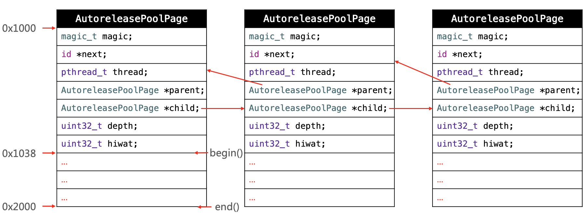

本项目用于巩固 iOS 基础知识。构建工具：
- Visual Studio Code 书写
- mdBook 构建
- GitHub Pages 发布
- Github Actions 自动部署
Foundation
-
nil、NIL、NSNULL有什么区别？ -
struct和class的区别? -
实现
isEqual和hash方法时要注意什么？ -
自定义对象用作字典的 key 的时需要注意什么？
-
id和instancetype有什么区别？ -
typeof()和__typeof()，__typeof__()的区别? -
import和include@class的区别？ -
define和extern的区别？[ -
NSInteger的范围？32位系统和64位系统的差别？ -
imageNamed:和imageWithContentsOfFile:哪一个性能更好？为什么？ -
NSProxy和NSObject的区别？ -
NSMutableArray是线程安全的吗？如何实现一个线程安全的NSMutableArray? -
NSCache和NSMutableDictionary的区别和对比？ -
NSMutableSet和NSMutableArray的区别？ -
NSMapTable、NSHashTable、NSPointerArray在什么情况下使用？
C/C++ 基础
-
下列代码中 p 的结果是多少？
int* p = 200; p++; printf("p:%d\n", p); -
char* p = "123";和char p[] = "123";的区别？[ -
sizeof的作用？ 32 位 和 64 位 系统下sizeof(NSInteger)为多少？
Foundation
nil、NIL、NSNULL 有什么区别？
-
nil、NIL、null可以说是等价的，都代表内存中一块空地址。 -
NSNULL代表一个指向nil的对象。通常在集合中占位使用，避免crash。
struct和class的区别
- 本质区别：
class是引用类型，它在堆中分配空间，栈中保存的只是引用；struct是值类型，它在栈中分配空间。
- 使用场景：
struct有性能优势class有面向对象的扩展优势.
实现 isEqual 和 hash 方法时要注意什么?
在 iOS 中，判断两个对象内容是否相等，一般调用 isEqual 方法。用 == 来判断两个对象是否相等，其实是判断两个对象的地址是否相等。isEqual 系统默认实现是比较两个对象的指针。所以在项目中如果需要指定一套自己判断两个对象是否相同的标准的时候就需要重写isEqual。
hash 方法的存在，是因为将对象加到 NSSet 等集合中时，需要利用对象的 Hash 值来标示对象在集合中的位置，将集合查找元素的时间复杂度优化成 O(1)。对于 Hash 值，系统默认是返回该对象的内存地址。
下面是一般isEqual和hash的写法模版。
- (BOOL)isEqual:(id)object {
// 1. == 判断地址
if (self == object) return YES;
// 2. isKindOfClass 判断对象类型
if (![object isKindOfClass:[self class]]) return NO;
// 3. 进行业务逻辑判断
return [self isEqualToAnother:(Person *)object];
}
- (BOOL)isEqualToAnother:(Person *)anotherObj {
// 业务逻辑
if ([self.name isEqualToString:anotherObj.name]) {
return YES;
} else {
return NO;
}
}
- (NSUInteger)hash {
return [self.name hash] ^ [self.job hash];
}
自定义对象用作字典的 key 的时需要注意什么？
1.遵守NSCopying协议，并实现copyWithZone: 方法：字典的key需要遵守NSCopying协议，所以自定义对象作为key时，也需要遵守NSCopying协议，并实现copyWithZone方法
2.同时还需要实现 isEqual 和 hash 方法
实现：
@interface CustomDictKey : NSObject<NSCopying>
@property (nonatomic, copy) NSString *name;
@end
@implementation CustomDictKey
- (id)copyWithZone:(nullable NSZone *)zone {
CustomDictKey *aCopy = [[CustomDictKey allocWithZone:zone] init];
if (aCopy) {
aCopy.name = [self.name copyWithZone:zone];
}
return aCopy;
}
- (BOOL)isEqual:(id)other {
if (other == self) return YES;
if (![other isKindOfClass:[self class]]) return NO;
return [self isEqualToAnother:(CustomDictKey *)other];
}
- (BOOL)isEqualToAnother:(CustomDictKey *)anotherObj {
if ([self.name isEqualToString:anotherObj.name]) {
return YES;
} else {
return NO;
}
}
- (NSUInteger)hash {
return [self.name hash] ^ [self.name hash];
}
@end
使用：
CustomDictKey *keyA = [[CustomDictKey alloc] init];
keyA.name = @"keyA";
CustomDictKey *keyB = [[CustomDictKey alloc] init];
keyB.name = @"keyB";
NSMutableDictionary *dict =[NSMutableDictionary dictionary];
[dict setObject:@"testObjectA" forKey:keyA];
[dict setObject:@"testObjectB" forKey:keyB];
NSLog(@"dict: %@", dict);
// "<CustomDictKey: 0x600002e8c4c0>" = testObjectA;
// "<CustomDictKey: 0x600002e8c4f0>" = testObjectB;
NSLog(@"objA: %@", [dict objectForKey:keyA]); // objA: testObjectA
NSLog(@"objB: %@", [dict objectForKey:keyB]); // objB: testObjectB
id 和 instancetype 有什么区别？
id 和 instancetype 的区别主要为关联返回类型和非关联返回类型的区别。
关联返回类型
即方法的返回结果为所在类的类型的对象。在ObjC中，根据Cocoa的命名规则，满足下述规则的方法都为关联返回类型：
- 类方法中，以
alloc或new开头 - 实例方法中，以
autorelease，init，retain或self开头
比如:
NSArray *array = [[NSArray alloc] init];
[NSArray alloc]与[[NSArray alloc]init]返回的都为NSArray的对象
非关联返回类型
即方法的返回结果不为所在类的类型的对象。
比如:
@interface CustomObject : NSObject
+ (id)factoryMethodB;
@end
+ factoryMethodB 方法的返回值为id，可以为任意类型，所以不一定是CustomObject*类型。
instancetype 的作用
使用 instancetype 作为返回值，返回的返回结果为所在类的类型的对象，即关联返回类型。
@interface CustomObject : NSObject
+ (instancetype)factoryMethodB;
@end
id obj = [CustomObject factoryMethodB];
obj 为 CustomObject* 类型。
instancetype vs id
一个例子：
@interface CustomObject : NSObject
+ (instancetype)factoryMethodA;
+ (id)factoryMethodB;
@end
@implementation CustomObject
+ (instancetype)factoryMethodA {
return [[[self class] alloc] init];
}
+ (id)factoryMethodB {
return [[[self class] alloc] init];
}
@end
// 因为 instancetype 期望的类型是 CustomObject*，由于 CustomObject 没有 -count 方法，所以编译器会报错
NSUInteger x = [[CustomObject factoryMethodA] count];
// 因为 id 类型可以为任意的类，由于有可能 -count 方法存在于其它类中，所以编译器不会报错
NSUInteger y = [[CustomObject factoryMethodB] count];
总结
- 相同点：都可以作为方法的返回类型。
- 不同点：
instancetype可以返回和方法所在类相同类型的对象，id只能返回未知类型的对象；instancetype只能作为返回值，不能像id那样作为参数。
typeof 和 __typeof，__typeof__ 的区别?
__typeof__()和__typeof()和typeof()都是C的扩展,且意思是相同的，标准C不包括这样的运算符标准。
在标准C 中写扩展是 以 __ 开头,所以在标准C中要写成 __typeof() 或 __typeof__()。在GNU C 中支持直接写 typeof() 或者 __typeof() 或者 __typeof__()。iOS 使用Clang编译器,默认用的C语言版本是GNU99。
import 和 include @class 的区别？
在 ObjC 中，可以使用 #include 、#import、@class 三种方式引用文件。
#include
-
在C语言中，使用
#include来引用头文件。使用#include “xx.h”来引入自定义的头文件，使用#include<xx.h>来引入库中的头文件。 -
#include一般不能防止重复引用头文件，如果要防止，操作比较复杂，具体为如下方式引用：#ifndef ViewController_h #define ViewController_h #endif
#import
#import是#include的升级版，可以防止重复引入头文件这种现象的发生。#import在引入头的时候，是完全将头文件拷贝到现在的文件中，所以也有效率上的问题。- 使用
#import需要避免出现头文件递归引入的现象。（如：A引入B，B引入A，那么A、B的头文件会互相不停的拷贝）
@class
@class用来告诉编译器有这样一个类，在写代码时不会报错。 @class只是使导入的类名在引用时不受影响，不能创建该类的对象，因为创建对象时也需要访问其内部方法。- 因为
#import引入头文件有效率问题，所以当还没有调用类中方法，仅仅是定义类变量的时候，使用@class来提醒编译器，而在真正需要调用类方法的时候，再进行#import。 - 如果A是B的父类，那么这是在B.h中就必须要使用
#import来引入A的头，因为需要知道A类中有哪些变量和方法，以免B类中重复定义。 - 能使用
@class的地方尽量使用@class，延后进行#import。
define 和 extern 的区别？
-
define是宏定义，即简单的替换，不会对数据类型做校验
#define MY_HOST @"www.xxxx.com" -
extern 和常量结合使用，会分配内存空间，编译器会做类型检查
// Prefs.h extern NSString * const PREFS_MY_CONSTANT; // Prefs.m NSString * const PREFS_MY_CONSTANT = @"prefs_my_constant";
NSInteger 的范围？32位系统和64位系统的差别？
32位和64位NSInteger定义:
#if __LP64__ || 0 || NS_BUILD_32_LIKE_64
typedef long NSInteger;
typedef unsigned long NSUInteger;
#else
typedef int NSInteger;
typedef unsigned int NSUInteger;
#endif
可以看到 NSInteger 在 32 位系统上是 int 的别称，在 64 位系统上是 long 的别称。
- int占4个字节(byte) 32位(bit), 2^32 = 4294967296:
- long 占4个字节 32位 范围： -2147483648 ~ 2147483647
- long long 占8个字节 64位 范围： -9223372036854775808 ~ 9223372036854775807
32位系统
NSInteger 是 int 的别称，NSUInteger 是 unsigned int 的别称：
-
NSInteger 有正负，则范围为： -2^16 + 1 ~ 2^16
-
NSUInteger 不带符号，占4个字节，32位 范围： 0 ~ 2^32
64位系统
NSInteger 是 long 的别称，NSUInteger 是 unsigned long 的别称：
-
NSInteger 有正负： -2^32+1 ~ 2^32
-
NSUInteger 不带符号： 0 ~2^64-1
imageNamed: 和 imageWithContentsOfFile: 哪一个性能更好？为什么？
-
imageNamed:：在生成image对象的同时，会将数据根据name缓存到系统内存中，以提高该方法获取相同图片对象的性能。即使生成的对象被autoreleasePool释放了，这份缓存也不会释放。在应用中需要使用大量相同的图片时非常有用，可以提供性能和内存利用率。 -
imageWithContentsOfFile:：该方法不会进行缓存，创建的对象被autoreleasePool释放后，下次使用相同名称的图片需要重新创建。
对比总结：大量使用imageNamed:方式会在不需要缓存的地方增加额外开销CPU的时间。当需要加载一张比较大的图片并且仅作一次性使用时，没必要去缓存这个图片，使用imageWithContentsOfFile:方法会更经济。
NSProxy 和 NSObject 的区别？
NSProxy 是一个类似于 NSObject 的基类，是一等公民。NSProxy是一个抽象的超类，为充当其他对象或尚不存在的对象的代理对象定义API。通常，发送给代理的消息被转发到实际对象，或者导致代理加载（或转换为）真实对象。NSProxy的子类可用于实现透明的分布式消息传递（例如，NSDistantObject）或用于延迟实例化创建代价高昂的对象。
NSProxy 的常见用法：
- 作为中间对象解决 NSTimer 的循环引用
- 模拟多继承
NSProxy 和 NSObject 的区别：
NSProxy进行消息转发的效率更高：NSObject的消息转发流程需要经历三个步骤：从自身和 superclass 的方法列表中查找方法，找不到再进行动态方法解析以及备用接收者，最后才是完整的消息转发。NSProxy是先从自身方法中查找方法，找不到立马调用-methodSignatureForSelector:和-forwardInvocation:进行消息转发。所以在 解决timer的循环引用时基本使用NSProxy作为中间件。
NSProxy更轻量级
参考
Foundation 中的集合
NSCache 和 NSMutableDictionary 的区别和对比？
对比
-
相同：
NSCache是一种可变集合，用于临时存储在资源不足时容易被回收的 key-value 键值对。NSCache 具有字典的所有功能，并且提供的API和NSMutableDictionary都是相似的。 -
区别：
NSCache还具有如下特性：- 内存不足时，
NSCache会自动清理缓存，并且提供了是否需要清理的开关和缓存清理时的回调； NSCache是线程安全的；- 区别于
NSMutableDictionary，NSCache不需要对 key 进行拷贝。
- 内存不足时，
NSCache 的实现
-
缓存淘汰：GNUSetup 使用 LRU/LFU 机制进行淘汰，使用频率较少的元素先淘汰；Swfit Foundation 依据对象的 cost 进行淘汰，cost 较少的先淘汰。GNUSetup 中使用 maptable 存储缓存对象，使用 array 维护 LRU/LFU 排序后的对象，用于缓存淘汰；Swfit Foundation 中使用 dictionary 存储缓存对象，维护一个排序的双向链表，用于缓存淘汰。
-
线程安全：GNUSetup 中没有保证 cache 线程安全的代码；Swfit Foundation 中使用 NSLock 保证缓存读写的线程安全
NSCache 的应用
1. SDWebImage 的应用中
在 SDWebImage 中，通过将图片放到 NSCache 中，利用 NSCache 自动释放内存的特点在内存不足时自动淘汰不常用的图片。在读取图片时，先检查内存里是否有，有则直接返回；没有再从磁盘里读取。以此减少磁盘操作，保证空间合理释放。
- (nullable UIImage *)imageFromCacheForKey:(nullable NSString *)key options:(SDImageCacheOptions)options context:(nullable SDWebImageContext *)context {
// 先检查内存里是否有，有则直接返回
UIImage *image = [self imageFromMemoryCacheForKey:key];
if (image) {
return image;
}
// 再从磁盘里读取
image = [self imageFromDiskCacheForKey:key options:options context:context];
return image;
}
- (nullable UIImage *)imageFromMemoryCacheForKey:(nullable NSString *)key {
return [self.memoryCache objectForKey:key];
}
代码中 self.memoryCache 为 SDMemoryCache， SDMemoryCache 内部就是将 NSCache 扩展为了 SDMemoryCache 协议：
@protocol SDMemoryCache <NSObject>
@required
- (nonnull instancetype)initWithConfig:(nonnull SDImageCacheConfig *)config;
- (nullable id)objectForKey:(nonnull id)key;
- (void)setObject:(nullable id)object forKey:(nonnull id)key;
- (void)setObject:(nullable id)object forKey:(nonnull id)key cost:(NSUInteger)cost;
- (void)removeObjectForKey:(nonnull id)key;
- (void)removeAllObjects;
@end
@interface SDMemoryCache <KeyType, ObjectType> : NSCache <KeyType, ObjectType> <SDMemoryCache>
@property (nonatomic, strong, nonnull, readonly) SDImageCacheConfig *config;
@end
NSMutableSet 和 NSMutableArray 的区别？
-
是否有序：
NSMutableSet中的元素是无序的，NSMutableArray则是有序的 -
元素是否重复：
NSMutableSet中不会存在重复元素，NSMutableArray则可以存在重复元素 -
查找的复杂度：搜索一个元素时
NSMutableSet比NSMutableArray效率高，主要是它用到了 hash 算法。 比如你要存储元素A，一个 hash 算法直接就能直接找到A应该存储的位置；同样，当你要访问A时，一个hash过程就能找到A存储的位置。而对于NSArray，若想知道A到底在不在数组中，则需要遍历整个数组，显然效率较低了；[set containsObject:@"C++"]; [array containsObject:@"C++"]; -
使用场景：
NSSet/NSMutableSet：不需要保证顺序的集合、去重、经常查询元素NSArray/NSMutableArray: 需要保证顺序、有重复元素
-
实现原理：
NSSet/NSMutableSet：
NSMapTable 、 NSHashTable 、 NSPointerArray
iOS 中，常见的强持有元素的集合为：NSArray 、NSDictionary 、NSSet，同时也提供了弱引用元素的集合：NSMapTable、NSHashTable 、 NSPointerArray等，当不需要集合强持有里面的元素是，可以使用。
使用场景举例：
- 比如有一个数组，数组里面存放了 100 个 view，每隔 10 分钟就会遍历这个数组，然后将这些 view 的 backgroundColor 改变。但是这个数组是输出给其它业务方使用的，也无妨拿到其中的某个 view，在进行一些操作后，就会
removeFromSuperView
问题：
- view
removeFromSuperView后，数组中的 view 会释放吗？
答案：不会，因为数组对里面的对象是强引用的，数组还持有这个 view，所以不会释放。
- 因为 view 不会释放，所以每次遍历的时候虽然有些 view 已经需要了，但是还存在，影响着性能，怎么解决？
答案：目的就是做到当 view removeFromSuperView 后就释放，不释放的根本原因就是因为数组强引用着 view，那么可以从这里入手，让数组不强持有这个view。这里可以使用 NSPointerArray`。
参考
C/C++
指针运算
下列代码中 p 的结果是多少？
int* p = 200;
p++;
printf("p:%d\n", p);
答案：204
原因：当一个加法运算，加号左边的操作数是一个指针，而右边的操作数是一个整数时，这个整数值先乘以指针类型的大小（sizeof(int)），然后再加到左边的数上。如果是 double，则为 8，char 为 1。
扩展：当同一个数组的两个成员的指针相减时，其差值为：地址值的差，再除以一个数组成员的size。这个结果代表了两个指针对应元素的下标之差。
char* p = "123"; 和 char p[] = "123"; 的区别？
答案：
char* p是一个"123"的指针，存储的是123字符数组，printf("p:%s\n", p);可输出其内容；char p[]是一个 char 数组，存放了123字符，printf("p:%s\n", p);可输出其内容。
sizeof 的作用？ 32 位 和 64 位 系统下 sizeof(NSInteger) 为多少？
sizeof 不是一个函数，而是一个运算符。根据数据的类型计算其占用的字节数，sizeof 传入的其实是一个变量，在编译的时候就确定了：
int age = 10000;
sizeof(age);
// 等价于
sizeof(int);
NSInteger 在 32 和 64 位系统上表现不同：
- 32位系统，NSInteger 是 int 的别称
- 64位系统，NSInteger 是 long 的别称
#if __LP64__ || 0 || NS_BUILD_32_LIKE_64
typedef long NSInteger;
typedef unsigned long NSUInteger;
#else
typedef int NSInteger;
typedef unsigned int NSUInteger;
#endif
- 32 位系统中，NSInteger 占 4 个字节，所以
sizeof(NSInteger)= 4 - 64 位系统中，NSInteger 占 8 个字节，所以
sizeof(NSInteger)= 8
同样 CGFloat 的实现类似：
- 32位系统，CGFloat 是 float 的别称， 占用 4 字节
- 64位系统，CGFloat 是 double 的别称， 占用 8 字节
typedef CGFLOAT_TYPE CGFloat;
#if defined(__LP64__) && __LP64__
# define CGFLOAT_TYPE double
#else
# define CGFLOAT_TYPE float
#endif
各种类型的数据占用的字节数量：
- BOOL：1
- int：4
- long: 8
- float: 4
NSLog(@"%ld", sizeof(float)); // 8 - double: 8
NSLog(@"%ld", sizeof(double)); // 8 - 指针: 8
char *p = 200; NSLog(@"%ld", sizeof(p)); // 8
UIKit
-
UIView和CALayer是什么关系？有何区别？ -
frame和bounds的区别? -
loadView方法的作用？ -
UIButton的父类是什么？UILabel的父类又是什么？ -
UITableView的继承关系？一直到NSObject -
UIViewController的生命周期？ -
UIView的生命周期？ -
UIViewController一旦收到内存警告会如何处理？ -
setNeedsDisplay和layoutIfNeeded两者是什么关系？
动画和渲染
-
有哪些绘制圆角的方案？不同方式的GPU、CPU占用分别怎么样的？
-
讲讲 CAlayer 的渲染树？
-
iOS中有哪些动画方式？
-
UIView 的 Animation 和 Core Animation 有什么区别？
-
隐式动画是什么？如何关闭？
-
UIView 的 animate.. block方式执行动画，是隐式动画吗？
-
UIView 在执行动画的过程中如何响应事件？
Responder Chain
-
说一说事件传递和响应者链。
-
UIView 哪些情况下不能接收触摸事件？
-
扩大按钮响应区域的方法有哪些？
-
手势冲突如何处理？
APP
- APP 的生命周期？
算法
-
找出两个
UIView的最近的公共父View，如果不存在，则输出 nil。 -
实现
convertRect: toView:方法？
UIKit
UIView 和 CALayer 是什么关系？有何区别？
-
UIView是对CALayer的封装。UIView和CALayer的相似行为都依赖于CALayer的实现。 -
CALayer继承自NSObject，不能够响应事件。 -
UIView继承自UIReponder，负责响应事件。 -
UIView依赖于CALayer得以显示。无论是修改了 layer 的可视内容或是几何信息，view 都会跟着变化，反之也是如此，比如下列代码:UIView *view = [[UIView alloc] initWithFrame:CGRectMake(100, 100, 100, 100)]; view.backgroundColor = [UIColor redColor]; // 1. 修改 layer 的颜色 view.layer.backgroundColor = [[UIColor blueColor] CGColor]; // view 将显示呈蓝色 NSLog(@"view color: %@", view.backgroundColor); // view color: 0 0 1 1 NSLog(@"layer color: %@", view.layer.backgroundColor); // layer color: 0 0 1 1 // 2. 修改 layer 的位置 view.layer.frame = CGRectMake(100, 200, 100, 100); NSLog(@"view y: %f", view.frame.origin.y); // view y: 200.000000 NSLog(@"layer y: %f", view.layer.frame.origin.y); // layer y: 200.000000 [self.view addSubview:view];
为什么需求分离UIView和CALayer
主要是基于两点考虑：
- 职责不同：
UIVIew的主要职责是负责接收并响应事件；而CALayer的主要职责是负责显示 UI。 - 需要复用：在 macOS 和 App 系统上，
NSView和UIView虽然行为相似，在实现上却有着显著的区别，却又都依赖于CALayer。在这种情况下，只能封装一个CALayer出来。
frame 和 bounds 的区别?
-
frame: 表示
view在父view坐标系统中的位置和大小，参照点是父视图的坐标系统。 -
bounds: 表示
view在本地坐标系统中的位置和大小，参照点是本地坐标系统。
loadView 方法的作用？
- 作用：用来创建
UIViewController的view。每个UIViewController都有一个loadView方法。 - 调用时机：每次访问
UIViewController的view(比如controller.view、self.view)而且view为nil时，loadView方法就会被调用。 - 默认实现：
loadView的默认实现在[super loadView]中：- 查找与
UIViewController相关联的xib文件，通过加载xib文件来创建UIViewController的view。如果在初始化UIViewController的时候指定了xib文件名，那么就会根据传入的xib文件名去加载对于的xib文件，如果没有明显的传入xib文件名，就会加载跟UIViewController同名的xib文件。 - 如果没有找到相关联的xib文件，就会创建一个空白的
UIView,然后赋值给UIViewController的view属性。
- 查找与
- 正确使用：用来自定义
UIViewController的view，可以在上面进行一些自定义设置。重写loadView方法，并且不需要调用[super loadView]。
- (void)loadView {
UIView *customView = [[UIView alloc] initWithFrame:[UIScreen mainScreen].bounds];
self.view = customView;
}
UIButton 的父类是什么？UILabel 的父类又是什么？
UIButton->UIControl->UIView->UIResponderUILabel->UIView->UIResponder
UIControl 实际上是针对点击触摸进行进一步的封装，可以方便得为点击等添加对应的action。继承自UIControl的控件包括
UIButton，UIDatePicker，UIPageControl，UISegmentedControl，UITextField，UISwitch，UISlider等，其它控件则直接继承自 UIView。
UITableView 的继承关系？
UITableView -> UIScrollView -> UIView -> UIResponder -> NSObject
UIViewController 的生命周期
-[ViewController init]
-[ViewController loadView]
-[ViewController viewDidLoad]
-[ViewController viewWillAppear:]
-[ViewController viewWillLayoutSubviews]
-[ViewController viewDidLayoutSubviews]
-[ViewController viewDidAppear:]
-[ViewController viewWillDisappear:]
-[ViewController viewDidDisappear:]
-[ViewController dealloc]

UIView 的生命周期
view层级操作
- (void)addSubview:(UIView *)view;
- (void)didAddSubview:(UIView *)subview;
- (void)willRemoveSubview:(UIView *)subview;
- (void)willMoveToSuperview:(nullable UIView *)newSuperview;
- (void)didMoveToSuperview;
- (void)willMoveToWindow:(nullable UIWindow *)newWindow;
- (void)didMoveToWindow;
- (void)removeFromSuperview;
view布局操作
- (void)layoutSubviews;
- (void)setNeedsLayout;
- (void)layoutIfNeeded;
UIView生命周期
init->willMoveToSuperview->didMoveSuperview->(如果有子view)->subview的willMoveToSuperview->subview的didMoveSuperview->didAddSubview->addSubview-viewWillAppear->loadViewIfNeeded->willMoveToWindow->(如果有子view)->subview的willMoveToWindow->subview的didMoveToWindow->didMoveToWindow->viewWillLayoutSubviews->viewDidLayoutSubviews->layoutSubviews->drawRect->viewDidAppear
UIViewController一旦收到内存警告会如何处理？
当系统内存告急时， ViewController 会接收 didReceiveMemoryWarning :首先会判断当前的 ViewController 是否还显示在 window 上，如果不在就会移除当前的 ViewController，销毁ViewController 上面的子控件，并执行 ViewDidUnload 方法。
setNeedsDisplay 和 layoutIfNeeded 两者是什么关系？
-
setNeedsDisplay是给当前的视图做了标记。 -
layoutIfNeeded查找是否有标记，如果有标记及立刻刷新。
只有这二者合起来使用，才会起到立刻刷新的效果。
动画和渲染
有哪些绘制圆角的方案？不同方式的GPU、CPU占用分别怎么样的？
主要有以下 4 种：
- 设置 layer 的 cornerRadius
- 用贝塞尔曲线
UIBezierPath作 mask 圆角 - 使用 CoreGraphics 重新绘制圆角
- 混合图层，用一张镂空的透明图片作遮罩
1. 设置 layer 的 cornerRadius
view.layer.masksToBounds = YES;
view.layer.cornerRadius = 10.f;
2. 用贝塞尔曲线 UIBezierPath 作 mask 圆角
CAShapeLayer + UIBezierPath:
CAShapeLayer *layer = [CAShapeLayer layer];
UIBezierPath *aPath = [UIBezierPath bezierPathWithOvalInRect:view.bounds];
layer.path = aPath.CGPath;
view.layer.mask = layer;
3. 使用 CoreGraphics 重新绘制圆角
使用 CoreGraphics 绘制圆角：
@implementation UIImage (RoundedCorner)
- (UIImage *)drawCircleImage {
CGFloat side = MIN(self.size.width, self.size.height);
UIGraphicsBeginImageContextWithOptions(CGSizeMake(side, side), false, [UIScreen mainScreen].scale);
CGContextAddPath(UIGraphicsGetCurrentContext(),
[UIBezierPath bezierPathWithOvalInRect:CGRectMake(0, 0, side, side)].CGPath);
CGContextClip(UIGraphicsGetCurrentContext());
CGFloat marginX = -(self.size.width - side) / 2.f;
CGFloat marginY = -(self.size.height - side) / 2.f;
[self drawInRect:CGRectMake(marginX, marginY, self.size.width, self.size.height)];
CGContextDrawPath(UIGraphicsGetCurrentContext(), kCGPathFillStroke);
UIImage *output = UIGraphicsGetImageFromCurrentImageContext();
UIGraphicsEndImageContext();
return output;
}
@end
dispatch_async(dispatch_get_global_queue(DISPATCH_QUEUE_PRIORITY_DEFAULT, 0), ^{
UIImage *image = view.image;
image = [image drawCircleImage];
dispatch_async(dispatch_get_main_queue(), ^{
view.image = image;
});
});
4. 混合图层，用一张镂空的透明图片作遮罩
UIView *parent = [view superview];
UIImageView *cover = [[UIImageView alloc] initWithFrame:CGRectMake(0, 0, imgSize.width, imgSize.height)];
cover.image = [UIImage imageNamed:@"cover"];
[parent addSubview:cover];
cover.center = view.center;
对比总结
-
方法1 设置 layer 的 cornerRadius 的方式设置简单，苹果在 iOS9 上进行了优化，不再需要离屏渲染，性能差别不明显，简单圆角场景下推荐使用；
-
方法2 用贝塞尔曲线
UIBezierPath作 mask 圆角，使用了矢量并与位图叠加，导致运算量上升，GPU运算量高； -
方法3 使用 CoreGraphics 重新绘制圆角，基于单张位图运算，比方法2要好，适合位图尺寸很大，数量很多的情况下使用。但要注意内存警告，最好配合缓存机制使用，避免因内存溢出而崩溃；
-
方法4 混合图层，用一张镂空的透明图片作遮罩，基于透明位图，可用于异形遮罩，但需要根据图片大小做多张特殊位图，不是很方便。
iOS中的动画方式
-
核心动画 Core Animation
-
UIView 动画
UIView 的 Animation 和 Core Animation 有什么区别？
-
区别：
- 核心动画只能添加到 CALayer(图层)，所以不能响应事件
- 核心动画一切都是假象，并不会改变真实的值;
-
使用场景：
- 如果需要与用户交互就使用 UIView 的动画;不需要与用户交互可以使用核心动画;
-
Core Animation 使用较多的场景：
- 在转场动画中,核心动画的类型比较多;
- 根据一个路径做动画,只能用核心动画（帧动画）;
- 动画组: 同时做多个动画;
隐式动画
如果一个 CALayer 对象对应着 UIView，则称这个 Layer 是一个 Root Layer, 非 Root Layer 一般是通过 CALayer 或者其子类直接创建的。所有的非 Root Layer 在设置 Amimation Properties 的时候都存在隐式动画，默认的 duration 是0.25秒。
如何关闭隐式动画？
可以通过动画事务 CATransaction 进行关闭。
事务（transaction）实际上是Core Animation用来包含一系列属性动画集合的机制，用指定事务去改变可以做动画的图层属性，不会立刻发生变化，而是提交事务时用一个动画过渡到新值。任何 Layer 的可动画属性的设置都属于某个 CATransaction，事务的作用是为了保证多个属性的变化同时进行。事务可以嵌套，当事务嵌套时候，只有最外层的事务 commit 之后，整个动画才开始。
[CATransaction begin];
[CATransaction setDisableActions:YES];
// 有隐式动画的逻辑
[CATransaction commit];
UIView 在执行动画的过程中如何响应事件？
UIView 在执行动画的过程中，view 的 frame 只改变的一次，直接改到了最终的frame。比如下面代码，block 中的代码只会调用一次：
[UIView animateWithDuration:2 animations:^{
CGFloat Y = self.animationView.frame.origin.y + 50;
self.animationView.frame = CGRectMake(self.animationView.frame.origin.x, Y, 100, 100);
} completion:^(BOOL finished) {
}];
并且，UIView 在执行动画的过程中不会响应事件。
想要响应事件可以通过UIView 的 touchesBegan: 方法中判断，有两种方法：
- 通过 CALayer 的 presentationLayer 来访问对应的呈现树图层，presentationLayer 会动画不断变化，判断触发事件的点是否在 presentationLayer 上即可
- 直接调用 CALayer 的
hitTest:方法
比如下面的代码中，需要在 animationView 执行动画的过程中响应 viweTapAction 事件
@interface ViewController ()
@property (nonatomic, strong) UIView *animationView; // 做动画的 view
@end
@implementation ViewController
- (void)viewDidLoad {
[super viewDidLoad];
self.animationView = [[UIView alloc] initWithFrame:CGRectMake(100, 100, 100, 100)];
self.animationView.backgroundColor = [UIColor redColor];
[self.view addSubview:self.animationView];
self.animationView.userInteractionEnabled = NO;
}
// 执行动画
- (void)viewAnimationAction {
// uiview animation 是隐式动画
// animation 动画过程中不会响应事件
[UIView animateWithDuration:2 animations:^{
CGFloat Y = self.animationView.frame.origin.y + 50;
self.animationView.frame = CGRectMake(self.animationView.frame.origin.x, Y, 100, 100);
} completion:^(BOOL finished) {
}];
}
// 点击事件，改变 view 的背景色
- (void)viweTapAction {
self.animationView.backgroundColor = [UIColor colorWithRed:(arc4random()%255)/ 255.f green:(arc4random()%255)/ 255.f blue:(arc4random()%255)/ 255.f alpha:1];
}
@end
方法1:
- (void)touchesBegan:(NSSet<UITouch *> *)touches withEvent:(UIEvent *)event {
// 获取到点击的位置
UITouch *touch = touches.anyObject;
CGPoint point = [touch locationInView:self.view];
// 判断 redView.layer.presentationLayer 是否包含这个点
if (CGRectContainsPoint(self.animationView.layer.presentationLayer.frame, point)) {
[self viweTapAction]; // 响应事件
}
}
方法2:
- (void)touchesBegan:(NSSet<UITouch *> *)touches withEvent:(UIEvent *)event {
// 获取到点击的位置
UITouch *touch = touches.anyObject;
CGPoint point = [touch locationInView:self.view];
if ([self.animationView.layer.presentationLayer hitTest:point] != nil) {
[self viweTapAction]; // 响应事件
}
}
参考
iOS 中的事件传递和响应者链

事件的生命周期大概为三个阶段：
- 事件的产生
- 事件的传递
- 事件的响应
事件的产生
苹果注册了一个 Source1 (基于 mach port 的) 用来接收系统事件，其回调函数为 __IOHIDEventSystemClientQueueCallback()。
当一个硬件事件(触摸/锁屏/摇晃等)发生后，首先由 IOKit.framework 生成一个 IOHIDEvent 事件并由 SpringBoard 接收。这个过程的详细情况可以参考这里。SpringBoard 只接收按键(锁屏/静音等)，触摸，加速，接近传感器等几种 Event，随后用 mach port 转发给需要的App进程。随后苹果注册的那个 Source1 就会触发回调，并调用 _UIApplicationHandleEventQueue() 进行应用内部的分发。
_UIApplicationHandleEventQueue() 会把 IOHIDEvent 处理并包装成 UIEvent 进行处理或分发，其中包括识别 UIGesture/处理屏幕旋转/发送给 UIWindow 等。通常事件比如 UIButton 点击、touchesBegin/Move/End/Cancel 事件都是在这个回调中完成的。
事件的分类
iOS中的事件可以分为3大类型：
- 触摸事件
- 加速计事件
- 远程控制事件
这里是关注触摸事件。
在iOS中，并不是任何对象都能处理事件，只有继承了UIResponder的对象才能接受并处理事件，比如：
- UIApplication
- UIViewController
- UIView
在UIResponder中提供了以下方法来处理触摸事件：
- (void)touchesBegan:(NSSet *)touches withEvent:(UIEvent *)event;
- (void)touchesMoved:(NSSet *)touches withEvent:(UIEvent *)event;
- (void)touchesEnded:(NSSet *)touches withEvent:(UIEvent *)event;
- (void)touchesCancelled:(NSSet *)touches withEvent:(UIEvent *)event;
对于触摸事件，iOS中提供了UITouch对象对象，其作为用：
- 保存着跟手指相关的信息，比如触摸的位置、时间、阶段
- 当手指移动时，系统会更新同一个UITouch对象，使之能够一直保存该手指在的触摸位置
- 当手指离开屏幕时，系统会销毁相应的UITouch对象
比如在UIView的几个touch方法中，就是将UITouch作为参数传递进去的：
- (void)touchesBegan:(NSSet *)touches withEvent:(UIEvent *)event
- (void)touchesMoved:(NSSet *)touches withEvent:(UIEvent *)event
- (void)touchesEnded:(NSSet *)touches withEvent:(UIEvent *)event
- (void)touchesCancelled:(NSSet *)touches withEvent:(UIEvent *)event
UITouch的产生为：
当用户用一根手指触摸屏幕时，会创建一个与手指相关的UITouch对象，并且一根手指对应一个UITouch对象。如果两根手指同时触摸一个view，那么view只会调用一次touchesBegan:withEvent:方法，touches参数中装着2个UITouch对象；如果这两根手指一前一后分开触摸同一个view，那么view会分别调用2次touchesBegan:withEvent:方法，并且每次调用时的touches参数中只包含一个UITouch对象。
事件的传递
- 发生触摸事件后，系统会将该事件加入到一个由UIApplication管理的事件队列中。
- 然后UIApplication会从事件队列中取出最前面的事件，并将事件分发下去以便处理，通常，先发送事件给应用程序的主窗口（keyWindow）。
- 主窗口keyWindow会在视图层次结构中找到一个最合适的视图来处理触摸事件，这也是整个事件处理过程的第一步。
找到合适的视图控件后，就会调用视图控件的touches方法来作具体的事件处理。
也就是说，触摸事件的传递是从父控件传递到子控件，即UIApplication->window->寻找处理事件最合适的view的一个过程。
寻找合适的控件来处理事件
- 首先判断主窗口（keyWindow）自己是否能接受触摸事件
- 判断触摸点是否在自己身上
- 子控件数组中从后往前遍历子控件，重复前面的两个步骤
- 找到view，比如叫做fitView，那么会把这个事件交给这个fitView，再遍历这个fitView的子控件，直至没有更合适的view为止。
- 如果没有符合条件的子控件，那么就认为自己最合适处理这个事件。
比如下面的四个View：白色、红色、蓝色、黄色，其中白色view是UIViewController的view，点击黄色view事件的传递过程为：
UIApplication -> UIWindow -> 白色view（UIViewController的view） -> 红色view -> 蓝色view -> 黄色view

找到合适的控件依赖于hitTest:withEvent:和pointInside:withEvent:两个方法：
// recursively calls -pointInside:withEvent:. point is in the receiver's coordinate system
- (nullable UIView *)hitTest:(CGPoint)point withEvent:(nullable UIEvent *)event;
// default returns YES if point is in bounds
- (BOOL)pointInside:(CGPoint)point withEvent:(nullable UIEvent *)event;
hitTest:withEvent: 方法
- 作用：寻找并返回最合适的view。
- 调用时机：只要事件一传递给一个控件,这个控件就会调用他自己的hitTest：withEvent：方法。不管这个控件能不能处理事件，也不管触摸点在不在这个控件上，事件都会先传递给这个控件，随后再调用hitTest:withEvent:方法
- (UIView *)hitTest:(CGPoint)point withEvent:(UIEvent *)event{
// 1. 判断能否接收事件
if (self.userInteractionEnabled == NO || self.hidden == YES || self.alpha <= 0.01) return nil;
// 2. 判断触摸点是否在自身上
if ([self pointInside:point withEvent:event] == NO) return nil;
// 3. 从后往前遍历子控件数组
for (int i = (int)self.subviews.count - 1; i >= 0; i--) {
UIView *childView = self.subviews[i];
// 坐标系的转换, 把窗口上的点转换为子控件上的点
CGPoint childP = [self convertPoint:point toView:childView];
UIView *fitView = [childView hitTest:childP withEvent:event];
if (fitView) { // 如果能找到最合适的view
return fitView;
}
}
// 4. 没有找到更合适的view，自己作为最合适处理这个事件的view。
return self;
}

pointInside:withEvent: 方法
pointInside:withEvent:方法判断点在不在当前view上（方法调用者的坐标系上）如果返回YES，代表点在方法调用者的坐标系上;返回NO代表点不在方法调用者的坐标系上，那么方法调用者也就不能处理事件。
事件的响应
事件从UIApplication->UIWindow->寻找处理事件最合适的view传递后，就会调用控件的touches方法来作具体的事件处touchesBegan…touchesMoved…touchedEnded…等。touches 方法就是对事件的响应，事件的响应是顺着响应链向上传递的，这个传递是依赖于UIResponder的nextResponder：
- UIView ：如果view是VC的root view，则它的nextResponder是 VC；否则是父view
- UIViewController ：如果 vc 是window的root vc，则它的nextResponder是 window，否则是父vc
- UIWindow：它的nextResponder是UIApplication
- UIApplication ：它的nextResponder是app delegate。
所以整个事件在找到合适的view之后，判断当前view是否能处理这个事件，如果不能，则顺着nextResponder向父view传递，如果传递到VC也不能处理这个事件，则继续传递到UIWindow，如果window对象也不处理，则其将事件或消息传递给UIApplication对象，如果UIApplication也不能处理该事件或消息，则将其丢弃。其中任何一环能处理事件，则进行时间处理，整个事件的传递就结束了。

总结
事件处理的整个流程总结：
- 触摸屏幕产生触摸事件后，触摸事件会被添加到由UIApplication管理的事件队列中（即，首先接收到事件的是UIApplication）。
- UIApplication会从事件队列中取出最前面的事件，把事件传递给应用程序的主窗口（keyWindow）。
- key window会在视图层次结构中找到一个最合适的视图来处理触摸事件。（至此，第一步已完成)
- 最合适的view会调用自己的touches方法处理事件
- touches默认做法是把事件顺着响应者链条向上抛，即顺着nextResponder向上传递。
事件的传递和响应的区别：
事件的传递是从上到下（父控件到子控件），事件的响应是从下到上（顺着响应者链条向上传递：子控件到父控件。
应用
1. 扩大按钮的响应区域
pointInside:withEvent:方法可以判断事件的点是否在当前view上，则可以重写该方法，扩大响应区域。有两种方式：
- 继承自 UIButton 重写该方法
- 使用分类，在分类中重写该方法。（不建议，因为分类会覆盖本类的实现）
代码可参考
另外，不建议重写hitTest:withEvent:，因为会阻断事件的传递，比如上面的代码改成这样，并且把红色的button扩大较大的热区，则蓝色的button就不能响应事件：
- (UIView *)hitTest:(CGPoint)point withEvent:(UIEvent *)event {
CGRect rect = [self enlargedRect];
if (CGRectContainsPoint(rect, point)) {
return self;
}
return nil;
}

2. 自定事件响应机制
1.有一个viewA，viewA有一个subView叫做viewB，要求触摸viewB时,viewB会响应事件，而触摸viewA本身，不会响应该事件。如何实现？
在父View，即viewA中的hitTest:方法中，将自己从合适的view中去除：
- (UIView *)hitTest:(CGPoint)point withEvent:(UIEvent *)event{
UIView *view = [super hitTest:point withEvent:event];
if (view == self) {
return nil;
}
return view;
}
2.一个事件多个对象处理
利用 touchs 方法，自己先响应事件，再向上传递
- (void)touchesBegan:(NSSet *)touches withEvent:(UIEvent *)event{
// 1.自己先处理事件...
NSLog(@"do somthing...");
// 2.再调用系统的默认做法，再把事件交给上一个响应者处理
[super touchesBegan:touches withEvent:event];
}
UIView 哪些情况下不能接收触摸事件?
有三种情况：
userInteractionEnabled为NO- 隐藏，即
hidden为YES alpha <= 0.01
扩大按钮响应区域的方法有哪些？
-
在 button 上面盖一个蒙层，用蒙层做事件响应
-
重写 UIButton 的
pointInside:withEvent:方法，扩大响应区域，或者重写hitTest:withEvent:，但不建议，以为会阻断事件的传递。具体见iOS 中的事件传递和响应者链
手势冲突如何处理？
1.修改响应优先级
UIGestureRecognizer类中有两个方法
// 让自身这个手势事件响应优先级低于其它手势事件
// 只是在对于比它响应优先级低的手势调用
- (BOOL)gestureRecognizer:(UIGestureRecognizer *)gestureRecognizer shouldBeRequiredToFailByGestureRecognizer:(UIGestureRecognizer *)otherGestureRecognizer {
return YES;
}
// 让自身这个手势事件响应优先级高于其它手势事件
// 只是在对于比它响应优先级高的手势调用
- (BOOL)gestureRecognizer:(UIGestureRecognizer *)gestureRecognizer shouldRequireFailureOfGestureRecognizer:(UIGestureRecognizer *)otherGestureRecognizer {
return YES;
}
2.同时响应
// 共存 A手势或者B手势 代理方法里shouldRecognizeSimultaneouslyWithGestureRecognizer 有一个是返回YES，就能共存
- (BOOL)gestureRecognizer:(UIGestureRecognizer *)gestureRecognizer shouldRecognizeSimultaneouslyWithGestureRecognizer:(UIGestureRecognizer *)otherGestureRecognizer {
return YES;
}
参考
APP
APP 的生命周期
iOS APP 的生命周期包含以下阶段：
- Not running（未运行状态）：app未启动或者被终止（无论是被系统还是用户）。
- Inactive（不活跃状态）：app在前台运行但未接收事件。app只在转换到不同状态时会短暂地保持此状态。进入此状态后，app会很快进入后台（Background）或活动（Active）状态。（打电话时或者下拉通知栏时app会进入此状态）
- Active（活动状态）：app在前台运行并且正在接收事件。处于前台的app通常状态就是Active。
- Background（后台状态）：app在屏幕上不可见但是正在执行代码，这是后台状态。当用户退出应用后（应该是按home键），系统会将app在挂起（suspend）前短暂地移动到后台（Background）状态。
- Suspended（挂起状态）：应用程序在内存中，但不执行代码。系统会挂起在后台（Background）状态的应用程序。系统可能会为了腾出内存空间，将app清除出内存。

UIApplication 提供了对APP的状态管理，可以从其 UIApplicationDelegate 中处理生命周期各个阶段的需要执行的业务，同时也有相应的通知。
生命周期各阶段
-
APP 启动
iOS APP的入口为mina函数：
int main(int argc, char * argv[]) { NSString * appDelegateClassName; @autoreleasepool { // Setup code that might create autoreleased objects goes here. appDelegateClassName = NSStringFromClass([AppDelegate class]); } return UIApplicationMain(argc, argv, nil, appDelegateClassName); }main函数执行并返回一个 UIApplicationMain 函数。UIApplicationMain 中会创建一个 UIApplication 的实例，是一个单例，可以通过
[UIApplication sharedApplication]访问。主线程的 runloop 也是从 main 函数这里开始的：UIApplicationMian中创建了一个和主线程对应的runloop，一直处于消息处理和休息等待的循环，一直到app退出。 -
APP 启动完成 FinishLaunching
- (BOOL)application:(UIApplication *)application didFinishLaunchingWithOptions:(NSDictionary *)launchOptions { // Override point for customization after application launch. return YES; } // 对应通知 UIKIT_EXTERN NSNotificationName const UIApplicationDidFinishLaunchingNotification; -
程序由后台转入前台:前台是指app为当前手机展示. app首次启动时不会调用该方法
- (void)applicationWillEnterForeground:(UIApplication *)application; // 对应通知 UIKIT_EXTERN NSNotificationName const UIApplicationWillEnterForegroundNotification; -
程序进入活跃状态 该方法app首次进入就会调用, 由后台转入前台, 也会在
applicationWillEnterForeground方法之后调用- (void)applicationDidBecomeActive:(UIApplication *)application; // 对应通知 UIKIT_EXTERN NSNotificationName const UIApplicationDidBecomeActiveNotification; -
程序进入非活跃状态 比如有电话进来或者锁屏等情况, 此时应用会先进入非活跃状态, 也有可能是程序即将进入后台(进入后台前会先调用)
- (void)applicationWillResignActive:(UIApplication *)application; // 对应通知 UIKIT_EXTERN NSNotificationName const UIApplicationWillResignActiveNotification; -
程序进入后台
- (void)applicationDidEnterBackground:(UIApplication *)application; // 对应通知 UIKIT_EXTERN NSNotificationName const UIApplicationDidEnterBackgroundNotification;当程序进入后台，很快便会就如挂起状态，在挂起状态下，无法执行任何代码。等到系统内存告急时会被杀死，如果有未完成的任务，可以在该方法下申请延时180s执行代码.
__block UIBackgroundTaskIdentifier backTaskId; backTaskId = [application beginBackgroundTaskWithExpirationHandler:^{ NSLog(@"backgroundTask reaches 0"); [application endBackgroundTask:backTaskId]; backTaskId = UIBackgroundTaskInvalid; }]; -
程序即将退出
- (void)applicationWillTerminate:(UIApplication *)application; // 对应通知 UIKIT_EXTERN NSNotificationName const UIApplicationWillTerminateNotification;
UIKit 相关算法
1. 找出两个 UIView 的最近的公共父 View，如果不存在，则输出 nil。
如果是在不同的Window上，则没有公共父 view。
- 思路：1. 用 set 保存 view1 的所有父view，再遍历 view2 的父view，如果set中有，则为最近父view
- 复杂度：时间 O(n)， set查找的复杂度为O(1)，空间 O(n)
- (UIView *)commonSuperViewFromView1:(UIView *)view1 view2:(UIView *)viwe2 {
NSSet *view1SuperViews = [self superViews:view1];
while (viwe2 != nil) {
if ([view1SuperViews containsObject:viwe2]) return viwe2;
viwe2 = [viwe2 superview];
}
return nil;
}
- (NSSet *)superViews:(UIView *)view {
if (!view) return nil;
NSMutableSet *set = [NSMutableSet set];
while (view != nil) {
[set addObject:view];
view = [view superview];
}
return [set copy];
}
内存基础知识
-
内存中的5大区分别是什么？
-
堆区和栈区的区别？
-
说一下什么是悬垂指针？什么是野指针?
-
BAD_ACCESS在什么情况下出现? -
什么是深拷贝？什么是浅拷贝？
-
copy 和 mutableCopy 的区别？
iOS 内存管理策略
-
iOS 内存管理有哪些关键字，说一下对这些关键字的理解？
-
assign修饰对象会有什么问题？ -
weak和assign的区别？ -
weak的实现原理？ -
delegate 为何要用
weak修饰? -
block属性为什么需要用copy来修饰？ -
内存管理默认的关键字是什么？
-
nil 和 release 的区别？
-
为什么不要在初始化方法和 dealloc 中使用访问器方法(setter 和 getter)？
-
ObjC 对象在 dealloc 中会做些什么事情？
-
NSString使用strong可以吗？NSArray呢？ -
NSNumber、NSString、NSDate的内存管理? 或者说 Tagged Pointer。 -
iOS 中哪些情况会导致循环引用？如何检测？
ARC
-
ARC 内存管理的原则？
-
使用自动引用数ARC应该遵循的原则?
-
ARC 的
retainCount怎么存储的？ -
ARC 在编译时做了哪些工作？在运行时做了哪些工作？
AutoreleasePool
-
简要说一下
@autoreleasepool的数据结构？ -
@autoreleasepool的释放时机？ -
@autoreleasepool与NSThread、NSRunLoop的关系? -
什么场景需要手动添加
@autoreleasepool？ -
autorelease对象什么时候释放？ -
访问
__weak修饰的变量，是否已经被注册在了@autoreleasePool中？为什么？ -
为什么已经有了 ARC ,但还是需要
@autoreleasepool的存在？ -
方法或函数返回一个对象时，会对对象
autorelease么？为什么？
内存基础
内存中的5大区分别是什么？
- 栈区 Stack：存放函数的参数值、局部变量的值等，从高地址向低地址生长。其操作方式为FIFO，由编译器自动分配释放，不需要程序员管理。
- 堆区 Heap：动态内存分配区域，通过 alloc 分配，从高地址向低地址生长。
- 全局区／静态区 Static：全局变量和静态变量的存储是放在一块的，初始化的全局变量和静态变量在一块区域， 未初始化的全局变量和未初始化的静态变量在相邻的另一块区域。程序结束后由系统释放。
// 未初始化的 int a; // 已初始化的 int b = 100; - 常量区：常量字符串就是放在这里的。 程序结束后由系统释放。
- 代码区：存放函数体的二进制代码。

-
堆区的内存是应用程序共享的，堆中的内存分配是系统负责的；系统使用一个链表来维护所有已经分配的内存空间（系统仅仅纪录，并不管理具体的内容）；变量使用结束后，需要释放内存，OC中是根据引用计数＝＝0，就说明没有任何变量使用该空间，那么系统将直接收回；
-
当一个app启动后，代码区，常量区，全局区大小已固定，因此指向这些区的指针不会产生崩溃性的错误。而堆区和栈区是时时刻刻变化的（堆的创建销毁，栈的弹入弹出），所以当使用一个指针指向这两个区里面的内存时，一定要注意内存是否已经被释放，否则会产生程序崩溃（也即是野指针报错）。
堆区和栈区的区别？
-
申请方式：栈区由系统自动分配，自动释放，无需程序员管理；堆区是动态内存分配区域，由程序员申请和释放。
-
生长方向：栈区从高地址向低地址生长，堆区相反。
什么是悬垂指针？什么是野指针?
-
悬垂指针 Dangling Pointer: 指针指向的内存已经被释放了，但是指针还存在，这就是一个 悬垂指针 或者说 迷途指针
-
野指针 Wild Pointer：没有进行初始化的指针，其实都是野指针
BAD_ACCESS 在什么情况下出现?
访问了已经被销毁的内存空间，就会报出这个错误。 根本原因是有 悬垂指针 没有被释放。
深拷贝 VS 浅拷贝
-
深拷贝: 拷贝出来的对象与原对象地址不一致，修改拷贝对象的值对源对象的值没有任何影响。 深拷贝是直接拷贝整个对象内容到另一块内存中。
-
浅拷贝: 拷贝出来的对象与原对象地址一致，修改拷贝对象的值会直接影响源对象的值。
总结：浅复制就是指针拷贝；深复制就是内容拷贝
copy VS mutableCopy
-
copy: 拷贝出来的对象类型总是不可变类型(例如, NSString, NSArray, NSDictionary等等) -
mutableCopy: 拷贝出来的对象类型总是可变类型(例如, NSMutableString, NSMutableArray, NSMutableDictionary等等)
使用copy/mutableCopy和直接赋值有什么区别？
直接赋值实际上还是同一个对象，如果之前的对象是一个可变结合，将其赋值到一个不可变集合上，对原来集合的操作也是对新的集合的操作，因为本质是一同一个对象。比如
NSMutableArray * arr1 = [NSMutableArray array];
[arr1 addObject:@"A"];
NSArray * arr2 = [NSArray array];
arr2 = arr1;
[arr1 addObject:@"C"];
NSLog(@"arr1 = %@", arr1); // A,C
NSLog(@"arr2 = %@", arr2); // A,c
直接赋值之后，arr1 和 arr2 完全就是同一个对象，指向同一个地址，所以赋值之后再给 arr1 添加对象，实际上也是给 arr2 添加对象。而如果使用copy之后赋值，就是两个完全不一样的对象，后续的操作也不会有影响。
copy：如果调用对象是不可变的，则是浅拷贝；如果调用对象是可变的，则是深拷贝。mutableCopy: 对集合使用mutableCopy，都是深拷贝。
集合内容实现深拷贝
在Foundation框架中，所有的 collectioon 类在默认的情况下都执行浅拷贝，也就是说只拷贝容器对象本身，不复制其中的数据。这样做的目的是，容器内的对象未必都能拷贝，而且调用者也未必想在拷贝容器时一并拷贝其中的某个对象。
验证：
NSArray *array = @[@"Java", @"Swift", @"Objective-C"];
NSLog(@"obj1: %p", [array firstObject]); // obj1: 0x10b7392a8
NSArray *array2 = [array copy];
NSLog(@"obj1-copy: %p", [array2 firstObject]); // obj1-copy: 0x10b7392a8
NSMutableArray *array3 = [array mutableCopy];
NSLog(@"obj1-mutableCopy: %p", [array3 firstObject]); // obj1-mutableCopy: 0x10b7392a8
可以发现 NSArray 进行 copy 和 mutableCopy 之后和之前，内部的对象都是同一个。同样，NSMutableArray 的结果也一样：
NSMutableArray *array = [NSMutableArray arrayWithObjects:@"Java", @"Swift", @"Objective-C", nil];
NSLog(@"obj1: %p", [array firstObject]); // obj1: 0x10f6e02a8
NSArray *array2 = [array copy];
NSLog(@"obj1-copy: %p", [array2 firstObject]); // obj1-copy: 0x10f6e02a8
NSMutableArray *array3 = [array mutableCopy];
NSLog(@"obj1-copy: %p", [array3 firstObject]); // obj1-copy: 0x10f6e02a8
集合想要实现深拷贝，有以下方式：
1.使用系统提供的方法，比如 initWithArray:copyItems: 将 flag 设置为YES即可深拷贝。
集合里的每个对象都会收到 copyWithZone: 消息。如果集合里的对象遵循 NSCopying 协议，那么对象就会被深复制到新的集合。如果对象没有遵循 NSCopying 协议，而尝试用这种方法进行深复制，会在运行时出错。
// NSArray
- (instancetype)initWithArray:(NSArray<ObjectType> *)array copyItems:(BOOL)flag;
// NSDictionary
- (instancetype)initWithDictionary:(NSDictionary<KeyType, ObjectType> *)otherDictionary copyItems:(BOOL)flag;
// 使用
NSArray *deepCopyArray=[[NSArray alloc] initWithArray:someArray copyItems:YES];
2.将集合进行归档(archive)，然后解档(unarchive)
NSArray *trueDeepCopyArray = [NSKeyedUnarchiver unarchiveObjectWithData:[NSKeyedArchiver archivedDataWithRootObject:oldArray]];
参考
iOS 内存管理策略
iOS 内存管理有哪些关键字，说一下对这些关键字的理解？
-
strong: 表示指向并持有该对象，对象的引用计数会加1。该对象只要引用计数不为0就不会被销毁。当然可以通过将变量强制赋值nil来进行销毁。 -
weak: 表示指向但是并不持有该对象，引用计数也不会加1，是一种弱引用。在 Runtime 中对该属性进行了相关操作，无需处理，可以自动销毁，即置为 nil。weak用来修饰对象，多用于避免循环引用的地方。weak不可以修饰基本数据类型。 -
assign: 主要用于修饰基本数据类型， 例如NSInteger，CGFloat，存储在栈中，内存不用程序员管理。assign是可以修饰对象的，但是会出现问题。如果用assign修饰对象，当对象释放后（因为不存在强引用，离开作用域对象内存可能被回收），指针的地址还是存在的，也就是说指针并没有被置为nil,下次再访问该对象就会造成野指针异常。对象是分配在堆上的，堆上的内存由程序员手动释放。 -
copy:copy和strong类似，但会在内存里拷贝一份对象，两个指针指向不同的内存地址。一般用来修饰NSString等有对应可变类型的对象，因为他们有可能和对应的可变类型（NSMutableString）之间进行赋值操作，为确保对象中的字符串不被修改 ，应该在设置属性是拷贝一份。而若用strong修饰，如果对象在外部被修改了，会影响到属性。
assign 修饰对象会有什么问题？
如果用 assign 修饰对象，当对象释放后（因为不存在强引用，离开作用域对象内存可能被回收），指针的地址还是存在的，也就是说指针并没有被置为 nil,下次再访问该对象就会造成野指针异常。对象是分配在堆上的，堆上的内存由程序员手动释放。
weak 和 assign 的区别？
-
weak:weak是用来修饰对象的，是一种弱引用，并在对象被释放的时候，会自动置为nil。 -
assign:assign用来修饰基础数据类型，这些基础数据类型在栈上分配，不需要程序员手动管理生命周期。如果用assign修饰对象，当对象释放后（因为不存在强引用，离开作用域对象内存可能被回收），指针的地址还是存在的，也就是说指针并没有被置为nil,下次再访问该对象就会造成野指针异常。对象是分配在堆上的，堆上的内存由程序员手动释放。
weak 的实现原理
-
weak的作用：weak 关键字的作用是弱引用，所引用对象的计数器不会加1，并在引用对象被释放的时候自动被设置为 nil。
-
weak的原理：底层维护了一张weak_table_t结构的hash表，key是所指对象的地址，value是weak指针的地址数组。
比如下面的代码：
#import "Person.h"
#import "Dog.h"
@interface Person()
@property (nonatomic, weak) Dog *a;
@end
waek表中的key就是 a 指向 Dog 对象的地址，value就是 a 这个指针的地址。
delegate 为何要用 weak 修饰?
在 ARC 环境下，为避免循环引用，往往会把 delegate 属性用 weak 修饰；在 MRC 下使用 assign 修饰。
block 属性为什么需要用 copy 来修饰？
因为在 MRC 下，block 在创建的时候，它的内存是分配在栈(stack)上的，而不是在堆(heap)上，可能被随时回收。他本身的作于域是属于创建时候的作用域，一旦在创建时候的作用域外面调用block将导致程序崩溃。通过 copy 可以把 block 从栈上拷贝到堆上，保证 block 的声明域外使用。在 ARC 下写不写都行，编译器会自动对 block 进行 copy 操作。
内存管理默认的关键字是什么？
- 对象类型为：
strong - 基础数据类型为:
assign
nil 和 release 的区别？
nil是将一个对象的指针置为空，只是切断了指针和内存中对象的联系，并没有释放对象内存；而release才是真正释放对象内存的操作。
为什么不要在初始化方法和 dealloc 中使用访问器方法(setter 和 getter)？
在初始化方法和dealloc中，对象的存在与否还不确定，它可能还未初始化完毕，所以给对象发消息可能不会成功，或者导致一些问题的发生。
-
假如我们在init中使用setter方法初始化实例变量。在init中，我们会调用self = [super init]对父类的东西先进行初始化，即子类先调用父类的init方法（注意： 调用的父类的init方法中的self还是子类对象）。如果父类的init中使用setter方法初始化实例变量，且子类重写了该setter方法，那么在初始化父类的时候就会调用子类的setter方法。而此时只是在进行父类的初始化，子类初始化还未完成，所以可能会发生错误。
-
在销毁子类对象时，首先是调用子类的dealloc，最后调用[super dealloc]（这与init相反）。如果在父类的dealloc中调用了setter方法且该方法被子类重写，就会调用到子类的setter方法，但此时子类已经被销毁，所以这也可能会发生错误。
ObjC 对象在 dealloc 中会做些什么事情？
-
判断销毁对象前有没有需要处理的东西（如弱引用、关联对象、C++的析构函数、SideTabel的引用计数表等等）；
-
如果没有就直接调用free函数销毁对象；
-
如果有就先调用 object_dispose 做一些释放对象前的处理（置弱引用指针置为nil、移除关联对象、object_cxxDestruct、在SideTabel的引用计数表中擦出引用计数等等），再用free函数销毁对象。
NSString 使用 strong 可以吗？NSArray 呢？
copy 和 strong 类似，但会在内存里拷贝一份对象，两个指针指向不同的内存地址。一般用来修饰 NSString 等有对应可变类型的对象，因为他们有可能和对应的可变类型（NSMutableString）之间进行赋值操作，为确保对象中的字符串不被修改 ，应该在设置属性是拷贝一份。而若用 strong 修饰，如果对象在外部被修改了，会影响到属性。
比如:
@interface ViewController ()
@property (nonatomic, strong) NSString *name;
@end
- (void)viewDidLoad {
[super viewDidLoad];
NSMutableString *anotherName = [NSMutableString string];
[anotherName appendString:@"Swift"];
self.name = anotherName;
NSLog(@"self.name: %@", self.name); // self.name: Swift
[anotherName appendString:@" Java"];
NSLog(@"self.name: %@", self.name); // self.name: Swift Java
NSLog(@"anotherName: %@", anotherName); // self.name: Swift Java
}
可见将 NSMutableString 赋值给 NSString 后，它们就是同一个对象了，后续对 NSMutableString 的操作，也就是对 NSString 的操作。
使用 copy 后就就没有问题。
@interface ViewController ()
@property (nonatomic, copy) NSString *name;
@end
- (void)viewDidLoad {
[super viewDidLoad];
NSMutableString *anotherName = [NSMutableString string];
[anotherName appendString:@"Swift"];
self.name = anotherName;
NSLog(@"self.name: %@", self.name); // self.name: Swift
[anotherName appendString:@" Java"];
NSLog(@"self.name: %@", self.name); // self.name: Swift
NSLog(@"anotherName: %@", anotherName); // self.name: Swift Java
}
同理，NSArray、NSDictionary等也是容器一样的，它们都有可变版本，用作属性是都采用 copy 修饰。
NSNumber、NSString、NSDate 的内存管理? 或者说 Tagged Pointer
Tagged Pointer
为了节省内存和提高执行效率，苹果在64bit程序中引入了 Tagged Pointer 技术，用于优化 NSNumber、NSDate、NSString等小对象的存储。
在引入 Tagged Pointer 技术之前 NSNumber 等对象存储在堆上，NSNumber 的指针中存储的是堆中 NSNumber 对象的地址值。
由于基本数据类型所占的存储空间并不大，比如 NSInteger 在 32 系统上占 4 个字节，64 位系统上占 8 个字节，但是由于 NSNumber 继承自 NSObject ,它有isa指针，加上内存对齐的处理，系统给NSNumber对象分配了 32 个字节内存，存在很大的浪费。
Tagged Pointer 原理
将小型对象直接在指针上存储数据，不用再开辟堆内存。使用 Tagged Pointer 之后，NSNumber 指针里面存储的数据变成了：Tag + Data，也就是将数据直接存储在了指针中, 当指针不够存储数据时，才会使用动态分配内存的方式来存储数据。

应用
以下两段代码的运行会出现什么结果？
dispatch_queue_t queue = dispatch_get_global_queue(0, 0);
for (int i = 0; i < 1000; i++) {
dispatch_async(queue, ^{
self.name = [NSString stringWithFormat:@"abcdefghij"];
});
}
dispatch_queue_t queue = dispatch_get_global_queue(0, 0);
for (int i = 0; i < 1000; i++) {
dispatch_async(queue, ^{
self.name = [NSString stringWithFormat:@"abcdefghi"];
});
}
第一段代码会Crash，而第二段却没有问题。分别打印两段代码的 self.name 类型看看：
-
第一段代码中
self.name为__NSCFString类型，其存储在堆上，它是个正常对象，需要维护引用计数的。由于异步并发执行调用name的setter方法，可能就会有多条线程同时执行[_name release]，连续release两次就会造成对象的过度释放，导致Crash。 -
第二段代码中为
NSTaggedPointerString类型。在objc_release函数中会判断指针是不是TaggedPointer类型，是的话就不对对象进行release操作，也就避免了因过度释放对象而导致的Crash，因为根本就没执行释放操作。
如何判断 Tagged Pointer ？
通过 Tagged Pointer 标识位：
- iOS平台，最高有效位是1（第64bit）
- Mac平台，最低有效位是1
runtime 中的实现，objc-internal.h 文件中：
#if TARGET_OS_OSX && __x86_64__
// 64-bit Mac - tag bit is LSB
# define OBJC_MSB_TAGGED_POINTERS 0
#else
// Everything else - tag bit is MSB
# define OBJC_MSB_TAGGED_POINTERS 1
#endif
#if OBJC_MSB_TAGGED_POINTERS
# define _OBJC_TAG_MASK (1UL<<63)
#else
# define _OBJC_TAG_MASK 1UL
#endif
static inline bool
_objc_isTaggedPointer(const void * _Nullable ptr)
{
return ((uintptr_t)ptr & _OBJC_TAG_MASK) == _OBJC_TAG_MASK;
}
总结
苹果将Tagged Pointer引入，给 64 位系统带来了内存的节省和运行效率的提高。Tagged Pointer通过在其最后一个 bit 位设置一个特殊标记，用于将数据直接保存在指针本身中。因为Tagged Pointer并不是真正的对象，我们在使用时需要注意不要直接访问其 isa 变量。
参考
iOS 中哪些情况会导致循环引用?
- block 中
- delegate 使用
strong NSTimer
Block 中的循环引用
由于block在copy时都会对block内部用到的对象进行强引用，比如下面的代码：
@property (nonatomic, copy) TestBlock testBlock;
self.testObject.testBlock = ^{
[self doSomething];
};
由于将 block 作为 self 的属性，self 持有这个 block，同时在block内部访问量 self，在 ARC 下会将 block copy到堆上，由于block在copy时都会对block内部用到的对象进行强引用，所以 block 也持有了 self，就循环引用了。
结局办法：使用 __weak
@property (nonatomic, copy) TestBlock testBlock;
__weak typeof(self) weakSelf = self;
self.testObject.testBlock = ^{
[weakSelf doSomething];
};
delegate 使用 strong
使用代理的时候，如果用 strong , 则该对象强引用 delegate，外界不能销毁 delegate 对象，会导致循环引用。
解决办法，使用 weak
@property (nonatomic, weak) id <MyDelegate> delegate;
NSTimer 中的循环引用
由于 self 强引用了 timer，同时 timer 的 target 设置成 self，则 timer 也强引用了 self，所以循环引用造成 dealloc 方法根本不会走，self 和 timer 都不会被释放，造成内存泄漏。比如下面的代码：
@interface ViewController ()
@property (nonatomic, strong) NSTimer *timer;
@end
@implementation ViewController
- (void)viewDidLoad {
[super viewDidLoad];
self.timer = [NSTimer scheduledTimerWithTimeInterval:1
target:self
selector:@selector(timerAction)
userInfo:nil
repeats:YES];
}
- (void)timerAction {
NSLog(@"timer log");
}
- (void)dealloc {
[self.timer invalidate];
self.timer = nil;
}
@end
解决办法
为什么 timer 循环应用中使用 weak 不能解决呢？
weak 常用在解决的 Block 中的循环引用，对于 timer，将 self 当作参数传入赋值给 target，即使使用的是 weak，实际上访问的还是 self，所以无法解决。
1.合适的时机释放 timer
比如在 viewDidDisappear: 中手动释放 timer，但是不通用，并且很容易忘记。
- (void)viewDidDisappear:(BOOL)animated {
[super viewDidDisappear:animated];
[self.timer invalidate];
self.timer = nil;
}
2.timer使用 block 方式添加 Target-Action
给 NSTimer 添加分类，通过 block 的方式获取 action，实际的 target 设置为 self，即 NSTimer 类。这样在使用 timer 时，由于 target 的改变，就不再有循环引用了。
其实在 iOS 10 之后，Apple 也提供了以 Block 的方式添加定时器任务的 API，原理是一致的：
+ (NSTimer *)timerWithTimeInterval:(NSTimeInterval)interval repeats:(BOOL)repeats block:(void (^)(NSTimer *timer))block API_AVAILABLE(macosx(10.12), ios(10.0), watchos(3.0), tvos(10.0));
@implementation NSTimer (BlcokTimer)
+ (NSTimer *)bl_scheduledTimerWithTimeInterval:(NSTimeInterval)interval block:(void (^)(void))block repeats:(BOOL)repeats {
return [self scheduledTimerWithTimeInterval:interval
target:self
selector:@selector(bl_blockSelector:)
userInfo:[block copy]
repeats:repeats];
}
+ (void)bl_blockSelector:(NSTimer *)timer {
void(^block)(void) = timer.userInfo;
if (block) {
block();
}
}
@end
使用中还需要注意block可能引起的循环引用，所以使用weakSelf：
__weak typeof(self) weakSelf = self;
self.timer = [NSTimer bl_scheduledTimerWithTimeInterval:1 block:^{
[weakSelf doingSomeThing];
} repeats:YES];
3.给 self 添加中间件 Proxy
考虑到循环引用的原因，该方案就是需要打破这些相互引用关系，因此添加一个中间件，弱引用self，同时 timer 引用了中间件，这样通过弱引用来解决了相互引用。
一种方案是直接使用 NSObject 作为一个中间类，更好的方案是使用 NSProxy 来实现，因为 NSProxy 相比于 NSObject 来说，在消息转发上效率更高。具体参见NSProxy 和 NSObject 的区别？
- 继承自 NSProxy ，实现消息转发的方法
#import <Foundation/Foundation.h>
@interface MYProxy : NSProxy
@property (weak, nonatomic) id target;
+ (instancetype)proxyWithTarget:(id)target;
@end
#import "MYProxy.h"
@implementation MYProxy
+ (instancetype)proxyWithTarget:(id)target {
// NSProxy对象不需要调用init，因为它本来就没有init方法
MYProxy *proxy = [MYProxy alloc];
proxy.target = target;
return proxy;
}
- (NSMethodSignature *)methodSignatureForSelector:(SEL)sel {
return [self.target methodSignatureForSelector:sel];
}
- (void)forwardInvocation:(NSInvocation *)invocation {
[invocation invokeWithTarget:self.target];
}
@end
- 使用 Timer 的地方传入中间件
#import "ViewController.h"
#import "MYProxy.h"
@interface ViewController ()
@property (strong, nonatomic) NSTimer *timer;
@end
@implementation ViewController
- (void)viewDidLoad {
[super viewDidLoad];
self.timer = [NSTimer scheduledTimerWithTimeInterval:1.0
target:[MYProxy proxyWithTarget:self]
selector:@selector(timerTest)
userInfo:nil
repeats:YES];
}
- (void)timerTest {
NSLog(@"%s", __func__);
}
- (void)dealloc {
NSLog(@"%s", __func__);
[self.timer invalidate];
}
@end
4. 采用 GCD 定时器
ARC
ARC 内存管理的原则
-
自己生成的对象，自己持有
-
非自己生成的对象，自己可以持有
-
自己持有的对象不再需要时，需要对其进行释放
-
非自己持有的对象无法释放
使用自动引用数ARC应该遵循的原则?
-
不能使用
retain、release、retainCount、autorelease。 -
不可以使用
NSAllocateObject、NSDeallocateObject -
必须遵守内存管理方法的命名规则。
-
不需要显示的调用
dealloc -
使用
@autoreleasepool来代替NSAutoreleasePool。 -
不可以使用区域
NSZone。 -
对象性变量不可以作为 C 语言的结构体成员。
-
显示转换
id和void*。
ARC 的引用计数 retainCount 怎么存储的？
分为优化前和优化后，即arm64 架构前后：
-
在 arm64 架构之前，对象的 isa 是一个指针，存储着Class、Meta-Class对象的内存地址。对象的引用计数都存储在一个叫SideTable结构体的RefCountMap（引用计数表）散列表中。
-
在 arm64 架构之后，isa 是 nonpointer，是一个结构体，则它本身可以存储一些引用计数，它存储了两个引用计数相关的东西：extra_rc和has_sidetable_rc。
-
extra_rc：里面存储的值是对象本身之外的引用计数的数量，这 19 位如果不够存储，has_sidetable_rc的值就会变为 1；
-
has_sidetable_rc：如果为 1，代表引用计数过大无法存储在isa中，那么超出的引用计数会存储SideTable的RefCountMap中。
-
SideTable
SideTable存储在SideTables()中，SideTables()本质也是一个散列表，可以通过对象指针来获取它对应的（引用计数表或者弱引用表）在哪一个SideTable中。在非嵌入式系统下，SideTables()中有 64 个SideTable
所以，查找对象的引用计数表需要经过两次哈希查找：
-
第一次根据当前对象的内存地址，经过哈希查找从SideTables()中取出它所在的SideTable；
-
第二次根据当前对象的内存地址，经过哈希查找从SideTable中的refcnts中取出它的引用计数表。
inline uintptr_t
objc_object::rootRetainCount()
{
if (isTaggedPointer()) return (uintptr_t)this;
sidetable_lock();
isa_t bits = LoadExclusive(&isa.bits);
ClearExclusive(&isa.bits);
if (bits.nonpointer) { // 优化后 isa 是 nonpointer
uintptr_t rc = 1 + bits.extra_rc; // extra_rc 存储引用计数
if (bits.has_sidetable_rc) { // 引用计数过大，无法用 isa 储存，则 在 RefCountMap 中
rc += sidetable_getExtraRC_nolock();
}
sidetable_unlock();
return rc;
}
sidetable_unlock();
return sidetable_retainCount();
}
为什么不是一个SideTable，而是使用多个SideTable组成SideTables()结构？
如果只有一个SideTable，那我们在内存中分配的所有对象的引用计数或者弱引用都放在这个SideTable中，那我们对对象的引用计数进行操作时，为了多线程安全就要加锁，就存在效率问题。 系统为了解决这个问题，就引入 “分离锁” 技术方案，提高访问效率。把对象的引用计数表分拆多个部分，对每个部分分别加锁，那么当所属不同部分的对象进行引用操作的时候，在多线程下就可以并发操作。所以，使用多个SideTable组成SideTables()结构。
ARC 在编译时做了哪些工作？
根据代码执行的上下文语境，在适当的位置插入 retain，release
ARC 在运行时做了哪些工作？
-
主要是指 weak 关键字。weak 修饰的变量能够在引用计数为0 时被自动设置成 nil，显然是有运行时逻辑在工作的。
-
为了保证向后兼容性，ARC 在运行时检测到类函数中的 autorelease 后紧跟其后 retain，此时不直接调用对象的 autorelease 方法，而是改为调用 objc_autoreleaseReturnValue。 objc_autoreleaseReturnValue 会检视当前方法返回之后即将要执行的那段代码，若那段代码要在返回对象上执行 retain 操作，则设置全局数据结构中的一个标志位，而不执行 autorelease 操作，与之相似，如果方法返回了一个自动释放的对象，而调用方法的代码要保留此对象，那么此时不直接执行 retain ，而是改为执行 objc_retainAoutoreleasedReturnValue函数。此函数要检测刚才提到的标志位，若已经置位，则不执行 retain 操作，设置并检测标志位，要比调用 autorelease 和retain 更快。
AutoreleasePool
简要说一下 @autoreleasepool 的数据结构？
当使用 @autoreleasepool{} 来使用一个 AutoreleasePool，随后编译器将其改写成下面的样子：
void *context = objc_autoreleasePoolPush();
// {}中的代码
objc_autoreleasePoolPop(context);
objc_autoreleasePoolPush() 和 objc_autoreleasePoolPop() 而这两个函数都是对 AutoreleasePoolPage 的简单封装，所以自动释放机制的核心就在于这个类:
-
AutoreleasePoolPage是一个 C++ 实现的类 , AutoreleasePool 并没有单独的结构，而是由若干个AutoreleasePoolPage以双向链表的形式组合而成（每张链表用parent指针和child指针头尾相接） -
AutoreleasePool 是按线程一一对应的（结构中的
thread指针指向当前线程） -
AutoreleasePoolPage每个对象会开辟4096字节内存（也就是虚拟内存一页的大小），除了上面的实例变量所占空间，剩下的空间全部用来储存autorelease对象的地址 -
每创建一个池子，会在首部创建一个 哨兵 对象(
POOL_BOUNDARY), 作为标记，指向栈顶最新 push 进来的autorelease对象的下一个位置 -
一个
AutoreleasePoolPage的空间被占满时，会新建一个新的AutoreleasePoolPage对象，池子的顶端的next指针连接链表，后来的 autorelease 对象在新的 page 加入 -
调用 pop 方法释放 pool 中的对象时，传入一个
POOL_BOUNDARY的内存地址会从最后一个入栈的对象开始发送release消息，直到遇到这个POOL_BOUNDARY
class AutoreleasePoolPage {
magic_t const magic;
id *next;
pthread_t const thread; // 和线程一一对应
AutoreleasePoolPage * const parent;
AutoreleasePoolPage *child;
uint32_t const depth;
uint32_t hiwat;
}
下图中 ... 部分就是用来存放 autorelease 对象：

@autoreleasepool 的释放时机？
autoreleasepool 在主线程上的释放时机
App 启动后，苹果在主线程 RunLoop 里注册了两个 Observer，其回调都是 _wrapRunLoopWithAutoreleasePoolHandler()。
-
第一个 Observer 监视的事件是 Entry(即将进入Loop)，其回调内会调用
_objc_autoreleasePoolPush()创建自动释放池。其 order 是 -2147483647，优先级最高，保证创建释放池发生在其他所有回调之前。 -
第二个 Observer 监视了两个事件：
- BeforeWaiting(准备进入休眠) 时调用
_objc_autoreleasePoolPop()和_objc_autoreleasePoolPush()释放旧的池并创建新池； - Exit(即将退出Loop) 时调用
_objc_autoreleasePoolPop()来释放自动释放池。这个 Observer 的 order 是 2147483647，优先级最低，保证其释放池子发生在其他所有回调之后。
- BeforeWaiting(准备进入休眠) 时调用
在主线程执行的代码，通常是写在诸如事件回调、Timer回调内的。这些回调会被 RunLoop 创建好的 AutoreleasePool 环绕着，所以不会出现内存泄漏，开发者也不必显示创建 Pool 了。
autoreleasepool 在子线程上的释放时机
首先子线程默认不开启 RunLoop 。但是每一个线程都会维护自己的 Autoreleasepool 对象，所以子线程虽然默认没有开启 RunLoop，但是依然存在AutoreleasePool，在子线程退出的时候会去释放 autorelease 对象。
所以，一般情况下，子线程中即使我们不手动添加自动释放池，也不会产生内存泄漏。
@autoreleasepool 与线程、NSRunLoop 的关系?
RunLoop 和 线程 的关系
-
RunLoop 与线程是一一对应关系，每个线程(包括主线程)都有一个对应的RunLoop对象；其对应关系保存在一个全局的
Dictionary里, 线程是 key，runloop 是 value； -
主线程的 RunLoop 默认由系统自动创建并启动；而其他线程在创建时并没有 RunLoop，若该线程一直不主动获取，就一直不会有 RunLoop；（懒加载）
-
苹果不提供直接创建 RunLoop 的方法；所谓其他线程 Runloop 的创建其实是发生在第一次获取的时候，系统判断当前线程没有 RunLoop 就会自动创建； 当前线程结束时，其对应的 Runloop 也被销毁；
@autoreleasepool 和 RunLoop 的关系
App 启动后，苹果在主线程 RunLoop 里注册了两个 Observer，其回调都是 _wrapRunLoopWithAutoreleasePoolHandler()。
-
第一个 Observer 监视的事件是 Entry(即将进入Loop)，其回调内会调用
_objc_autoreleasePoolPush()创建自动释放池。其 order 是 -2147483647，优先级最高，保证创建释放池发生在其他所有回调之前。 -
第二个 Observer 监视了两个事件：
- BeforeWaiting(准备进入休眠) 时调用
_objc_autoreleasePoolPop()和_objc_autoreleasePoolPush()释放旧的池并创建新池； - Exit(即将退出Loop) 时调用
_objc_autoreleasePoolPop()来释放自动释放池。这个 Observer 的 order 是 2147483647，优先级最低，保证其释放池子发生在其他所有回调之后。
- BeforeWaiting(准备进入休眠) 时调用
在主线程执行的代码，通常是写在诸如事件回调、Timer回调内的。这些回调会被 RunLoop 创建好的 AutoreleasePool 环绕着，所以不会出现内存泄漏，开发者也不必显示创建 Pool 了。
@autoreleasepool 和线程的关系
AutoreleasePool 是按线程一一对应的（结构中的 thread 指针指向当前线程）。新的自动释放池被创建的时候，它们会被添加到栈的顶部，而当池子销毁的时候，会从栈移除。对于当前线程来说，Autoreleased对象会被放到栈顶的自动释放池中。当一个线程线程停止，它会自动释放掉与其关联的所有自动释放池。
什么场景需要手动添加 @autoreleasepool ？
Apple 官方文档Advanced Memory Management Programming Guide列举了三种需要手动添加 @autoreleasepool 的情况
-
编写的不是基于UI框架的程序，例如命令行工具；
-
通过循环方式创建大量临时对象，比如循环创建很多个 image 临时对象
for (int i = 0; i < 1000000; i++) { UIImage *img = [[UIImage alloc] init]; // doing something }img因为离开作用域所以会被加入最近一次创建的自动释放池中，而这个释放池就是主线程上的 RunLoop 管理的；因为for循环在当前线程没有执行完毕。Runloop也就没有完成当前这一次的迭代，所以导致大量对象被延时释放。 值得注意的是使用容器的block版本的枚举器时，内部会自动添加一个AutoreleasePool：[array enumerateObjectsUsingBlock:^(id obj, NSUInteger idx, BOOL *stop) { // 这里被一个局部@autoreleasepool包围着 }]; -
使用非Cocoa程序创建的子线程；
autorelease 对象什么时候释放？
在没有手加 Autorelease Pool的情况下，autorelease 对象是在当前的runloop迭代结束时释放的，而它能够释放的原因是系统在每个runloop迭代中都加入了自动释放池Push和Pop
访问 __weak 修饰的变量，是否已经被注册在了 @autoreleasePool 中？为什么？
答案是肯定的，__weak 修饰的变量属于弱引用，如果没有被注册到 @autoreleasePool 中，创建之后也就会随之销毁，为了延长它的生命周期，必须注册到 @autoreleasePool 中，以延缓释放。
为什么已经有了 ARC ,但还是需要 @autoreleasepool 的存在？
避免内存峰值，及时释放不需要的内存空间。
方法或函数返回一个对象时，会对对象 autorelease 么？为什么？
会 ，为了延长返回对象的生命周期，给其他使用者留足调用的时间。
Objective-C 对象
-
一个 NSObject 对象占用多少内存？
-
ObjC 中有几种类型的对象？
-
对象的
isa指针指向哪里？ -
ObjC 的类信息存放在哪里？
-
Selector, Method 和 IMP 的区别与联系？
-
为什么需要在初始化方法中调用
self = [super init]？ -
下面的代码输出什么？
@implementation Son : Father - (id)init { self = [super init]; if (self) { NSLog(@"%@", NSStringFromClass([self class])); NSLog(@"%@", NSStringFromClass([super class])); } return self; } @end
Category
-
Category 的使用场合是什么？
-
Category 的实现原理
-
Category 在编译过后，是在什么时机与原有的类合并到一起的?
-
Category 和 Class Extension 的区别是什么？
-
Category 中有 load 方法吗？load 方法是什么时候调用的？load 方法能继承吗？
-
load、initialize 方法的区别什么？它们在 category 中的调用的顺序？以及出现继承时他们之间的调用过程？
-
Category 能否添加成员变量？如果可以，如何给 Category 添加成员变量？
-
关联对象以什么形式进行存储？关联对象的生命周期如何管理？
-
关联对象是线程安全的么？
-
Apple 为什么不把关联对象实现的成员变量添加到类的结构中去，而是单独的提供一个关联对象 manager 来存储和管理？
Runtime
-
如何理解Objective-C的动态性？/为什么说 Objective-C 是一门动态的语言？
-
在 Obj-C 中为什么叫发消息而不叫函数调用？
-
说一下 Runtime 的方法调用流程，即消息发送、方法解析、消息转发?
-
NSInvocation 和 NSMethodSignature 是什么？
-
类的方法缓存存储在哪？是先缓存还是先调用？
-
runtime 在项目中的应用？
-
如何运用 Runtime 字典转模型？进行模型的归解档？
-
说一下 Runtime 的方法缓存？存储的形式、数据结构以及查找的过程？
-
是否了解 Type Encoding?
-
Objective-C 如何实现多重继承？
-
说一下 Method Swizzling? 说一下在实际开发中你在什么场景下使用过?
-
@synthesize和@dynamic关键字？ -
_cmd关键字的作用？ -
isMemberOfClass和isKindOfClass的区别？
应用
- 如何只hook某些个特定实例，对其他的不影响？
NSObject 对象
一个 NSObject 对象占用多少内存?
系统分配了16个字节给 NSObject对象（通过 malloc_size 函数获得）。但 NSObject 对象内部只使用了8个字节的空间，用于存放 isa 指针（64bit环境下，可以通过 class_getInstanceSize 函数获得）
#import <malloc/malloc.h>
NSLog(@"%zd", malloc_size((__bridge const void *)obj)); // 16
#import <objc/runtime.h>
NSLog(@"%zd", class_getInstanceSize([NSObject class])); // 8
自定义对象的内存布局
Objective-C 对象最小分配的内存为 16，所以自定义对象的内存一定是16的倍数。
1.比如只有两个 int 成员变量，由于分别占用4个字节，加上 isa 指针的8个字节，刚好够 NSObject 分配的 8 个字节，则这个Student占用16个字节。
@interface Student : NSObject {
@public
int _no;
int _age;
}
@end
2.比如有三个 int 成员变量，分别占用4个字节，加上 isa 指针的8个字节，则为20个字节，由于16个字节不够，则分配32个字节。
@interface Student : NSObject {
@public
int _no;
int _age;
int _height;
}
@end
ObjC 中有几种类型的对象？
-
instance 对象 (实例对象)
-
class 对象 （类对象）
-
meta-class 对象 (元类对象)
instance 对象 (实例对象)
alloc 出来的对象, 每次调用 alloc 方法都会产生新的 instance 对象，比如下面两句代码，产生了 obj1 和 obj2 两个不同的 NSObject 的 instance 对象，分占据着不同的内存。
NSObject *obj1 = [[NSObject alloc] init];
NSObject *obj2 = [[NSObject alloc] init];
在 instance 对象的内存中存储的信息包括 isa 指针和其他成员变量（注意 instance 对象的内存中不存储方法）：
- isa 指针（也是成员变量）
- 其他成员变量
class 对象（类对象）
同一个类的类对象是唯一的。类对象永远存储只需要一份的东西（比如方法）。class 对象在内存中存储的信息主要包括：
isa指针superclass指针- 类的属性信息（
@property）、类的对象方法信息（instance method） - 类的协议信息（
@protocol）、类的成员变量信息（ivar）
有多种获取 class 对象的方式：
-
instance 对象 调用 class 方法（instance 方法）获取的就是 class 对象，如下代码，获取obj1 的 class 对象：
NSObject *obj1 = [[NSObject alloc] init]; // obj1 为 instance 对象 Class objClass1 = [obj1 class]; // objClass1 为 class 对象 -
调用
object_getClass函数 也可以获取 class 对象Class objClass2 = object_getClass(obj1); -
Objective-C 类直接调用 class （class 方法）方法，也可以获取到 class 对象:
Class objClass3 = [NSObject class];
meta-class 对象 (元类对象)
meta-class 是用来描述class的，每个类在内存中也只有一个meta-class 对象，其存储的信息主要包括：
isa指针superclass指针- 类的类方法信息（class method）
可以通过 runtime 的API获取 meta-class 对象：
// 将类对象当做参数传入，获得元类对象
Class objectMetaClass = object_getClass([NSObject class]);
对象的 isa 指针指向哪里？
ObjC 中给对象发送消息转换到底层都是走一个objc_msgSend方法，比如
1.instance 对象发送消息
Person *person = [[Person alloc] init];
[person personInstanceMethod]; // instance对象调用instance方法
// 转换到底层为：
objc_msgSend(person, @selector(personInstanceMethod));
2.class 对象发送消息：
[Person personClassMethod]; // class 对象调用 class 方法
// 转换到底层为：
objc_msgSend([Person class], @selector(personClassMethod))
但是 instance 对象中不存储方法，instance 方法存储在 class 对象中，而 class 对象中又不存储 class 方法，class方法存储在 meta-class 对象中，这三者实际上就是通过 isa 指针联系起来的：
-
instance 对象的
isa指针指向 class 对象当调用 instance 方法时，通过 instance 对象的 isa 指针找到 class 对象，最后找到 instance 方法的实现进行方法调用
-
class 对象的
isa指针指向 meta-class 对象当调用 class 方法时，通过 class 对象的
isa指针找到 meta-class 对象，最后在找到 class 方法的实现进行方法调用
ObjC 的类信息存放在哪里？
-
对象方法、属性、成员变量、协议等存放在 Class 对象中。
-
类方法存放在 meta-class 对象中。
Selector, Method 和 IMP 的区别与联系？
-
Selector 是选择子，类型为
SEL，是 runtime 期间的标识符，实际上是一个C的字符串，在类加载的时候编译器会生成与方法相对应的选择子，然后注册到Runtime 的运行时系统中。 -
IMP 是函数指针，表示函数执行的入口，
typedef id (*IMP)(id, SEL, ...)，第一个参数表示消息的接受者，第二个参数表示方法的选择子 -
Method 是一个结构体指针，包含了
method_name、method_types和method_imp，分别存储方法名、方法的参数类型和返回值、指向方法实现的指针
类拥有一个分发表，运行期间，利用runtime运行时分发消息，在表中的每一个实体代表一个方法，即method，名称是selector（本质上是字符串），对应的实现为imp
为什么需要在初始化方法中调用 self = [super init] ？
-
self和super：self是对象指针，指向当前消息接收者。super 是编译器指令，向super发送的消息被编译成objc_msgSendSuper，但仍以self作为reveiver。 比如下面的代码中 Dog 继承自 Animal，在 Dog 的 init 中调用[super init]，在 Animal 中的 init 方法中，self 实际上是 Dog，因为它是消息的接收者@interface Animal : NSObject @property (nonatomic, copy) NSString *name; @end @implementation Animal - (instancetype)init { self = [super init]; if (self) { NSLog(@"%@", self); // <Dog: 0x6000035fc1e0> } return self; } @end@interface Dog : Animal @end @implementation Dog - (instancetype)init { self = [super init]; if (self) { _name = @"Dog Jack"; } return self; } @end -
调用
[super init]：是子类去调用父类的init方法，完成父类的初始化工作。并且需要注意的是，在父类初始化过程中的 self 也是子类。 -
执行
self = [super init]：如果父类初始化成功，接下来进行子类的初始化；如果父类初始化失败，则[super init]返回为nil并赋值给self，接下来if (self)中的代码将不会被执行，子类的init也返回为nil。这样可以防止父类初始化失败而返回一个不可用的对象。
下面的代码输出什么？
@implementation Son : Father
- (id)init {
self = [super init];
if (self) {
NSLog(@"%@", NSStringFromClass([self class]));
NSLog(@"%@", NSStringFromClass([super class]));
}
return self;
}
@end
答案：都是Son
因为 super 为编译器标示符，向 super 发送的消息被编译成 objc_msgSendSuper，但仍以 self 作为reveiver
Category
Category 的使用场合是什么？
-
可以把类的实现分开在几个不同的文件里面,这样做有几个显而易见的好处。
- 可以减少单个文件的体积。
- 可以把不同的功能组织到不同的 category 里。
- 可以由多个开发者共同完成一个类。
- 可以按需加载想要的 category。
-
声明私有方法。 比如在父类中，该方法是私有的，但是想在子类中调用该方法时，可以给这个子类添加一个分类，并在分类中声明该私有方法。
-
模拟多继承（另外可以模拟多继承的还有protocol）
-
把framework的私有方法公开。
Category 的实现原理
Category 编译之后的底层结构是 struct category_t，里面存储着分类的对象方法、类方法、属性、协议信息.
在程序运行的时候，runtime 会将 Category 的数据，合并到类信息中（类对象、元类对象中）
struct category_t {
const char *name; // 分类的名称
classref_t cls; // 对应的类
struct method_list_t *instanceMethods; // instance 方法列表
struct method_list_t *classMethods; // class 方法列表
struct protocol_list_t *protocols; // 协议列表
struct property_list_t *instanceProperties; // instance 属性列表
// Fields below this point are not always present on disk.
struct property_list_t *_classProperties; // class 属性列表
method_list_t *methodsForMeta(bool isMeta) {
if (isMeta) return classMethods;
else return instanceMethods;
}
property_list_t *propertiesForMeta(bool isMeta, struct header_info *hi);
};
Category 在编译过后，是在什么时机与原有的类合并到一起的?
-
程序启动后，通过编译之后，Runtime 会进行初始化，调用
_objc_init。 -
然后会
map_images。 -
接下来调用
map_images_nolock。 -
再然后就是
read_images，这个方法会读取所有的类的相关信息。 -
最后是调用
reMethodizeClass:，这个方法是重新方法化的意思。 -
在
reMethodizeClass:方法内部会调用attachCategories:，这个方法会传入 Class 和 Category ，会将方法列表，协议列表等与原有的类合并。最后加入到class_rw_t结构体中。
Category 和 Class Extension 的区别是什么？
-
Class Extension 在编译的时候，它的数据就已经包含在类信息中.
-
Category 是在运行时，才会将数据合并到类信息中. 具体为：Category 编译之后的底层结构是 struct category_t，里面存储着分类的对象方法、类方法、属性、协议信息.在程序运行的时候，runtime 会将 Category 的数据，合并到类信息中（类对象、元类对象中）。
-
类拓展不能给系统的类添加方法。
-
类拓展只以声明的形式存在，一般存在 .m 文件中。
Category 的 load 和 initialize
Category 中有 load 方法吗？load 方法是什么时候调用的？load 方法能继承吗？
-
有load方法
-
load方法在 runtime 加载类、分类的时候调用
-
load 方法可以继承，但是一般情况下不会主动去调用load方法，都是让系统自动调用
load、initialize 方法的区别什么？它们在 category 中的调用的顺序？以及出现继承时他们之间的调用过程？
-
调用方式
-
load是根据函数地址直接调用 -
initialize是通过objc_msgSend调用
-
-
调用时刻
-
load是 runtime 加载类、分类的时候调用（只会调用1次） -
initialize是类第一次接收到消息的时候调用，每一个类只会initialize一次（父类的initialize方法可能会被调用多次）
-
-
load、initialize的调用顺序load: 先调用类的load- 先编译的类，优先调用
load - 调用子类的
load之前，会先调用父类的load - 再调用分类的
load: 先编译的分类，优先调用load
- 先编译的类，优先调用
initialize- 先初始化父类
- 再初始化子类（可能最终调用的是父类的
initialize方法）
-
load、initialize的覆盖-
如果在分类和本类中都实现了
+load方法，则本类中的方法和分类中的方法都会被调用。 -
如果在分类和本类中都实现类
+initialize方法, 则分类中的+initialize方法会覆盖本类中的+initialize方法
-
Category 能否添加成员变量？如果可以，如何给 Category 添加成员变量？
分类中不能添加成员变量，分类的底层结构中也没有存储成员变量相关信息的地方。分类的底层结构：
struct category_t {
const char *name; // 分类的名称
classref_t cls; // 对应的类
struct method_list_t *instanceMethods; // instance 方法列表
struct method_list_t *classMethods; // class 方法列表
struct protocol_list_t *protocols; // 协议列表
struct property_list_t *instanceProperties; // instance 属性列表
// Fields below this point are not always present on disk.
struct property_list_t *_classProperties; // class 属性列表
method_list_t *methodsForMeta(bool isMeta) {
if (isMeta) return classMethods;
else return instanceMethods;
}
property_list_t *propertiesForMeta(bool isMeta, struct header_info *hi);
};
即使在分类中声明了属性，也仅仅会生成 setter 方法和 getter 方法的声明。所以如果调用这个分类中的属性进行赋值等操作就会报错。而一个正常的属性包含以下三个内容
- "_属性名"格式的成员变量：比如
_height - setter 方法和 getter 方法的声明
- setter 方法和 getter 方法的实现
可以通过 AssociatedObject 关联对象给分类添加成员变量。
关联对象
关联对象给分类添加成员变量
关联对象的意思是：将传入的参数和对象进行关联。runtime提供了这三个API实现关联对象：
1.添加关联对象
// object 需要关联的对象，这里是self（自己，就是Person对象）
// key 标识的key
// value 需要关联的值，这里是age
// policy 关联策略 和（assign、copy、retain等类似）这里是使用 OBJC_ASSOCIATION_ASSIGN
void objc_setc(id _Nonnull object, const void * _Nonnull key, id _Nullable value, objc_AssociationPolicy policy)
2.获取关联对象：通过对象和key获取
id _Nullable objc_getAssociatedObject(id _Nonnull object, const void * _Nonnull key)
3.移除关联对象
void objc_removeAssociatedObjects(id _Nonnull object)
比如给Person的分类Person(Test)添加age属性，其代码实现为：
#import <objc/runtime.h>
static void *MyKey;
@implementation Person (Test)
- (void)setAge:(NSInteger)age {
objc_setAssociatedObject(self, &MyKey, [NSNumber numberWithInteger:age], OBJC_ASSOCIATION_ASSIGN);
}
- (NSInteger)age {
return [objc_getAssociatedObject(self, &MyKey) integerValue];
}
@end
关联对象的底层原理
关联对象通过以下几个核心类实现：
- AssociationsManager：用来管理关联对象
- AssociationsHashMap：key 是 object， value 是 ObjectAssociationMap
- ObjectAssociationMap：key 是 关联对象的 key， value 是 ObjcAssociation
- ObjcAssociation：存储 policy 和关联对象的值 value。

- 关联对象并不是存储在被关联的对象本身中，而是通过单独的manager中
- 关联对象的存储结构为：使用两级 map 存储，第一级的key是关联的对象，value是第二级的map，第二级的 key 是关联对象的key，value是封装的关联对象，包含了内存管理策略policy和关联对象的值 value等
关联对象的内存管理
对象的 isa 指针中有 has_assoc 的一个位域，用于标记是否有关联对象。如果该位是1，说明该对象有关联对象，在对象 dealloc 的时候会去 AssociationsManager 查找该对象的 AssociationsHashMap，并从内存中抹除。
注意，关联对象的策略中并没有 weak ，策略和修饰符的对应关系：
- OBJC_ASSOCIATION_ASSIGN：
assign - OBJC_ASSOCIATION_RETAIN_NONATOMIC：
strongnonatomic - OBJC_ASSOCIATION_COPY_NONATOMIC:
copynonatomic - OBJC_ASSOCIATION_RETAIN:
strongatomic - OBJC_ASSOCIATION_COPY:
copyatomic
为什么不需要 weak 呢？
weak修饰的属性，当没有拥有对象之后就会被销毁，并且指针置位nil，那么在对象销毁之后，虽然在map中既然存在值object对应的AssociationsHashMap，但是因为object地址已经被置位nil，会造成坏地址访问而无法根据object对象的地址转化为disguised_object了。
关联对象是否是线程安全的？
是线程安全的。AssociationsManager 通过持有一个自旋锁 spinlock_t 保证对 AssociationsHashMap 的操作是线程安全的。
class AssociationsManager {
static spinlock_t _lock;
static AssociationsHashMap *_map;
public:
AssociationsManager() { _lock.lock(); }
~AssociationsManager() { _lock.unlock(); }
AssociationsHashMap &associations() {
if (_map == NULL)
_map = new AssociationsHashMap();
return *_map;
}
};
spinlock_t AssociationsManager::_lock;
AssociationsHashMap *AssociationsManager::_map = NULL;
Apple 为什么不把关联对象实现的成员变量添加到类的结构中去，而是单独的提供一个关联对象 manager 来存储和管理？
内存结构上考虑的，对象的内存结构已经固定了，这个时候再添加成员变量，会破坏内存结构。
Runtime 消息发送
在 Obj-C 中为什么叫发消息而不叫函数调用？
Runtime 的方法调用流程
Objetive-C的消息发送，是通过objc_msgSend来实现的，具体执行过程，主要分三个阶段：
-
消息发送；
-
动态方法解析
-
消息转发或重新签名
消息发送

消息转发
在消息发送阶段会在对应的类的方法列表中搜索方法，如果找不到就会执行消息转发，消息转发的提供了三次机会：
- 动态方法解析
- 备用接收者
- 完整的消息转发

动态方法解析
首先，ObjC 运行时会调用 +resolveInstanceMethod:或者 +resolveClassMethod:，让你有机会提供一个函数实现。如果你添加了函数并返回YES， 那运行时系统就会重新启动一次消息发送的过程。
实现一个动态方法解析的例子: 虽然 ViewController 中没有实现 eat: 方法，但是通过 class_addMethod 动态添加 eatMethod 函数，并执行eatMethod这个函数的 IMP:
#import "ViewController.h"
#import <objc/runtime.h>
@interface ViewController ()
@end
@implementation ViewController
- (void)viewDidLoad {
[super viewDidLoad];
[self performSelector:@selector(eat:)];
}
+ (BOOL)resolveInstanceMethod:(SEL)sel {
if (sel == @selector(eat:)) {
class_addMethod([self class], sel, (IMP)eatMethod, "v@:");
return YES;
}
return [super resolveInstanceMethod:sel];
}
void eatMethod(id obj, SEL _cmd) {
NSLog(@"Eating!");
}
@end
备用接收者
如果目标对象实现了 -forwardingTargetForSelector:，Runtime 这时就会调用这个方法，给你把这个消息转发给其他对象的机会。
实现一个备用接收者的例子如下：
1.Person 类作为备用接收者，实现了 eat 方法：
@interface Person : NSObject
@end
@implementation Person
- (void)eat {
NSLog(@"%@ - %@", [self class], NSStringFromSelector(_cmd));
}
@end
2.在 ViewController 中通过f orwardingTargetForSelector 把当前 ViewController 的方法转发给了 Person 去执行。
#import "ViewController.h"
#import <objc/runtime.h>
#import "Person.h"
@interface ViewController ()
@end
@implementation ViewController
- (void)viewDidLoad {
[super viewDidLoad];
[self performSelector:@selector(eat)];
}
+ (BOOL)resolveInstanceMethod:(SEL)sel {
return YES;
}
- (id)forwardingTargetForSelector:(SEL)aSelector {
if (aSelector == @selector(eat)) {
return [[Person alloc] init];
}
return [super forwardingTargetForSelector:aSelector];
}
@end
完整的消息转发
如果在上一步还不能处理未知消息，则唯一能做的就是启用完整的消息转发机制了：
- 首先它会发送
-methodSignatureForSelector:消息获得函数的参数和返回值类型 - 如果
-methodSignatureForSelector:返回nil ，Runtime 则会发出-doesNotRecognizeSelector:消息，程序这时也就挂掉了 - 如果返回了一个函数签名，Runtime 就会创建一个
NSInvocation对象并发送-forwardInvocation:消息给目标对象。
@interface Person : NSObject
@end
@implementation Person
- (void)eat {
NSLog(@"%@ - %@", [self class], NSStringFromSelector(_cmd));
}
@end
Runtime 生成一个 NSInvocation 对象，发送给了 forwardInvocation，在 forwardInvocation 方法里面让 Person 对象去执行 eat 方法 :
#import "ViewController.h"
#import <objc/runtime.h>
#import "Person.h"
@interface ViewController ()
@end
@implementation ViewController
- (void)viewDidLoad {
[super viewDidLoad];
[self performSelector:@selector(eat)];
}
+ (BOOL)resolveInstanceMethod:(SEL)sel {
return YES;
}
- (id)forwardingTargetForSelector:(SEL)aSelector {
return nil;
}
- (NSMethodSignature *)methodSignatureForSelector:(SEL)aSelector {
if (aSelector == @selector(eat)) {
// 生成一个 NSMethodSignature 对象，接着会调用 forwardInvocation 方法
return [NSMethodSignature signatureWithObjCTypes:"v@:"];
}
return [super methodSignatureForSelector:aSelector];
}
- (void)forwardInvocation:(NSInvocation *)anInvocation {
SEL selector = anInvocation.selector;
Person *person = [[Person alloc] init];
if ([person respondsToSelector:selector]) {
[anInvocation invokeWithTarget:person];
} else {
[self doesNotRecognizeSelector:selector];
}
}
@end
NSMethodSignature 和 NSInvocation
在消息转发的时候会使用到 NSMethodSignature 和 NSInvocation 这两个类：
- NSMethodSignature：方法签名，一个对于方法返回值和参数的记录。
- NSInvocation：把消息呈现为对象形式。可以存储消息的所有配置和直接调用给任意对象，这就是万物皆对象的一种实践了。这个东西就是苹果工程师提供的一个高层消息转发系统。他是一个命令对象，可以给任意OC对象发送消息，那么与之类似的还有一个performSelector。
NSMethodSignature
NSInvocation
NSInvocation 和 performSelector 对比：
- performSelector：最多接收两个参数，如果参数多余两个 ，就需要组装成字典类型了
- performSelector：参数类型限制为id，如果用普通配型Int Double NSInteger为参数的方法使用时会导致一些诡异的问题
NSInvocation 使用的步骤：
- 根据
selector来初始化方法签名对象NSMethodSignature - 根据方法签名对象来初始化
NSInvocation对象，必须使用invocationWithMethodSignature:方法 - 设置默认的
target和selector - 设置方法签名对应的参数，从下标2开始，超出签名参数index就越界报错
- 调用
NSInvocation对象的invoke方法 - 若有返回值，使用
NSInvocation的getReturnValue来获取返回值，注意该方法仅仅就是把返回数据拷贝到提供的内存缓存区，并不会考虑这里的内存管理。
Runtime 的应用
常见的应用：
- 实现多继承 Multiple Inheritance
- 方法交换 Method Swizzling，比如KVO 实现
- AOP 面向切面编程
- 关联对象(Objective-C Associated Objects)给分类增加属性
- 遍历类的所有成员变量（修改 textfield 的占位文字颜色、字典转模型、自动归档解档）
- 利用消息转发机制解决方法找不到的异常问题
- 消息转发(热更新)解决Bug(JSPatch)
如何运用 Runtime 字典转模型
Runtime 遍历 ivar_list,结合 KVC 赋值。
_cmd 关键字的作用？
_cmd 在 Objective-C 的方法中表示当前方法的 selector，正如同 self 表示当前方法调用的对象实例一样。
_cmd的使用
1.可以使用 _cmd 打印当前方法名:
- (void)viewDidLoad {
[super viewDidLoad];
NSLog(@"%@ - %@", [self class], NSStringFromSelector(_cmd)); // ViewController - viewDidLoad
}
参考：ObjC中_cmd的用法
@synthesize 和 @dynamic 关键字的作用？
-
@property有两个对应的词，一个是@synthesize，一个是@dynamic。 -
如果
@synthesize和@dynamic都没写，那么默认的就是@syntheszie var = _var -
@synthesize的语义是如果你没有手动实现setter方法和getter方法，那么编译器会自动为你加上这两个方法，同时为属性生成下划线成员变量。 -
@dynamic告诉编译器：属性的setter与getter方法由用户自己实现，不自动生成。（当然对于 readonly 的属性只需提供 getter 即可）。 假如一个属性被声明为 @dynamic var，然后你没有提供 @setter方法和 @getter 方法，编译的时候没问题，但是当程序运行到instance.var = someVar，由于缺 setter 方法会导致程序崩溃；或者当运行到someVar = var时，由于缺 getter 方法同样会导致崩溃。编译时没问题，运行时才执行相应的方法，这就是所谓的动态绑定。
使用场景
1.同时重写属性 @property 的 setter 和 getter 方法
使用 @property 指令，编译器会自动生成 setter 和 getter，单独重写 getter或setter，不会出现异常，但同时重写getter和setter，则会报错。
原因：同时重写 getter 和 setter 方法，系统就不会自动生成 _propertyName 变量，所以报错。
解决方案：添加 @synthesize propertyName = _propertyName;
@interface ViewController ()
@property (nonatomic, copy) NSString *name;
@end
@implementation ViewController
@synthesize name = _name;
- (void)viewDidLoad {
[super viewDidLoad];
}
- (void)setName:(NSString *)name {
_name = name;
}
- (NSString *)name {
if (!_name || _name.length == 0) return @"None Name";
return _name;
}
@end
isMemberOfClass 和 isKindOfClass 的区别？
-
isMemberOfClass方法是判断当前instance/class对象的isa指向是不是class/meta-class对象类型；
-
isKindOfClass方法是判断当前instance/class对象的isa指向是不是class/meta-class对象或者它的子类类型。isKindOfClass的范围更大。
如何理解OC是一门动态语言
OC的动态特性可从三方面描述:
-
动态类型识别（Dynamic typing）:最终判定该类的实例类型是在运行期间
-
动态绑定（Dynamic binding）：在运行时确定调用的方法
-
动态加载（Dynamic loading）：在运行期间可添加模块（类、方法）
动态类型识别
- OC中有一个可以表示任何实例对象类型的关键字--id，将对象声明为id类型，可根据需要，赋予不同类型的实例对象。
- 父类指针同样也可以指向子类实例对象，编译期指针类型为父类，运行后可判断为具体的某个子类。
- 这段代码也可以很好的解释OC的动态类型识别：NSData *test = [[NSString alloc] init]; 在编译期test被认为NSData类型，运行后则为NSString类型，其值为空字符串("")。
动态绑定
消息发送。
动态加载
-
动态添加属性：分类中使用关联对象添加属性
-
动态添加方法：通过class_addMethod 添加方法
-
动态添加类：比如KVO
参考
Runloop
-
讲一下 Runloop 的 Mode?
-
讲一下 Observer ？
-
讲一下 Runloop 的内部实现逻辑?
Runloop 和线程
-
Runloop 和线程的关系?
-
GCD 在 Runloop 中的使用？
-
如何使用 Runloop 实现一个常驻线程？这种线程一般有什么作用？
-
主线程 RunLoop 是什么时候初始化的?
Runloop 和定时器
-
NSTimer 的本质？
-
为什么 NSTimer 有时候不好使? 怎么解决？
-
performSelector:afterDelay:这个方法在子线程中是否起作用？为什么？怎么解决？ -
CADisplayLink 是什么？
-
NSTimer 的循环引用?
Runloop 应用
-
Runloop 有哪些应用？
-
AFNetworking 中如何运用 Runloop ?
-
利用 Runloop 解释一下页面的渲染的过程?
-
如何检测 App 运行过程中是否卡顿?
RunLoop 的概念
RunLoop 实际上就是一个对象，这个对象管理了其需要处理的事件和消息，并提供了一个入口函数来执行事件循环的逻辑。线程执行了这个函数后，就会一直处于这个函数内部 接受消息->等待->处理的循环中，直到这个循环结束（比如传入 quit 的消息），函数返回。
OSX/iOS 系统中，提供了两个这样的对象：NSRunLoop 和 CFRunLoopRef:
-
CFRunLoopRef是在 CoreFoundation 框架内的，它提供了纯 C 函数的 API，所有这些 API 都是线程安全的。 -
NSRunLoop是基于CFRunLoopRef的封装，提供了面向对象的 API，但是这些 API 不是线程安全的。
RunLoop 与线程的关系
-
RunLoop 与线程是一一对应关系，每个线程(包括主线程)都有一个对应的RunLoop对象；其对应关系保存在一个全局的
Dictionary里, 线程是 key，runloop 是 value； -
主线程的 RunLoop 默认由系统自动创建并启动；而其他线程在创建时并没有 RunLoop，若该线程一直不主动获取，就一直不会有 RunLoop；（懒加载）
-
苹果不提供直接创建 RunLoop 的方法；所谓其他线程 Runloop 的创建其实是发生在第一次获取的时候，系统判断当前线程没有 RunLoop 就会自动创建； 当前线程结束时，其对应的 Runloop 也被销毁；
GCD 在 Runloop 中的使用？
GCD由 子线程 返回到 主线程,只有在这种情况下才会触发 RunLoop。会触发 RunLoop 的 Source 1 事件。
当调用 dispatch_async(dispatch_get_main_queue(), block) 时，libDispatch 会向主线程的 RunLoop 发送消息，RunLoop 会被唤醒，并从消息中取得这个 block，并在回调 __CFRUNLOOP_IS_SERVICING_THE_MAIN_DISPATCH_QUEUE__() 里执行这个 block。但这个逻辑仅限于 dispatch 到主线程，dispatch 到其他线程仍然是由 libDispatch 处理的。

RunLoop 的 mode
Runloop 中一共有5种 mode，其中常用的有3个，其中一个是占位用的：
kCFRunLoopDefaultMode: App的默认 Mode，通常主线程是在这个 Mode 下运行的。UITrackingRunLoopMode: 界面跟踪 Mode，用于 ScrollView 追踪触摸滑动，保证界面滑动时不受其他 Mode 影响。UIInitializationRunLoopMode: 在刚启动 App 时第进入的第一个 Mode，启动完成后就不再使用。GSEventReceiveRunLoopMode: 接受系统事件的内部 Mode，通常用不到。kCFRunLoopCommonModes: 这是一个占位的 Mode，没有实际作用。
一个 RunLoop 包含若干个 Mode，每个 Mode 又包含若干个 Source/Timer/Observer。每次调用 RunLoop 的主函数时，只能指定其中一个 Mode，这个Mode被称作 CurrentMode。如果需要切换 Mode，只能退出 Loop，再重新指定一个 Mode 进入。这样做主要是为了分隔开不同组的 Source/Timer/Observer，让其互不影响。
-
CFRunLoopSourceRef 是事件产生的地方。Source有两个版本：Source0 和 Source1。
- Source0 只包含了一个回调（函数指针），它并不能主动触发事件。使用时，你需要先调用 CFRunLoopSourceSignal(source)，将这个 Source 标记为待处理，然后手动调用 CFRunLoopWakeUp(runloop) 来唤醒 RunLoop，让其处理这个事件。
- Source1 包含了一个 mach_port 和一个回调（函数指针），被用于通过内核和其他线程相互发送消息。这种 Source 能主动唤醒 RunLoop 的线程。
-
CFRunLoopTimerRef 是基于时间的触发器，它和 NSTimer 是toll-free bridged 的，可以混用。其包含一个时间长度和一个回调（函数指针）。当其加入到 RunLoop 时，RunLoop会注册对应的时间点，当时间点到时，RunLoop会被唤醒以执行那个回调。
-
CFRunLoopObserverRef 是观察者，每个 Observer 都包含了一个回调（函数指针），当 RunLoop 的状态发生变化时，观察者就能通过回调接受到这个变化。可以观测的时间点有以下几个：
typedef CF_OPTIONS(CFOptionFlags, CFRunLoopActivity) {
kCFRunLoopEntry = (1UL << 0), // 即将进入Loop
kCFRunLoopBeforeTimers = (1UL << 1), // 即将处理 Timer
kCFRunLoopBeforeSources = (1UL << 2), // 即将处理 Source
kCFRunLoopBeforeWaiting = (1UL << 5), // 即将进入休眠
kCFRunLoopAfterWaiting = (1UL << 6), // 刚从休眠中唤醒
kCFRunLoopExit = (1UL << 7), // 即将退出Loop
};
上面的 Source/Timer/Observer 被统称为 mode item，一个 item 可以被同时加入多个 mode。但一个 item 被重复加入同一个 mode 时是不会有效果的。如果一个 mode 中一个 item 都没有，则 RunLoop 会直接退出，不进入循环。
RunLoop 的 Observer
如上，每个 RunLoop 中包含若干个 Source/Timer/Observer，个 Observer 都包含了一个回调（函数指针），当 RunLoop 的状态发生变化时，观察者就能通过回调接受到这个变化。可以观测的时间点有以下几个：
typedef CF_OPTIONS(CFOptionFlags, CFRunLoopActivity) {
kCFRunLoopEntry = (1UL << 0), // 即将进入Loop
kCFRunLoopBeforeTimers = (1UL << 1), // 即将处理 Timer
kCFRunLoopBeforeSources = (1UL << 2), // 即将处理 Source
kCFRunLoopBeforeWaiting = (1UL << 5), // 即将进入休眠
kCFRunLoopAfterWaiting = (1UL << 6), // 刚从休眠中唤醒
kCFRunLoopExit = (1UL << 7), // 即将退出Loop
};
App 启动后，苹果在主线程 RunLoop 里注册了两个 Observer，其回调都是 _wrapRunLoopWithAutoreleasePoolHandler()。
-
第一个 Observer 监视的事件是 Entry(即将进入Loop)，其回调内会调用
_objc_autoreleasePoolPush()创建自动释放池。其 order 是 -2147483647，优先级最高，保证创建释放池发生在其他所有回调之前。 -
第二个 Observer 监视了两个事件：
- BeforeWaiting(准备进入休眠) 时调用
_objc_autoreleasePoolPop()和_objc_autoreleasePoolPush()释放旧的池并创建新池； - Exit(即将退出Loop) 时调用
_objc_autoreleasePoolPop()来释放自动释放池。这个 Observer 的 order 是 2147483647，优先级最低，保证其释放池子发生在其他所有回调之后。
- BeforeWaiting(准备进入休眠) 时调用
在主线程执行的代码，通常是写在诸如事件回调、Timer回调内的。这 些回调会被 RunLoop 创建好的 AutoreleasePool 环绕着，所以不会出现内存泄漏，开发者也不必显示创建 Pool 了。
RunLoop 的内部逻辑
见下图：

RunLoop 的应用
Apple 官方给出了4种需要使用 RunLoop 的场景：
- 自定义输入源进行线程通信
- 在子线程上使用 Timer
- 在子线程上使用
performSelector… - 线程保活
Runloop 在启动上的应用
App 的 LifeCycle 方法是基于 Runloop 的 Source0 的，首帧渲染是基于 Runloop Block 的。Runloop 在启动上主要有几点应用：
- 精准统计启动时间
- 找到一个时机，在启动结束去执行一些预热任务
- 利用 Runloop 打散耗时的启动预热任务
AFN 中的线程保活
在早起版本的 AFNetworking 中 AFURLConnectionOperation 这个类是基于 NSURLConnection 构建的，其希望能在后台线程接收 Delegate 回调。为此 AFNetworking 单独创建了一个线程，并在这个线程中启动了一个 RunLoop:
+ (void)networkRequestThreadEntryPoint:(id)__unused object {
@autoreleasepool {
[[NSThread currentThread] setName:@"AFNetworking"];
NSRunLoop *runLoop = [NSRunLoop currentRunLoop];
[runLoop addPort:[NSMachPort port] forMode:NSDefaultRunLoopMode];
[runLoop run];
}
}
+ (NSThread *)networkRequestThread {
static NSThread *_networkRequestThread = nil;
static dispatch_once_t oncePredicate;
dispatch_once(&oncePredicate, ^{
_networkRequestThread = [[NSThread alloc] initWithTarget:self selector:@selector(networkRequestThreadEntryPoint:) object:nil];
[_networkRequestThread start];
});
return _networkRequestThread;
}
Runloop启动前必须要至少一个Timer/Observer/Source,所以AFNetworking在[runLoop run] 之前创建了NSMachPort添加进去了.通常情况下调用者需要持有这个NSMachPort并在外部线程通过这个port发送消息到loop内
- (void)start {
[self.lock lock];
if ([self isCancelled]) {
[self performSelector:@selector(cancelConnection) onThread:[[self class] networkRequestThread] withObject:nil waitUntilDone:NO modes:[self.runLoopModes allObjects]];
} else if ([self isReady]) {
self.state = AFOperationExecutingState;
[self performSelector:@selector(operationDidStart) onThread:[[self class] networkRequestThread] withObject:nil waitUntilDone:NO modes:[self.runLoopModes allObjects]];
}
[self.lock unlock];
}
当需要这个后台线程执行任务时,AFNetworking通过调用[NSObject performSelector:onThread:..] 将这个任务扔到了后台线程的 RunLoop 中。
卡顿监控
性能优化
当tableview的cell有多个ImageView，并且是大图的话，滑动的时候导致卡顿，原因是：Runloop会在一次循环中绘制屏幕上所有的点，如果加载的图片过大，过多，就会造成需要绘制很多的的点，导致一次循环的时间过长，从而导致UI卡顿。
参考 RunLoop性能优化
利用 Runloop 解释一下页面的渲染的过程?
当我们调用 [UIView setNeedsDisplay] 时，这时会调用当前 View.layer 的 [view.layer setNeedsDisplay]方法。
这等于给当前的 layer 打上了一个脏标记，而此时并没有直接进行绘制工作。而是会到当前的 Runloop 即将休眠，也就是 beforeWaiting 时才会进行绘制工作。
紧接着会调用 [CALayer display]，进入到真正绘制的工作。CALayer 层会判断自己的 delegate 有没有实现异步绘制的代理方法 displayer:，这个代理方法是异步绘制的入口，如果没有实现这个方法，那么会继续进行系统绘制的流程，然后绘制结束。
过程可以用下面这张图来解释：
CALayer 内部会创建一个 Backing Store，用来获取图形上下文。接下来会判断这个 layer 是否有 delegate。
如果有的话，会调用 [layer.delegate drawLayer:inContext:]，并且会返回给我们 [UIView DrawRect:] 的回调，让我们在系统绘制的基础之上再做一些事情。
如果没有 delegate，那么会调用 [CALayer drawInContext:]。
以上两个分支，最终 CALayer 都会将位图提交到 Backing Store，最后提交给 GPU。
至此绘制的过程结束。
参考
Runloop 与 timer
NSTimer 定时器
NSTimer 的本质
NSTimer 其实就是 CFRunLoopTimerRef，他们之间是 toll-free bridged 的。一个 NSTimer 注册到 RunLoop 后，RunLoop 会为其重复的时间点注册好事件。例如 10:00, 10:10, 10:20 这几个时间点。RunLoop为了节省资源，并不会在非常准确的时间点回调这个Timer。Timer 有个属性叫做 Tolerance (宽容度)，标示了当时间点到后，容许有多少最大误差。
如果某个时间点被错过了，例如执行了一个很长的任务，则那个时间点的回调也会跳过去，不会延后执行。就比如等公交，如果 10:10 时我忙着玩手机错过了那个点的公交，那我只能等 10:20 这一趟了。
NSTimer 定时器不准的原因
-
NSTimer 被添加在 mainRunloop 中,模式是 NSDefaultRunLoopMode, mainRunloop负责所有的主线程事件,例如UI界面的操作,负责的运算使当前Runloop持续的时间超过了定时器的间隔时间,那么下一次定时就被延后,这样就造成timer的阻塞
-
模式的切换,当创建的timer被加入到NSDefaultRunLoopMode时,此时如果有滑动UIScrollView的操作时,runloop的mode会切换为TrackingRunloopMode,这时tiemr会停止回调。
解决方案
1.Mode方式的改变,兼顾TrackingRunloopMode
主线程的Runloop使用到的主要有两种模式, NSDefaultRunLoopMode与TrackingRunloopMode模式, 添加定时器到主线程的CommonMode中:
[[NSRunLoop mainRunLoop]addTimer:timer forMode:NSRunLoopCommonModes];
2.在子线程中创建timer,在主线程执行UI相关的任务
在子线程中创建timer,在子线程中进行定时任务的操作,需要UI的操作时再切换到主线程进行操作。注意，子线程的Runloop需要手动开启。
1.子线程启动timer：
__weak __typeof(self) weakSelf = self;
dispatch_async(dispatch_get_global_queue(0, 0), ^{
__strong __typeof(weakSelf) strongSelf = weakSelf;
if (strongSelf) {
strongSelf.countTimer = [NSTimer scheduledTimerWithTimeInterval:1 target:strongSelf selector:@selector(countDown) userInfo:nil repeats:YES];
NSRunLoop *runloop = [NSRunLoop currentRunLoop];
[runloop addTimer:strongSelf.countTimer forMode:NSDefaultRunLoopMode];
[runloop run];
}
});
2.主线程更新UI:
dispatch_after(dispatch_time(DISPATCH_TIME_NOW, (int64_t)(.1 * NSEC_PER_SEC)), dispatch_get_main_queue(), ^{
[self.jumpBTN setTitle:[NSString stringWithFormat:@"跳过 %lds",(long)self.count] forState:UIControlStateNormal];
});
3.GCD定时器: dispatch_source_create以及depatch_resume等方法。 使用 GCD 的定时器。GCD 的定时器是直接跟系统内核挂钩的，而且它不依赖于RunLoop，所以它非常的准时。
dispatch_queue_t queue = dispatch_queue_create("myqueue", DISPATCH_QUEUE_SERIAL);
// 创建定时器
dispatch_source_t timer = dispatch_source_create(DISPATCH_SOURCE_TYPE_TIMER, 0, 0, queue);
//设置时间（start:几s后开始执行； interval:时间间隔）
uint64_t start = 2.0; //2s后开始执行
uint64_t interval = 1.0; //每隔1s执行
dispatch_source_set_timer(timer, dispatch_time(DISPATCH_TIME_NOW, start * NSEC_PER_SEC), interval * NSEC_PER_SEC, 0);
//设置回调
dispatch_source_set_event_handler(timer, ^{
NSLog(@"%@",[NSThread currentThread]);
});
//启动定时器
dispatch_resume(timer);
NSLog(@"%@",[NSThread currentThread]);
self.timer = timer;
performSelector
performSelector 的实现原理
performSelector 提供的 API 分为三类：
1.performSelector: withObject: ：立即执行，该方法内部是直接调用这个 selector，所以无论在哪个线程都不会受到影响
- (void)viewDidLoad {
[super viewDidLoad];
dispatch_queue_t queue = dispatch_get_global_queue(0, 0);
NSLog(@"1");
dispatch_async(queue, ^{
[self performSelector:@selector(test) withObject:nil];
});
NSLog(@"3");
}
- (void)test {
NSLog(@"2");
}
结果：输出 1 3 2
2.performSelector: withObject: afterDelay: ：在当前线程延迟执行，实际上其内部会创建一个 Timer 并添加到当前线程的 RunLoop 中。所以如果当前线程没有 RunLoop，则这个方法会失效。由于子线程没有开启 Runloop ，所以在子线程会失效。
- (void)viewDidLoad {
[super viewDidLoad];
dispatch_queue_t queue = dispatch_get_global_queue(0, 0);
NSLog(@"1");
dispatch_async(queue, ^{
[self performSelector:@selector(test) withObject:nil afterDelay:0];
});
NSLog(@"3");
}
- (void)test {
NSLog(@"2");
}
结果：输出 1 3
3.performSelector: onThread: withObject: waitUntilDone:：在指定线程去执行，实际上其会创建一个 Timer 加到对应的线程去，同样的，如果对应线程没有 RunLoop 该方法也会失效。
- (void)viewDidLoad {
[super viewDidLoad];
dispatch_queue_t queue = dispatch_get_global_queue(0, 0);
NSLog(@"1");
dispatch_async(queue, ^{
[self performSelector:@selector(test) onThread:[NSThread mainThread] withObject:nil waitUntilDone:YES];
});
NSLog(@"3");
}
- (void)test {
NSLog(@"2");
}
结果：输出 1 3 2
performSelector:afterDelay:这个方法在子线程中是否起作用？为什么？怎么解决？
不起作用，子线程默认没有 Runloop，也就没有 Timer。
解决的办法是可以使用 GCD 来实现：dispatch_after
CADisplayLink 的本质
CADisplayLink 是一个和屏幕刷新率一致的定时器（但实际实现原理更复杂，和 NSTimer 并不一样，其内部实际是操作了一个 Source）。如果在两次屏幕刷新之间执行了一个长任务，那其中就会有一帧被跳过去（和 NSTimer 相似），造成界面卡顿的感觉。在快速滑动TableView时，即使一帧的卡顿也会让用户有所察觉。
进程和线程
-
进程、线程，进程和线程的关系？
-
进程的通信方式?
-
多线程的实质（原理）？
-
多线程的优点和缺点？
-
并行和并发的理解？
-
同步与异步
iOS 多线程
-
iOS 种有哪几种多线程方式？
-
NSThread 一般什么时候用？
-
GCD 相关知识
-
GCD 有哪些队列，默认提供哪些队列？
-
NSOperation 和 NSOperationQueue 相关知识
-
NSOperationQueue如何实现串行队列？
-
GCD 与 NSOperationQueue 有哪些异同?
-
如何自定义 NSOperation？
-
线程和 RunLoop 的关系？
-
为什么 iOS 中要将 UI 操作放在主线程？
-
如何用 GCD 实现一个类似 NSOperation 的控制并发数量的模块? [
-
如何用 GCD 实现类似 NSOperation 的 cancel 功能？
-
如何用 GCD 实现类似 NSOperation 的依赖功能？
线程安全
-
多线程技术在使用过程中有哪些注意事项？
-
如何确保线程安全？
-
如何实现线性编程？
-
iOS 种有哪些锁？性能如何？
-
OSSpinLock 存在的问题？
-
自旋锁和互斥锁的区别和使用场景？
-
@synchronized 的原理？
-
解释一下多线程中的死锁，有哪些场景？
-
子线程是否会出现死锁？
-
dispatch_sync什么时候会产生死锁？ -
NSMutableArray、和NSMutableDictionary是线程安全的吗？NSCache呢？ -
atomic 和 nonatomic 的区别?
-
atomic修饰的属性是绝对安全的吗？为什么？ -
atomic的进行加锁的时候使用的是什么锁？ -
dispatch_once 原理? 为什么可以保证只执行一次？[
题目
-
下列代码的输出。
__block int a = 0; while (a < 5) { dispatch_async(dispatch_get_global_queue(0, 0), ^{ a++; }); } NSLog(@"%d", a); -
下面代码的输出
dispatch_queue_t serial_queue = dispatch_queue_create("com.xxx.test", DISPATCH_QUEUE_SERIAL); dispatch_sync(serial_queue, ^{ sleep(3); NSLog(@"task 1 %@", NSThread.currentThread); }); dispatch_sync(serial_queue, ^{ NSLog(@"task 2 %@", NSThread.currentThread); }); dispatch_async(serial_queue, ^{ NSLog(@"task 3 %@", NSThread.currentThread); }); dispatch_async(serial_queue, ^{ NSLog(@"task 4 %@", NSThread.currentThread); }); NSLog(@"test end"); -
下列代码的输出
dispatch_queue_t queue = dispatch_queue_create("Felix", DISPATCH_QUEUE_CONCURRENT); NSMutableArray *marr = @[].mutableCopy; for (int i = 0; i < 1000; i++) { dispatch_async(queue, ^{ [marr addObject:@(i)]; }); } NSLog(@"%lu", marr.count); -
下列代码的运行结果
- (void)viewDidLoad { [super viewDidLoad]; NSLog(@"1"); dispatch_sync(dispatch_get_main_queue(), ^{ NSLog(@"2"); }); NSLog(@"3"); } -
下面代码的运行结果
dispatch_queue_t queue = dispatch_queue_create("com.xxx.xxx", DISPATCH_QUEUE_SERIAL); NSLog(@"之前: %@", [NSThread currentThread]); dispatch_async(queue, ^{ NSLog(@"sync 之前： %@", [NSThread currentThread]); dispatch_sync(queue, ^{ NSLog(@"sync: %@", [NSThread currentThread]); }); NSLog(@"sync 之后： %@", [NSThread currentThread]); }); -
下面代码的运行结果。把 0 换成 1 或者 2 后是什么结果？
dispatch_semaphore_t t1 = dispatch_semaphore_create(0); dispatch_async(dispatch_get_global_queue(0, 0), ^{ NSLog(@"1"); dispatch_semaphore_signal(t1); }); dispatch_semaphore_wait(t1, DISPATCH_TIME_FOREVER); dispatch_async(dispatch_get_global_queue(0, 0), ^{ NSLog(@"2"); sleep(2); dispatch_semaphore_signal(t1); }); dispatch_semaphore_wait(t1, DISPATCH_TIME_FOREVER); dispatch_async(dispatch_get_global_queue(0, 0), ^{ NSLog(@"3"); dispatch_semaphore_signal(t1); }); -
下面代码的运行结果？将
performSelector:换成performSelectorOnMainThread:呢？- (void)viewDidLoad { [super viewDidLoad]; dispatch_async(dispatch_get_global_queue(0, 0), ^{ NSLog(@"1"); [self performSelector:@selector(test) withObject:nil afterDelay:0]; NSLog(@"3"); }); } - (void)test { NSLog(@"2"); } -
下面代码的运行结果？
dispatch_async(dispatch_get_main_queue(), ^{ NSLog(@"1, thrad: %@", [NSThread currentThread]); }); dispatch_async(dispatch_get_main_queue(), ^{ NSLog(@"2, thrad: %@", [NSThread currentThread]); }); dispatch_async(dispatch_get_main_queue(), ^{ NSLog(@"3, thrad: %@", [NSThread currentThread]); }); -
有一个
generateContent比较耗时的方法，会生成特定的内容返回，现在需要调用这个方法：1. 如果方法立马返回，则立即返回这内容 2. 如果 3s 未返回，则返回为空。如何实现？ -
有A、B、C三个耗时任务需要异步执行，当这三个任务都执行完成后更新UI，如何实现？
-
有三个线程轮流执行，第一个线程打印A，第二个线程打印B，第三个线程打印C……循环10次。如何实现？
进程和线程
进程、线程，进程和线程的关系？
1.进程 进程是处于运行过程中的程序，并且具有一定的独立功能，是系统进行资源分配和调度运行的基本单位。比如在电脑上运行的一个微信程序，就是一个进程。进程的三个状态：
- 运行状态：获得CPU的进程，它所对应的程序正在处理机上运行
- 阻塞状态/等待状态：进程为了等待某种外部事件的发生（如等待输入输出操作的完成，等待另一个进程发来消息），暂时无法运行.
- 就绪状态：已具备运行所需的一切条件，只是由于别的进程占用处理机而暂时无法运行。
2.线程：
-
线程是进程的一个实体,是CPU调度和分派的基本单位,它是比进程更小的能独立运行的基本单位.线程自己基本上不拥有系统资源,只拥有一点在运行中必不可少的资源(如程序计数器,一组寄存器和栈),但是它可与同属一个进程的其他的线程共享进程所拥有的全部资源。
-
一个进程可以拥有多个线程。
3.线程和进程的关系
- 一个线程可以创建和撤销另一个线程。
- 同一个进程中的多个线程之间可以并发执行。
- 相对进程而言，线程是一个更加接近于执行体的概念，它可以与同进程中的其他线程共享数据，但拥有自己的栈空间，拥有独立的执行序列
进程的通信方式
参考 进程间通信IPC (InterProcess Communication) 每个进程各自有不同的用户地址空间，任何一个进程的全局变量在另一个进程中都看不到，所以进程之间要交换数据必须通过内核，在内核中开辟一块缓冲区，进程1把数据从用户空间拷到内核缓冲区，进程2再从内核缓冲区把数据读走，内核提供的这种机制称为进程间通信（IPC，InterProcess Communication），主要有以下方式：
- 管道/匿名管道(pipe)
- 有名管道(FIFO)
- 信号（Signal）
- 消息（Message）队列
- 共享内存（share memory）
- 信号量（semaphore）
- 套接字（Socket）
1. 管道/匿名管道(pipe)
通信方式：
- 管道是半双工的，数据只能向一个方向流动；需要双方通信时，需要建立起两个管道。
- 只能用于父子进程或者兄弟进程之间(具有亲缘关系的进程);
- 单独构成一种独立的文件系统：管道对于管道两端的进程而言，就是一个文件，但它不是普通的文件，它不属于某种文件系统，而是自立门户，单独构成一种文件系统，并且只存在与内存中。
- 数据的读出和写入：一个进程向管道中写的内容被管道另一端的进程读出。写入的内容每次都添加在管道缓冲区的末尾，并且每次都是从缓冲区的头部读出数据。
管道的实质：
- 管道的实质是一个内核缓冲区，进程以先进先出的方式从缓冲区存取数据，管道一端的进程顺序的将数据写入缓冲区，另一端的进程则顺序的读出数据。
- 该缓冲区可以看做是一个循环队列，读和写的位置都是自动增长的，不能随意改变，一个数据只能被读一次，读出来以后在缓冲区就不复存在了。
- 当缓冲区读空或者写满时，有一定的规则控制相应的读进程或者写进程进入等待队列，当空的缓冲区有新数据写入或者满的缓冲区有数据读出来时，就唤醒等待队列中的进程继续读写。
管道的局限：
- 只支持单向数据流；
- 只能用于具有亲缘关系的进程之间；
- 没有名字；
- 管道的缓冲区是有限的（管道制存在于内存中，在管道创建时，为缓冲区分配一个页面大小）；
- 管道所传送的是无格式字节流，这就要求管道的读出方和写入方必须事先约定好数据的格式，比如多少字节算作一个消息（或命令、或记录）等等；
2. 有名管道(FIFO)
通信方式： 有名管道不同于匿名管道之处在于它提供了一个路径名与之关联，以有名管道的文件形式存在于文件系统中，这样，即使与有名管道的创建进程不存在亲缘关系的进程，只要可以访问该路径，就能够彼此通过有名管道相互通信，因此，通过有名管道不相关的进程也能交换数据。值的注意的是，有名管道严格遵循先进先出(first in first out),对匿名管道及有名管道的读总是从开始处返回数据，对它们的写则把数据添加到末尾。它们不支持诸如lseek()等文件定位操作。有名管道的名字存在于文件系统中，内容存放在内存中。
匿名管道和有名管道对比：
- 管道是特殊类型的文件，在满足先入先出的原则条件下可以进行读写，但不能进行定位读写。
- 匿名管道是单向的，只能在有亲缘关系的进程间通信；有名管道以磁盘文件的方式存在，可以实现本机任意两个进程通信。
- 无名管道阻塞问题：无名管道无需显示打开，创建时直接返回文件描述符，在读写时需要确定对方的存在，否则将退出。如果当前进程向无名管道的一端写数据，必须确定另一端有某一进程。如果写入无名管道的数据超过其最大值，写操作将阻塞，如果管道中没有数据，读操作将阻塞，如果管道发现另一端断开，将自动退出。
- 有名管道阻塞问题：有名管道在打开时需要确实对方的存在，否则将阻塞。即以读方式打开某管道，在此之前必须一个进程以写方式打开管道，否则阻塞。此外，可以以读写（O_RDWR）模式打开有名管道，即当前进程读，当前进程写，不会阻塞。
3. 信号(Signal)
通信机制：
- 信号是Linux系统中用于进程间互相通信或者操作的一种机制，信号可以在任何时候发给某一进程，而无需知道该进程的状态。
- 如果该进程当前并未处于执行状态，则该信号就有内核保存起来，直到该进程恢复执行并传递给它为止。
- 如果一个信号被进程设置为阻塞，则该信号的传递被延迟，直到其阻塞被取消是才被传递给进程。
信号来源： 信号是软件层次上对中断机制的一种模拟，是一种异步通信方式，，信号可以在用户空间进程和内核之间直接交互，内核可以利用信号来通知用户空间的进程发生了哪些系统事件，信号事件主要有两个来源：
- 硬件来源：用户按键输入Ctrl+C退出、硬件异常如无效的存储访问等。
- 软件终止：终止进程信号、其他进程调用kill函数、软件异常产生信号。
信号生命周期和处理流：
- 信号被某个进程产生，并设置此信号传递的对象（一般为对应进程的pid），然后传递给操作系统；
- 操作系统根据接收进程的设置（是否阻塞）而选择性的发送给接收者，如果接收者阻塞该信号（且该信号是可以阻塞的），操作系统将暂时保留该信号，而不传递，直到该进程解除了对此信号的阻塞（如果对应进程已经退出，则丢弃此信号），如果对应进程没有阻塞，操作系统将传递此信号。
- 目的进程接收到此信号后，将根据当前进程对此信号设置的预处理方式，暂时终止当前代码的执行，保护上下文（主要包括临时寄存器数据，当前程序位置以及当前CPU的状态）、转而执行中断服务程序，执行完成后再恢复到中断的位置。当然，对于抢占式内核，在中断返回时还将引发新的调度。
4. 消息(Message)队列
通信机制：
- 消息队列是存放在内核中的消息链表，每个消息队列由消息队列标识符表示。
- 与管道（无名管道：只存在于内存中的文件；命名管道：存在于实际的磁盘介质或者文件系统）不同的是消息队列存放在内核中，只有在内核重启(即，操作系统重启)或者显示地删除一个消息队列时，该消息队列才会被真正的删除。
- 另外与管道不同的是，消息队列在某个进程往一个队列写入消息之前，并不需要另外某个进程在该队列上等待消息的到达。
5. 共享内存(share memory)
通信机制：
- 使得多个进程可以可以直接读写同一块内存空间，是最快的可用IPC形式。是针对其他通信机制运行效率较低而设计的。
- 为了在多个进程间交换信息，内核专门留出了一块内存区，可以由需要访问的进程将其映射到自己的私有地址空间。进程就可以直接读写这一块内存而不需要进行数据的拷贝，从而大大提高效率。
- 由于多个进程共享一段内存，因此需要依靠某种同步机制（如信号量）来达到进程间的同步及互斥。
6. 信号量(semaphore)
通信机制： 信号量是一个计数器，用于多进程对共享数据的访问，信号量的意图在于进程间同步。 为了获得共享资源，进程需要执行下列操作：
- 创建一个信号量：这要求调用者指定初始值，对于二值信号量来说，它通常是1，也可是0。
- 等待一个信号量：该操作会测试这个信号量的值，如果小于0，就阻塞。也称为P操作。
- 挂出一个信号量：该操作将信号量的值加1，也称为V操作。
7. 套接字(socket)
套接字是一种通信机制，凭借这种机制，客户/服务器（即要进行通信的进程）系统的开发工作既可以在本地单机上进行，也可以跨网络进行。也就是说它可以让不在同一台计算机但通过网络连接计算机上的进程进行通信。
多线程的实质（原理）
CPU在多条线程之间来回的快速切换，当CPU的速度足够快的时候，就造成了多个线程同时执行的假象。 但是如果线程非常多, CPU 会在多条线程之间不断的调度任务,就会造成性能低下，CPU会累死。
多线程的优点和缺点
-
优点：充分利用了计算机的多核特性，提升效率。
-
缺点：创建线程是需要花费资源的，线程的切换也是需要花费资源的。一条主线程占用1M，一条子线程占用 512Kb。
并行 和 并发
-
并发指的是一种现象，一种经常出现，无可避免的现象。它描述的是“多个任务同时发生，需要被处理”这一现象。它的侧重点在于“发生”。比如有很多人排队等待检票，这一现象就可以理解为并发。
-
并行指的是一种技术，一个同时处理多个任务的技术。它描述了一种能够同时处理多个任务的能力，侧重点在于“运行”。比如景点开放了多个检票窗口，同一时间内能服务多个游客。这种情况可以理解为并行。并行的反义词就是串行，表示任务必须按顺序来，一个一个执行，前一个执行完了才能执行后一个。
我们经常挂在嘴边的“多线程”，正是采用了并行技术，从而提高了执行效率。因为有多个线程，所以计算机的多个CPU可以同时工作，同时处理不同线程内的指令。
并发是一种现象，面对这一现象，我们首先创建多个线程，真正加快程序运行速度的，是并行技术。也就是让多个CPU同时工作。而多线程，是为了让多个CPU同时工作成为可能。
同步与异步
iOS 多线程
iOS 种有哪几种多线程方式?
在 iOS 中其实目前有 4 套多线程方案，他们分别是：
- pThread
- NSThread：
- 苹果封装的完全面向对象的多线程方案。可以直接操控线程对象，比较直观方便。
- 缺点是：它的生命周期还是需要我们手动管理，所以使用比较少。
- 在一些简单的场合会使用 NSThread ,比如获取当前线程
[NSThread currentThread]; - 但是不好去处理都线程中一些高级概念。
- GCD
- GCD是苹果为多核的并行运算提出的解决方案，所以会自动合理地利用更多的CPU内核（比如双核、四核），
- 最重要的是它会自动管理线程的生命周期（创建线程、调度任务、销毁线程），完全不需要我们管理，我们只需要告诉干什么就行。
- 同时它使用的也是 c语言，不过由于使用了 Block，使得使用起来更加方便，而且灵活。
- NSOperation和NSOperationQueue
- NSOperation 是苹果公司对 GCD 的封装，完全面向对象，所以使用起来更好理解。
- NSOperation 和 NSOperationQueue 分别对应 GCD 的 任务 和 队列 。
GCD
在 GCD 中，加入了两个非常重要的概念： 任务 和 队列。
-
任务：即操作，你想要干什么，说白了就是一段代码，在 GCD 中就是一个 Block，所以添加任务十分方便。任务有两种执行方式： 同步执行 和 异步执行，他们之间的区别是：会不会阻塞当前线程，直到 Block 中的任务执行完毕！
-
同步执行：它会阻塞当前线程并等待 Block 中的任务执行完毕，然后当前线程才会继续往下运行。
-
异步执行：当前线程会直接往下执行，它不会阻塞当前线程。
-
-
队列：用于存放任务。一共有两种队列， 串行队列 和 并行队列。
-
串行队列：放到串行队列的任务，GCD 会 FIFO（先进先出）地取出来一个，执行一个，然后取下一个，这样一个一个的执行。
-
并行队列：并行队列 中的任务根据同步或异步有不同的执行方式。
-
| 同步执行 | 异步执行 | |
|---|---|---|
| 串行队列 | 当前线程，一个一个执行 | 其他线程，一个一个执行 |
| 并行队列 | 当前线程，一个一个执行 | 很多线程，一起执行 |
队列
-
主队列：这是一个特殊的串行队列。
dispatch_get_main_queue() -
全局并行队列：
dispatch_get_global_queue(DISPATCH_QUEUE_PRIORITY_DEFAULT, 0) -
自己创建的队列：自己可以创建串行队列, 也可以创建并行队列，在第二个参数中 DISPATCH_QUEUE_SERIAL 或 NULL,表示创建串行队列；传入 DISPATCH_QUEUE_CONCURRENT 表示创建并行队列。
// 串行队列 dispatch_queue_t serial_queue = dispatch_queue_create("com.xxx.test", DISPATCH_QUEUE_SERIAL); dispatch_queue_t serial_queue2 = dispatch_queue_create("com.xxx.test", NUlLL); // 并行队列 dispatch_queue_t concurrent_queue = dispatch_queue_create("com.xxx.test", DISPATCH_QUEUE_CONCURRENT);
任务
-
同步任务：
dispatch_sync，会阻塞当前线程； -
异步任务：
dispatch_async, 不会阻塞当前线程。
队列组
队列组可以将很多队列添加到一个组里，这样做的好处是，当这个组里所有的任务都执行完了，队列组会通过一个方法通知我们。
// 创建 group 和 queue
dispatch_group_t group = dispatch_group_create();
dispatch_queue_t queue = dispatch_get_global_queue(DISPATCH_QUEUE_PRIORITY_DEFAULT, 0);
dispatch_group_async(group, queue, ^{
for (int i = 0; i < 3; i++) {
NSLog(@"group-0 - %d", i);
}
});
dispatch_group_async(group, queue, ^{
for (int i = 0; i < 10; i++) {
NSLog(@"group-1 - %d", i);
}
});
dispatch_group_async(group, queue, ^{
for (int i = 0; i < 5; i++) {
NSLog(@"group-2 - %d", i);
}
});
// 执行完成后通知
dispatch_group_notify(group, queue, ^{
NSLog(@"finished: %@", [NSThread currentThread]);
});
通常 dispatch_group_t 需要和 dispatch_group_enter、dispatch_group_leave 配合使用。
dispatch_barrier
-
dispatch_barrier_async：这个方法重点是你传入的 queue：-
当传入的 queue 是通过 DISPATCH_QUEUE_CONCURRENT 参数自己创建的 queue 时，这个方法会阻塞这个 queue（注意是阻塞 queue ，而不是阻塞当前线程），一直等到这个 queue 中排在它前面的任务都执行完成后才会开始执行自己，自己执行完毕后，再会取消阻塞，使这个 queue 中排在它后面的任务继续执行。
-
如果你传入的是其他的 queue, 那么它就和 dispatch_async 一样了。
-
-
dispatch_barrier_sync：-
传入自定义的并发队列（DISPATCH_QUEUE_CONCURRENT），它和上一个方法一样的阻塞 queue，不同的是这个方法还会阻塞当前线程。
-
传入的是其他的 queue, 那么它就和 dispatch_sync 一样了
-
NSOperation 和 NSOperationQueue
NSOperation 和 NSOperationQueue 分别对应 GCD 的 任务 和 队列 。操作步骤也很好理解：将要执行的任务封装到一个 NSOperation 对象中，将此任务添加到一个 NSOperationQueue 对象中。然后系统就会自动在执行任务。
NSOperation 只是一个抽象类，所以不能封装任务。但它有 2 个子类用于封装任务。分别是：NSInvocationOperation 和 NSBlockOperation 。创建一个 Operation 后，需要调用 start 方法来启动任务，它会 默认在当前队列同步执行。当然你也可以在中途取消一个任务，只需要调用其 cancel 方法即可。
NSOperationQueue *queue = [[NSOperationQueue alloc] init];
NSBlockOperation *operation = [NSBlockOperation blockOperationWithBlock:^{
NSLog(@"current: %@", [NSThread currentThread]);
}];
for (int i = 0; i < 5; i++) {
[operation addExecutionBlock:^{
NSLog(@"i: %d", i);
NSLog(@"current: %@", [NSThread currentThread]);
}];
}
[queue addOperation:operation];
自定义 NSOperation ，继承 NSOperation 类，并实现其 main() 方法，因为在调用 start() 方法的时候，内部会调用 main() 方法完成相关逻辑。
NSOperationQueue 实现串行队列
将最大并发数设置为 1 即可
queue.maxConcurrentOperationCount = 1;
NSOperation 设置依赖
NSOperation 有一个非常实用的功能，那就是添加依赖。比如有 3 个任务：A: 从服务器上下载一张图片，B：给这张图片加个水印，C：把图片返回给服务器。这时就可以用到依赖了:
- (void)operationTest {
// 不能添加相互依赖，会死锁，比如 A依赖B，B依赖A。
//1.任务一：下载图片
NSBlockOperation *operation1 = [NSBlockOperation blockOperationWithBlock:^{
NSLog(@"下载图片 - %@", [NSThread currentThread]);
[NSThread sleepForTimeInterval:1.0];
}];
//2.任务二：打水印
NSBlockOperation *operation2 = [NSBlockOperation blockOperationWithBlock:^{
NSLog(@"打水印 - %@", [NSThread currentThread]);
[NSThread sleepForTimeInterval:1.0];
}];
//3.任务三：上传图片
NSBlockOperation *operation3 = [NSBlockOperation blockOperationWithBlock:^{
NSLog(@"上传图片 - %@", [NSThread currentThread]);
[NSThread sleepForTimeInterval:1.0];
}];
//4.设置依赖
[operation2 addDependency:operation1]; //任务二依赖任务一
[operation3 addDependency:operation2]; //任务三依赖任务二
//5.创建队列并加入任务
NSOperationQueue *queue = [[NSOperationQueue alloc] init];
[queue addOperations:@[operation3, operation2, operation1] waitUntilFinished:NO];
}
GCD 与 NSOperationQueue 有哪些异同
-
面向对象：
-
GCD 不是面向对象的，是 C 函数构成的 API，通过队列执行 block 构成的任务，是一个轻量级的数据结构
-
NSOperationQueue 是 Objc 的对象，可以直接操作线程对象，提供了更多的选择
-
-
提供的功能：苹果封装后，NSOperationQueue 提供了如下几个都是 GCD 中没有的功能：
-
cancel：NSOperation 提供了 cancel 方法，可以取消一个操作的执行。但是注意这里的取消只是针对未执行的任务设置 finished ＝ YES，如果这个操作已经在执行了，那么我们只能等其操作完成。当我们调用 cancel 方法的时候，他只是将 isCancelled 设置为 YES。
-
设置依赖：NSOperation 有一个非常实用的功能，那就是添加依赖。比如有 3 个任务：A、B、C，B 依赖于 A 执行，C 依赖于 B 执行，则可以通过依赖实现。
-
最大并发数：NSOperationQueue 提供了设置最大并发数的 API，很方便。
-
-
可拓展性：由于NSOperationQueue 是 Objc 的对象，我们能够对NSOperation进行继承，在这之上添加成员变量与成员方法，提高整个代码的复用度，这比简单地将block任务排入执行队列更有自由度，能够在其之上添加更多自定制的功能。
线程同步
多线程使用过程中的注意事项？
-
避免开辟过多的线程和太多线程间的来回切换，创建线程是需要花费资源的，线程的切换也是需要花费资源的。一条主线程占用1M，一条子线程占用 512Kb。
-
避免出现多线程抢占资源问题，出现死锁场景
如何确保线程安全？
- 采用串行队列
- 使用信号量
- 使用加锁方案
如何实现线性编程？
-
信号量
dispatch_semaphore_t: -
栅栏
dispatch_barrier -
dispatch_group
iOS 中有哪些锁？性能如何？
锁的分类
-
自旋锁：线程反复检查锁变量是否可用。由于线程在这一过程中保持执行，因此是一种忙等待。一旦获取了自旋锁，线程会一直保持该锁，直至释放自旋锁。
- 优点：自旋锁避免了进程上下文的调度开销，因此对于线程只会阻塞很短时间的场合是有效的。
- 缺点：单核CPU不适于使用自旋锁，这里的单核CPU指的是单核单线程的CPU，因为，在同一时间只有一个线程是处在运行状态，假设运行线程A发现无法获取锁，只能等待解锁，但因为A自身不挂起，所以那个持有锁的线程B没有办法进入运行状态，只能等到操作系统分给A的时间片用完，才能有机会被调度。这种情况下使用自旋锁的代价很高。
- 适用场景：适用于耗时短的操作。
-
互斥锁：多线程编程中，防止两条线程同时对同一公共资源（比如全局变量）进行读写的机制。
- 原理：当需要加锁的资源已经被别的线程占据时，等待锁的线程会进行休眠，等待执行完成释放后再进行唤醒，线程唤醒会带来一定的开销。
- 缺点：性能差一些。
- 适用：适用于耗时长的操作。
-
读写锁：多读单写
- 原理：读写锁通常用互斥锁、条件变量、信号量实现。
-
信号量：进行线程调度。
iOS中的各种锁和性能
iOS 中有多达到13种锁，其性能 OSSpinLock 自旋锁和 dispatch_semaphore 信号量最高，@synchronized 最低：
- OSSpinLock 自旋锁
- dispatch_semaphore信号量
- os_unfair_lock 互斥锁
- pthread_mutex 递归锁
- pthread_mutex 条件锁
- dispatch_queue(DISPATCH_QUEUE_SERIAL)
- NSLock
- NSRecursiveLock
- NSCondition
- NSConditionLock
- @synchronized 对 mutex 递归锁的封装，然后进行加锁、解锁操作
- dispatch_barrier_async 栅栏
- dispatch_group 调度组
OSSpinLock自旋锁 存在的问题
OSSpinLock 不再安全，主要原因发生在低优先级线程拿到锁时，高优先级线程进入忙等(busy-wait)状态，消耗大量 CPU 时间，从而导致低优先级线程拿不到 CPU 时间，也就无法完成任务并释放锁。这种问题被称为优先级反转。
为什么忙等会导致低优先级线程拿不到时间片？这还得从操作系统的线程调度说起。
现代操作系统在管理普通线程时，通常采用时间片轮转算法(Round Robin，简称 RR)。每个线程会被分配一段时间片(quantum)，通常在 10-100 毫秒左右。当线程用完属于自己的时间片以后，就会被操作系统挂起，放入等待队列中，直到下一次被分配时间片。
自旋锁和互斥锁分别的适用场景？
-
自旋锁：
- 预计线程等待锁的时间很短
- 加锁的代码（临界区）经常被调用，但竞争情况很少发生
- CPU资源不紧张
- 多核处理器
-
互斥锁：
- 预计线程等待锁的时间较长
- 单核处理器
- 临界区有IO操作
- 临界区代码复杂或者循环量大
- 临界区竞争非常激烈
@synchronized 原理
@synchronized(self) {
// task
}
这其实是一个 OC 层面的锁， 主要是通过牺牲性能换来语法上的简洁与可读。
@synchronized 后面需要紧跟一个 ObjC 对象，它实际上是把这个对象当做锁来使用。这是通过一个哈希表map来实现的，在底层使用了一个互斥锁的数组，通过对对象去哈希值（采用的是对象obj作为key）来得到对应的互斥锁。
优点就是使用方便，不关心成对出现。缺点就是性能开销大，查找线程锁太耗时。
死锁
死锁是由于多个线程（进程）在执行过程中，因为争夺资源而造成的互相等待现象，你可以理解为卡主了。产生死锁的必要条件有四个：
- 互斥条件 ： 指进程对所分配到的资源进行排它性使用，即在一段时间内某资源只由一个进程占用。如果此时还有其它进程请求资源，则请求者只能等待，直至占有资源的进程用毕释放。
- 请求和保持条件 ： 指进程已经保持至少一个资源，但又提出了新的资源请求，而该资源已被其它进程占有，此时请求进程阻塞，但又对自己已获得的其它资源保持不放。
- 不可剥夺条件 ： 指进程已获得的资源，在未使用完之前，不能被剥夺，只能在使用完时由自己释放。
- 环路等待条件 ： 指在发生死锁时，必然存在一个进程——资源的环形链，即进程集合{P0，P1，P2，···，Pn}中的P0正在等待一个P1占用的资源；P1正在等待P2占用的资源，……，Pn正在等待已被P0占用的资源。
总结来说就是 同步任务 + 串行队列 就会出现队列阻塞，产生死锁现象。常见的有：
-
最常见的就是 同步函数 + 主队列 的组合，本质是队列阻塞，比如在主线程中使用
dispatch_sync：- (void)viewDidLoad { [super viewDidLoad]; NSLog(@"1"); dispatch_sync(dispatch_get_main_queue(), ^{ NSLog(@"2"); }); NSLog(@"3"); } -
另外，子线程在串行队列中进行同步操作,也会死锁：
dispatch_queue_t queue = dispatch_queue_create("com.xxx.xxx", DISPATCH_QUEUE_SERIAL); dispatch_async(queue, ^{ dispatch_sync(queue, ^{ NSLog(@"sync: %@", [NSThread currentThread]); // 出现死锁：同步任务 + 串行队列 }); });
atomic 和 nonatomic 的区别?
atomic 与 nonatomic 的主要区别就是系统自动生成的 getter/setter 方法不一样:
-
atomic系统自动生成的 getter/setter 方法会进行加锁操作 -
nonatomic系统自动生成的 getter/setter 方法不会进行加锁操作，但更快，推荐使用nonatomic
atomic 修饰的属性是绝对安全的吗？
atomic是原子的，表示属性的 setter、getter 方法是原子的，对其进行了加锁、解锁操作。但是对象的其它方法就没有，如果多线程调用其它方法进行读写，这个时候就容易崩溃了。
比如 NSMutableArray 采用 atomic，对其 setter/getter 进行了加解锁的操作，但是 addObject: 却没有，当多条线程进行 add 的时候就会crash：
- (void)viewDidLoad {
[super viewDidLoad];
self.numbers = [NSMutableArray array];
dispatch_queue_t gloabl_queue = dispatch_get_global_queue(0, 0);
dispatch_async(gloabl_queue, ^{
for (int i = 0; i < 100; i ++) {
[self.numbers addObject:[NSNumber numberWithInt:i]];
}
NSLog(@"count: %d", [self.numbers count]);
});
}
实际上应当对 addObject: 进行加锁：
- (void)viewDidLoad {
[super viewDidLoad];
self.numbers = [NSMutableArray array];
self.lock = [[NSLock alloc] init];
dispatch_queue_t gloabl_queue = dispatch_get_global_queue(0, 0);
dispatch_async(gloabl_queue, ^{
for (int i = 0; i < 100; i ++) {
[self.lock lock];
[self.numbers addObject:[NSNumber numberWithInt:i]];
[self.lock unlock];
}
NSLog(@"count: %d", [self.numbers count]); // count: 100
});
}
atomic 的进行加锁的时候使用的是什么锁？
从 runtime 的源码 objc4的objc-accessors.mm 来看，采用的是 spinlock_t 自旋锁：
id objc_getProperty(id self, SEL _cmd, ptrdiff_t offset, BOOL atomic) {
if (offset == 0) {
return object_getClass(self);
}
// Retain release world
id *slot = (id*) ((char*)self + offset);
if (!atomic) return *slot;
// Atomic retain release world
spinlock_t& slotlock = PropertyLocks[slot];
slotlock.lock();
id value = objc_retain(*slot);
slotlock.unlock();
// for performance, we (safely) issue the autorelease OUTSIDE of the spinlock.
return objc_autoreleaseReturnValue(value);
}
static inline void reallySetProperty(id self, SEL _cmd, id newValue, ptrdiff_t offset, bool atomic, bool copy, bool mutableCopy)
{
if (offset == 0) {
object_setClass(self, newValue);
return;
}
id oldValue;
id *slot = (id*) ((char*)self + offset);
if (copy) {
newValue = [newValue copyWithZone:nil];
} else if (mutableCopy) {
newValue = [newValue mutableCopyWithZone:nil];
} else {
if (*slot == newValue) return;
newValue = objc_retain(newValue);
}
if (!atomic) {
oldValue = *slot;
*slot = newValue;
} else {
spinlock_t& slotlock = PropertyLocks[slot];
slotlock.lock();
oldValue = *slot;
*slot = newValue;
slotlock.unlock();
}
objc_release(oldValue);
}
NSMutableArray、和 NSMutableDictionary 是线程安全的吗？NSCache 呢？
-
NSCache是线程安全的 -
NSMutableArray、和NSMutableDictionary不是线程安全的。
1.如果多个线程同时操作同一个array会出现crash
NSMutableArray *testArray = [NSMutableArray array];
for (int i = 0; i < 100; i++) {
dispatch_async(dispatch_get_global_queue(DISPATCH_QUEUE_PRIORITY_DEFAULT, 0), ^{
NSString *str = [NSString stringWithFormat:@"第%d个元素", i];
[testArray addObject:str];
});
}
2.读操作不涉及array的修改，多个线程同时读数据没有问题
NSMutableArray *testArray = [NSMutableArray array];
for (int i = 0; i < 100; i++) {
NSString *str = [NSString stringWithFormat:@"第%d个元素", i];
[testArray addObject:str];
}
for (int i = 0; i < testArray.count; i++) {
dispatch_async(dispatch_get_global_queue(DISPATCH_QUEUE_PRIORITY_DEFAULT, 0), ^{
NSString *str = [testArray objectAtIndex:i];
NSLog(@"%@", str);
});
}
3.线程A对array进行读操作，线程B对array进行写操作，也会crash
如何实现一个线程安全的 NSMutableArray
- 方案1: 对读写操作都加锁，效率低，因为读操作数据是安全的，可以并行。
- 方案2: 读写锁实现多读单写。
并发队列+GCD栅栏块（barrier）
使用并发队列+GCD栅栏块（barrier）实现多读单写高效线程安全的NSMutableArray
要实现多读单写，即：
-
读操作和读操作并发
-
读操作和写操作互斥
-
读操作和读操作互斥
-
读操作：使用
dispatch_sync操作并发队列 -
写操作：使用
dispatch_barrier_async操作并发队列：在A进行读处理的时候，B也可以额进行读取，但是不能进行写
@interface SafetyMutableArray ()
@property (nonatomic, strong) dispatch_queue_t readWriteQueue;
@property (nonatomic, strong) NSMutableArray *array;
@end
@implementation SafetyMutableArray
- (instancetype)init {
self = [super init];
if (self) {
_array = [NSMutableArray array];
_readWriteQueue = dispatch_queue_create("SaftyMutableArray.queue", DISPATCH_QUEUE_CONCURRENT);
}
return self;
}
#pragma mark - 读操作
- (NSUInteger)count{
__block NSUInteger count;
dispatch_sync(self.readWriteQueue, ^{
count = self.array.count;
});
return count;
}
- (id)objectAtIndex:(NSUInteger)index {
__block id obj = nil;
dispatch_sync(self.readWriteQueue, ^{
obj = [self.array objectAtIndex:index];
});
return obj;
}
- (nullable id)firstObject {
__block id obj = nil;
dispatch_sync(self.readWriteQueue, ^{
obj= [self.array firstObject];
});
return obj;
}
- (nullable id)lastObject {
__block id obj = nil;
dispatch_sync(self.readWriteQueue, ^{
obj = [self.array lastObject];
});
return obj;
}
#pragma mark - 写操作
- (void)addObject:(id)anObject {
dispatch_barrier_async(self.readWriteQueue, ^{
[self.array addObject:anObject];
});
}
- (void)insertObject:(id)anObject atIndex:(NSUInteger)index {
dispatch_barrier_async(self.readWriteQueue, ^{
[self.array insertObject:anObject atIndex:index];
});
}
- (void)removeAllObjects {
dispatch_barrier_async(self.readWriteQueue, ^{
[self.array removeAllObjects];
});
}
- (void)removeLastObject {
dispatch_barrier_async(self.readWriteQueue, ^{
[self.array removeLastObject];
});
}
- (void)removeObjectAtIndex:(NSUInteger)index {
dispatch_barrier_async(self.readWriteQueue, ^{
[self.array removeObjectAtIndex:index];
});
}
- (void)replaceObjectAtIndex:(NSUInteger)index withObject:(id)anObject {
dispatch_barrier_async(self.readWriteQueue, ^{
[self.array replaceObjectAtIndex:index withObject:anObject];
});
}
pthread_rwlock 读写锁
Apple 提供了读写锁，可以直接使用：
- (id)objectAtIndex:(NSUInteger)index {
pthread_rwlock_rdlock(&_lock);
id obj = nil;
obj = [self.array objectAtIndex:index];
pthread_rwlock_unlock(&_lock);
return obj;
}
- (void)addObject:(id)obj {
pthread_rwlock_wrlock(&_lock);
[self.array addObject:obj];
pthread_rwlock_unlock(&_lock);
}
dispatch_once 原理
dispatch_once 能保证任务只会被执行一次，即使同时多线程调用也是线程安全的。常用于创建单例、swizzeld method等功能。
为什么可以保证只执行一次？
dispatch_once 封装并执行了 dispatch_once_f 函数，其内部使用原子性操作block执行完成标记位，同时用信号量确保只有一个线程执行block，等block执行完再唤醒所有等待中的线程。
dispatch_once_f 实现原理？
dispatch_once_f 的源码:
// Block 数据结构
struct Block_layout {
// 指向表明该block类型的类
void *isa;
// 按bit位表示一些 block 的附加信息，比如判断 block 类型、判断 block 引用计数、判断 block 是否需要执行辅助函数等
int flags;
// 保留变量
int reserved;
// 函数指针，指向具体的 block 实现的函数调用地址
void (*invoke)(void *, ...);
struct Block_descriptor *descriptor;
/* Imported variables. */
};
// 宏定义
// 触发 block 的实现
#define _dispatch_Block_invoke(bb) \
((dispatch_function_t)((struct Block_layout *)bb)->invoke)
// 入口方法
void dispatch_once(dispatch_once_t *val, dispatch_block_t block) {
dispatch_once_f(val, block, _dispatch_Block_invoke(block));
}
#define DISPATCH_ONCE_DONE ((struct _dispatch_once_waiter_s *)~0l)
struct _dispatch_once_waiter_s {
//链表下一个节点
volatile struct _dispatch_once_waiter_s *volatile dow_next;
// 信号量
_dispatch_thread_semaphore_t dow_sema;
};
void dispatch_once_f(dispatch_once_t *val, void *ctxt, dispatch_function_t func) {
// volatileg 关键字编辑的变量 vval
// 告诉编译器此指针指向的值随时可能被其他线程改变
// 从而使得编译器不对此指针进行代码编译优化
struct _dispatch_once_waiter_s * volatile *vval =
(struct _dispatch_once_waiter_s**)val;
struct _dispatch_once_waiter_s dow = { NULL, 0 };
struct _dispatch_once_waiter_s *tail, *tmp;
// 声明信号变量
_dispatch_thread_semaphore_t sema;
if (dispatch_atomic_cmpxchg(vval, NULL, &dow, acquire)) {
_dispatch_client_callout(ctxt, func);
dispatch_atomic_maximally_synchronizing_barrier();
// above assumed to contain release barrier
tmp = dispatch_atomic_xchg(vval, DISPATCH_ONCE_DONE, relaxed);
tail = &dow;
while (tail != tmp) {
while (!tmp->dow_next) {
dispatch_hardware_pause();
}
sema = tmp->dow_sema;
tmp = (struct _dispatch_once_waiter_s*)tmp->dow_next;
_dispatch_thread_semaphore_signal(sema);
}
} else {
dow.dow_sema = _dispatch_get_thread_semaphore();
tmp = *vval;
for (;;) {
if (tmp == DISPATCH_ONCE_DONE) {
break;
}
if (dispatch_atomic_cmpxchgvw(vval, tmp, &dow, &tmp, release)) {
dow.dow_next = tmp;
_dispatch_thread_semaphore_wait(dow.dow_sema);
break;
}
}
_dispatch_put_thread_semaphore(dow.dow_sema);
}
}
其内部定义了多个 _dispatch_once_waiter_s 结构体和一个 _dispatch_thread_semaphore_t 信号量，通过原子性操作 dispatch_atomic_cmpxchg 来判断标记值 vval 是否为 NULL (首次调用 dispatch_once 时，因为外部传入的 dispatch_once_t 变量值为 nil，所以 vval 会为NULL) ，如果为 NULL，则调用 _dispatch_client_callout 来执行回调，然后在回调执行完成之后，将 vval 的值更新成 DISPATCH_ONCE_DONE (表示任务已完成)，最后，对链表的节点进行遍历，并调用 _dispatch_thread_semaphore_signal 来唤醒等待中的信号量。
因为dispatch_atomic_cmpxchg是原子性操作，所以只有一个线程进入到该逻辑分支中，其他线程会进入另一个分支。
如果不为 NULL 或其他线程同时也调用 dispatch_once 时，会判断回调是否 已标记完成 ，如果已完成则跳出循环；否则就是更新链表并调用 _dispatch_thread_semaphore_wait 阻塞线程，等待回调被标记完成后，再唤醒当前等待的线程。
dispatch_once 中的原子性操作是怎样的？
原子性操作是 dispatch_atomic_cmpxchg(vval, NULL, &dow, acquire) ，会将 $dow 赋值给 vval ，如果 vval 的初始值为NULL，返回 YES ,否则返回 NO 。以及dispatch_atomic_xchg(vval, DISPATCH_ONCE_DONE) 将 vval 修改为指定状态 DISPATCH_ONCE_DONE。
参考
多线程题目
1.下列代码的输出
__block int a = 0;
while (a < 5) {
dispatch_async(dispatch_get_global_queue(0, 0), ^{
a++;
});
}
NSLog(@"%d", a);
答案：>= 5的值。
原因：dispatch_async 异步任务，执行完成的时间不确定。
2.下面代码的输出
dispatch_queue_t serial_queue = dispatch_queue_create("com.xxx.test", DISPATCH_QUEUE_SERIAL);
dispatch_sync(serial_queue, ^{
sleep(3);
NSLog(@"task 1 %@", NSThread.currentThread);
});
dispatch_sync(serial_queue, ^{
NSLog(@"task 2 %@", NSThread.currentThread);
});
dispatch_async(serial_queue, ^{
NSLog(@"task 3 %@", NSThread.currentThread);
});
dispatch_async(serial_queue, ^{
NSLog(@"task 4 %@", NSThread.currentThread);
});
NSLog(@"test end");
答案：task 1 -> task 2 -> test end -> task 3 和 4 的顺序不确定。
原因：dispatch_sync 是同步，会阻塞当前线程，由于 DISPATCH_QUEUE_SERIAL 是串行队列，所以task 1 和 2 会串行按顺序执行，而 dispatch_async是异步任务，不会阻塞当前线程，会在其它线程一个一个执行，则顺序不一定，取决于任务耗时。
3.下列代码的输出
dispatch_queue_t queue = dispatch_queue_create("com.xxx.test", DISPATCH_QUEUE_CONCURRENT);
NSMutableArray *marr = [NSMutableArray array];
for (int i = 0; i < 1000; i++) {
dispatch_async(queue, ^{
[marr addObject:@(i)];
});
}
NSLog(@"%lu", marr.count);
答案：会 crash
原因：dispatch_async 异步任务 + DISPATCH_QUEUE_CONCURRENT 并行队列，会开辟多个线程执行，调用 marr 的 addObject: 方法，多个线程抢占同一个资源，会 crash。
4.下列代码的运行结果
- (void)viewDidLoad {
[super viewDidLoad];
NSLog(@"1");
dispatch_sync(dispatch_get_main_queue(), ^{
NSLog(@"2");
});
NSLog(@"3");
}
答案：输出 1 后发生死锁，主线程卡死。
原因：同步任务会阻塞当前线程，然后把 Block 中的任务放到指定的队列中执行，只有等到 Block 中的任务完成后才会让当前线程继续往下运行。那么这里的步骤就是：打印完第一句后，dispatch_sync 立即阻塞当前的主线程，然后把 Block 中的任务放到 main_queue 中，将 main_queue 中的任务会被取出来放到主线程中执行，但主线程这个时候已经被阻塞了，所以 Block 中的任务就不能完成，它不完成，dispatch_sync 就会一直阻塞主线程，这就是死锁现象。导致主线程一直卡死。
5.下面代码的运行结果
dispatch_queue_t queue = dispatch_get_global_queue(0, 0);
dispatch_async(queue, ^{
NSLog(@"1");
dispatch_sync(queue, ^{
NSLog(@"2");
});
NSLog(@"3");
});
NSLog(@"4");
6.下面代码的运行结果
dispatch_queue_t queue = dispatch_queue_create("com.xxx.xxx", DISPATCH_QUEUE_SERIAL);
dispatch_async(queue, ^{
NSLog(@"1");
dispatch_sync(queue, ^{
NSLog(@"2");
});
NSLog(@"3");
});
NSLog(@"4");
答案：会打印 “之前”、“之后” 和 “sync 之前”，然后死锁。
原因：DISPATCH_QUEUE_SERIAL 创建了串行队列。由于 dispatch_async 是异步任务，则不阻塞当前线程，“之前”、“之后”会被执行。同时其中的“sync 之前”也会被执行。然后 dispatch_sync 是同步执行，于是它所在的线程会被阻塞，一直等到 sync 里的任务执行完才会继续往下。于是 sync 就把自己 Block 中的任务放到 queue 中，但是 queue 是一个串行队列，一次执行一个任务，所以 sync 的 block 必须等到前一个任务执行完毕，可万万没想到的是 queue 正在执行的任务就是被 sync 阻塞了的那个。于是又发生了死锁。所以 sync 所在的线程被卡死了。剩下的两句代码自然不会打印。
7.下面代码的运行结果。把 0 换成 1 或者 2 后是什么结果？
dispatch_semaphore_t t1 = dispatch_semaphore_create(0);
dispatch_async(dispatch_get_global_queue(0, 0), ^{
NSLog(@"1");
dispatch_semaphore_signal(t1);
});
dispatch_semaphore_wait(t1, DISPATCH_TIME_FOREVER);
dispatch_async(dispatch_get_global_queue(0, 0), ^{
NSLog(@"2");
sleep(2);
dispatch_semaphore_signal(t1);
});
dispatch_semaphore_wait(t1, DISPATCH_TIME_FOREVER);
dispatch_async(dispatch_get_global_queue(0, 0), ^{
NSLog(@"3");
dispatch_semaphore_signal(t1);
});
答案：1 -> 2 -> 3 顺序打印 原因：将最大并发数量设置为 0 后，就成了串行队列，按顺序执行。
将 0 修改为 1 和 2 后，顺序就不一定了，因为多个异步任务可以同时执行。
8.下面代码的运行结果? 将 performSelector: 换成 performSelectorOnMainThread: 呢？
- (void)viewDidLoad {
[super viewDidLoad];
dispatch_async(dispatch_get_global_queue(0, 0), ^{
NSLog(@"1");
[self performSelector:@selector(test) withObject:nil afterDelay:0];
NSLog(@"3");
});
}
答案：输出 1 3，不会输出 2
原因：performSelecter: 在子线程是不起作用的，因为子线程默认没有 Runloop，也就没有 Timer。而 performSelecter: 的原理是内部会创建一个 Timer 并添加到当前线程的 RunLoop 中。所以如果当前线程没有 RunLoop，则这个方法会失效。结局办法是采用 GCD timer。参考
将 performSelector: 换成 performSelectorOnMainThread:的结果：
- (void)viewDidLoad {
[super viewDidLoad];
dispatch_async(dispatch_get_global_queue(0, 0), ^{
NSLog(@"1");
[self performSelectorOnMainThread:@selector(test) withObject:nil waitUntilDone:YES];
NSLog(@"3");
});
}
- (void)test {
NSLog(@"2");
}
答案：输出 1 2 3
原因：该方法回强制回主线程，设置 waitUntilDone 参数为 YES，则表示等待主线程任务执行完成之后再回来执行。如果设置为 NO，则输出 1 3 2。
9.下面代码的运行结果？
dispatch_async(dispatch_get_main_queue(), ^{
NSLog(@"1, thrad: %@", [NSThread currentThread]);
});
dispatch_async(dispatch_get_main_queue(), ^{
NSLog(@"2, thrad: %@", [NSThread currentThread]);
});
dispatch_async(dispatch_get_main_queue(), ^{
NSLog(@"3, thrad: %@", [NSThread currentThread]);
});
答案：1 2 3 并且线程都是主线程。
原因：主队列是串行队列，放在串行队列中的任务不会开辟新的线程执行。
10. 有一个 generateContent 比较耗时的方法，会生成特定的内容返回，现在需要调用这个方法：1. 如果方法立马返回，则立即返回这内容 2. 如果 3s 未返回，则返回为空。如何实现？
可以使用信号量 dispatch_semaphore_t 和 dispatch_queue_t 实现：
信号量 dispatch_semaphore_t实现
dispatch_async 异步调用 generateContent 方法，方法执行完成后进行信号量 singal ，信号量 dispatch_semaphore_t wait 时候可以设置超时时间为 3s即可:
- (NSString *)getSomeContent {
__block NSString *str;
dispatch_semaphore_t sempahore = dispatch_semaphore_create(0);
dispatch_queue_t queue = dispatch_get_global_queue(0, 0);
dispatch_async(queue, ^{ // 异步调用
str = [self generateContent]; // 可能的耗时操作
dispatch_semaphore_signal(sempahore);
});
dispatch_time_t time = dispatch_time(DISPATCH_TIME_NOW, 3 * NSEC_PER_SEC); // 设置 3s 超时
dispatch_semaphore_wait(sempahore, time);
return str;
}
- (NSString *)generateContent {
sleep(5); // 模拟耗时操作
return @"generateContent Test";
}
dispatch_queue_t 实现
使用 dispatch_group_enter 和 dispatch_group_leave 和实现， dispatch_queue_t 设置 wait 超时时间即可：
- (NSString *)getSomeContent {
__block NSString *str;
dispatch_group_t group = dispatch_group_create();
dispatch_group_enter(group);
dispatch_queue_t queue = dispatch_get_global_queue(0, 0);
dispatch_async(queue, ^{ // 异步调用
str = [self generateContent]; // 可能的耗时操作
dispatch_group_leave(group);
});
dispatch_time_t time = dispatch_time(DISPATCH_TIME_NOW, 3 * NSEC_PER_SEC); // 设置 3s 超时
dispatch_group_wait(group, time);
return str;
}
11. 有A、B、C三个耗时任务需要异步执行，当这三个任务都执行完成后更新UI，如何实现？
方法一、使用 dispatch_group 结合 enter 和 leave
如果仅仅是使用 dispatch_group，会出现这种情况：如果这三个任务里面又有异步任务，那么会先执行notifiy，比如：
- (void)gcdGroupTest {
// 创建 group 和 queue
dispatch_group_t group = dispatch_group_create();
dispatch_queue_t queue = dispatch_get_global_queue(DISPATCH_QUEUE_PRIORITY_DEFAULT, 0);
dispatch_group_async(group, queue, ^{
dispatch_async(queue, ^{ // 里面有异步任务
for (int i = 0; i < 15; i++) {
NSLog(@"group-0 - %d， 当前线程: %@", i, [NSThread currentThread]);
}
});
});
dispatch_group_async(group, queue, ^{
dispatch_async(queue, ^{
for (int i = 0; i < 10; i++) {
NSLog(@"group-1 - %d， 当前线程: %@", i, [NSThread currentThread]);
}
});
});
dispatch_group_async(group, queue, ^{
dispatch_async(queue, ^{
for (int i = 0; i < 5; i++) {
NSLog(@"group-2 - %d， 当前线程: %@", i, [NSThread currentThread]);
}
});
});
// 执行完成后通知
dispatch_group_notify(group, queue, ^{
NSLog(@"finished: %@", [NSThread currentThread]);
});
}
使用 enter 标记一个 block 被加入到了队列组group中，此时group中的任务的引用计数会加1，任务执行完成后进行 level，标记队列组里的一个 block 已经执行完成，队列组中的任务的引用计数会减1，当队列组里的任务的引用计数等于0时，会调用dispatch_group_notify函数。
- (void)gcdGroupTest {
// 创建 group 和 queue
dispatch_group_t group = dispatch_group_create();
dispatch_queue_t queue = dispatch_get_global_queue(DISPATCH_QUEUE_PRIORITY_DEFAULT, 0);
dispatch_group_enter(group); // enter
dispatch_group_async(group, queue, ^{
dispatch_async(queue, ^{ // 异步任务
for (int i = 0; i < 15; i++) {
NSLog(@"group-0 - %d， 当前线程: %@", i, [NSThread currentThread]);
}
dispatch_group_leave(group);// leave
});
});
dispatch_group_enter(group);
dispatch_group_async(group, queue, ^{
dispatch_async(queue, ^{
for (int i = 0; i < 10; i++) {
NSLog(@"group-1 - %d， 当前线程: %@", i, [NSThread currentThread]);
}
dispatch_group_leave(group);
});
});
dispatch_group_enter(group);
dispatch_group_async(group, queue, ^{
dispatch_async(queue, ^{
for (int i = 0; i < 5; i++) {
NSLog(@"group-2 - %d， 当前线程: %@", i, [NSThread currentThread]);
}
dispatch_group_leave(group);
});
});
// 执行完成后通知
dispatch_group_notify(group, queue, ^{
NSLog(@"finished: %@", [NSThread currentThread]);
});
}
方法二、使用 dispatch_group 结合信号量 wait 和 signal
-
将每个请求包装成一个任务异步提交到任务组里，每个任务在一开始创建一个信号量，value值为0，任务最后在网络请求完成前进行信号量的等待，如果网络请求完成，则调用 signal 对信号值加1，则线程不再进行信号量的等待，继续往下执行。
-
当所有请求都完成时，会在dispatch_group_notify里的回调进行相应的处理。
- (void)gcdGroupTest {
// 创建 group 和 queue
dispatch_group_t group = dispatch_group_create();
dispatch_queue_t queue = dispatch_get_global_queue(DISPATCH_QUEUE_PRIORITY_DEFAULT, 0);
// 创建信号量
dispatch_semaphore_t sempahore = dispatch_semaphore_create(0);
dispatch_group_async(group, queue, ^{
dispatch_async(queue, ^{ // 异步任务
for (int i = 0; i < 15; i++) {
NSLog(@"group-0 - %d， 当前线程: %@", i, [NSThread currentThread]);
}
// 完成迭代后, 增加信号量
dispatch_semaphore_signal(sempahore);
});
// 在迭代完成之前, 信号量等待
dispatch_semaphore_wait(sempahore, DISPATCH_TIME_FOREVER);
});
dispatch_group_async(group, queue, ^{
dispatch_async(queue, ^{
for (int i = 0; i < 10; i++) {
NSLog(@"group-1 - %d， 当前线程: %@", i, [NSThread currentThread]);
}
dispatch_semaphore_signal(sempahore);
});
dispatch_semaphore_wait(sempahore, DISPATCH_TIME_FOREVER);
});
dispatch_group_async(group, queue, ^{
dispatch_async(queue, ^{
for (int i = 0; i < 5; i++) {
NSLog(@"group-2 - %d， 当前线程: %@", i, [NSThread currentThread]);
}
dispatch_semaphore_signal(sempahore);
});
dispatch_semaphore_wait(sempahore, DISPATCH_TIME_FOREVER);
});
// 执行完成后通知
dispatch_group_notify(group, queue, ^{
NSLog(@"finished: %@", [NSThread currentThread]);
});
}
或者每个任务一个信号量也是OK的；
- (void)gcdGroupTest {
// 创建 group 和 queue
dispatch_group_t group = dispatch_group_create();
dispatch_queue_t queue = dispatch_get_global_queue(DISPATCH_QUEUE_PRIORITY_DEFAULT, 0);
// 创建信号量
dispatch_semaphore_t sempahore = dispatch_semaphore_create(0);
dispatch_group_async(group, queue, ^{
dispatch_async(queue, ^{ // 异步任务
for (int i = 0; i < 15; i++) {
NSLog(@"group-0 - %d， 当前线程: %@", i, [NSThread currentThread]);
}
// 完成迭代后, 增加信号量
dispatch_semaphore_signal(sempahore);
});
// 在迭代完成之前, 信号量等待
dispatch_semaphore_wait(sempahore, DISPATCH_TIME_FOREVER);
});
dispatch_semaphore_t sempahore2 = dispatch_semaphore_create(0);
dispatch_group_async(group, queue, ^{
dispatch_async(queue, ^{
for (int i = 0; i < 10; i++) {
NSLog(@"group-1 - %d， 当前线程: %@", i, [NSThread currentThread]);
}
dispatch_semaphore_signal(sempahore2);
});
dispatch_semaphore_wait(sempahore2, DISPATCH_TIME_FOREVER);
});
dispatch_semaphore_t sempahore3 = dispatch_semaphore_create(0);
dispatch_group_async(group, queue, ^{
dispatch_async(queue, ^{
for (int i = 0; i < 5; i++) {
NSLog(@"group-2 - %d， 当前线程: %@", i, [NSThread currentThread]);
}
dispatch_semaphore_signal(sempahore3);
});
dispatch_semaphore_wait(sempahore3, DISPATCH_TIME_FOREVER);
});
// 执行完成后通知
dispatch_group_notify(group, queue, ^{
NSLog(@"finished: %@", [NSThread currentThread]);
});
}
最大并发数量
NSOperation
NSOperationQueue *queue = [[NSOperationQueue alloc]init];
queue.maxConcurrentOperationCount = 3;
GCD 实现最大并发数
1. 使用信号量 dispatch_semaphore_t控制最大并发数
比如，下面的代码控制最大并发数为3:
- (void)maxConcurrent {
dispatch_semaphore_t semaphore = dispatch_semaphore_create(3);
for (int i = 0; i < 10; i++) {
dispatch_semaphore_wait(semaphore, DISPATCH_TIME_FOREVER);
NSLog(@"开始执行第 %d 条任务", i);
dispatch_async(dispatch_get_global_queue(0, 0), ^{
[self networkTaskCompletedBlock:^{
NSLog(@"第 %d 条任务在 %@ 线程执行完成!", i, [NSThread currentThread]);
dispatch_semaphore_signal(semaphore);
}];
});
}
}
- (void)networkTaskCompletedBlock:(void (^)(void))completedBlock {
sleep(2);
if (completedBlock) {
completedBlock();
}
}
对应的输出为：
开始执行第 0 条任务
开始执行第 1 条任务
开始执行第 2 条任务
第 0 条任务在 <NSThread: 0x600000360380>{number = 7, name = (null)} 线程执行完成!
第 1 条任务在 <NSThread: 0x600000321080>{number = 6, name = (null)} 线程执行完成!
第 2 条任务在 <NSThread: 0x600000361a80>{number = 5, name = (null)} 线程执行完成!
开始执行第 3 条任务
开始执行第 4 条任务
开始执行第 5 条任务
第 4 条任务在 <NSThread: 0x600000321080>{number = 6, name = (null)} 线程执行完成!
第 3 条任务在 <NSThread: 0x600000361a80>{number = 5, name = (null)} 线程执行完成!
开始执行第 6 条任务
第 5 条任务在 <NSThread: 0x600000360380>{number = 7, name = (null)} 线程执行完成!
开始执行第 7 条任务
开始执行第 8 条任务
第 8 条任务在 <NSThread: 0x600000321080>{number = 6, name = (null)} 线程执行完成!
第 7 条任务在 <NSThread: 0x600000360380>{number = 7, name = (null)} 线程执行完成!
第 6 条任务在 <NSThread: 0x600000361a80>{number = 5, name = (null)} 线程执行完成!
开始执行第 9 条任务
第 9 条任务在 <NSThread: 0x600000360380>{number = 7, name = (null)} 线程执行完成!
从输出中可以看到，最多有三个任务同时执行。
设置依赖
NSOperation 有一个非常实用的功能，那就是添加依赖。比如有 3 个任务：
- A: 从服务器上下载一张图片
- B：给这张图片加个水印，
- C：把图片返回给服务器。
这时就可以用到依赖了:
NSOperation 设置依赖
- (void)operationTest {
// 不能添加相互依赖，会死锁，比如 A依赖B，B依赖A。
//1.任务一：下载图片
NSBlockOperation *operation1 = [NSBlockOperation blockOperationWithBlock:^{
NSLog(@"下载图片 - %@", [NSThread currentThread]);
[NSThread sleepForTimeInterval:1.0];
}];
//2.任务二：打水印
NSBlockOperation *operation2 = [NSBlockOperation blockOperationWithBlock:^{
NSLog(@"打水印 - %@", [NSThread currentThread]);
[NSThread sleepForTimeInterval:1.0];
}];
//3.任务三：上传图片
NSBlockOperation *operation3 = [NSBlockOperation blockOperationWithBlock:^{
NSLog(@"上传图片 - %@", [NSThread currentThread]);
[NSThread sleepForTimeInterval:1.0];
}];
//4.设置依赖
[operation2 addDependency:operation1]; //任务二依赖任务一
[operation3 addDependency:operation2]; //任务三依赖任务二
//5.创建队列并加入任务
NSOperationQueue *queue = [[NSOperationQueue alloc] init];
[queue addOperations:@[operation3, operation2, operation1] waitUntilFinished:NO];
}
GCD 实现 NSOperation 的依赖
GCD 没有提供设置依赖相关的API，但是可以通过 group 来实现，group 中的任务在执行完之后会 notifiy：
- (void)gcdGroupTest {
dispatch_group_t group = dispatch_group_create();
dispatch_queue_t queue = dispatch_get_global_queue(0, 0);
dispatch_group_async(group, queue, ^{
NSLog(@"下载图片 - %@", [NSThread currentThread]);
[NSThread sleepForTimeInterval:1.0];w
});
dispatch_group_notify(group, queue, ^{
dispatch_group_async(group, queue, ^{
NSLog(@"打水印 - %@", [NSThread currentThread]);
[NSThread sleepForTimeInterval:1.0];
});
dispatch_group_notify(group, queue, ^{
NSLog(@"上传图片 - %@", [NSThread currentThread]);
[NSThread sleepForTimeInterval:1.0];
});
});
}
cancel
NSOperation 的 cancel
NSOperation 提供了 cancel 方法，可以取消一个操作的执行。但是注意这里的取消只是针对未执行的任务设置 finished ＝ YES，如果这个操作已经在执行了，那么我们只能等其操作完成。当我们调用 cancel 方法的时候，他只是将 isCancelled 设置为 YES。
- (void)cancel;
GCD 实现类似 NSOperation 的 cancel 功能
1. dispatch_block_cancel
iOS8之后可以调用 dispatch_block_cancel 来取
- (void)gcdBlockCancel{
dispatch_queue_t queue = dispatch_queue_create("com.gcd.xxx", DISPATCH_QUEUE_CONCURRENT);
dispatch_block_t block1 = dispatch_block_create(0, ^{
sleep(5);
NSLog(@"block1 %@", [NSThread currentThread]);
});
dispatch_block_t block2 = dispatch_block_create(0, ^{
NSLog(@"block2 %@", [NSThread currentThread]);
});
dispatch_block_t block3 = dispatch_block_create(0, ^{
NSLog(@"block3 %@", [NSThread currentThread]);
});
dispatch_async(queue, block1);
dispatch_async(queue, block2);
dispatch_async(queue, block3);
dispatch_block_cancel(block3); // 取消任务3
}
2. 定义外部变量，用于标记 block 是否需要取消
模拟 NSOperation，在执行 block 前先检查 isCancelled = YES ？在block中及时的检测标记变量，当发现需要取消时，终止后续操作（如直接返回return）。
- (void)gcdCancel{
dispatch_queue_t queue = dispatch_get_global_queue(DISPATCH_QUEUE_PRIORITY_DEFAULT, 0);
__block BOOL isCancel = NO;
dispatch_async(queue, ^{
NSLog(@"任务001 %@",[NSThread currentThread]);
});
dispatch_async(queue, ^{
NSLog(@"任务002 %@",[NSThread currentThread]);
});
dispatch_async(queue, ^{
NSLog(@"任务003 %@",[NSThread currentThread]);
isCancel = YES;
});
dispatch_async(queue, ^{
// 模拟：线程等待3秒，确保任务003完成 isCancel＝YES
sleep(3);
if(isCancel){
NSLog(@"任务004已被取消 %@",[NSThread currentThread]);
}else{
NSLog(@"任务004 %@",[NSThread currentThread]);
}
});
}
-
什么是 block？ block 和 函数指针 的区别?
-
block 有几种类型？每种类型调用 copy 的结果分别是怎样的？
-
栈 block 存在什么问题？
-
block 如何捕获自动变量？
-
如何捕获对象？
-
__block的作用？ -
block 结构里的
forwarding指针的作用？ -
为什么 block 属性使用 copy 关键字？
-
block 的循环引用？
-
为什么 Masonry 中的 self 不会循环引用?
-
weakSelf 能解决循环引用问题，为什么还需要 strongSelf？
-
使用 strongSelf 后为什么不会造成循环引用？
-
Block 内部使用 self -> _xxx 是否会出现循环引用？
Block 循环引用判断题目
-
下面的代码存在循环引用吗？如果有如何解决？
#import <Foundation/Foundation.h> typedef void(^Study)(); @interface Student : NSObject @property (copy , nonatomic) NSString *name; @property (copy , nonatomic) Study study; @end #import "ViewController.h" #import "Student.h" @interface ViewController () @end @implementation ViewController - (void)viewDidLoad { [super viewDidLoad]; Student *student = [[Student alloc]init]; student.name = @"Hello World"; student.study = ^{ NSLog(@"my name is = %@",student.name); }; } -
下面的代码存在循环引用吗？如果有如何解决？
#import <Foundation/Foundation.h> typedef void(^Study)(NSString *name); @interface Student : NSObject @property (copy , nonatomic) NSString *name; @property (copy , nonatomic) Study study; @end #import "ViewController.h" #import "Student.h" @interface ViewController () @end @implementation ViewController - (void)viewDidLoad { [super viewDidLoad]; Student *student = [[Student alloc]init]; student.name = @"Hello World"; student.study = ^(NSString *name){ NSLog(@"name is = %@", name); }; } -
下面的代码存在循环引用吗？如果有如何解决？
#import <Foundation/Foundation.h> #import "Student.h" @interface Teacher : NSObject @property (copy , nonatomic) NSString *name; @property (strong, nonatomic) Student *stu; @end #import "ViewController.h" #import "Student.h" #import "Teacher.h" @interface ViewController () @end @implementation ViewController - (void)viewDidLoad { [super viewDidLoad]; Student *student = [[Student alloc]init]; Teacher *teacher = [[Teacher alloc]init]; teacher.name = @"i'm teacher"; teacher.stu = student; student.name = @"halfrost"; student.study = ^{ NSLog(@"my name is = %@",teacher.name); }; student.study(); }
Block
什么是 block？
Block 被称为带有自动变量（局部变量）的匿名函数，也是一个ObjC对象。底层是基于C的封装。
block 和 函数指针 的区别?
-
函数指针仅仅是一个地址，不具备函数原型信息，没有类型限制，比如一个指向变量的指针同样可以指向一个函数，但是 block 作为函数对象，是有部分函数信息的，类型限制更明确。
-
block 方式便于实现真正的 “函数式” 编程，让函数成为基本的运算元，往更远的方向说，真正的函数式语言可以去掉寄存器(请参考冯诺依曼机器基本架构)，提高程序的执行效率，近段时间的语言都支持 lambda 语法，包括JS、 C++ 、 Python 、 Ruby等，可见各个编程语言为改进冯诺依曼架构做出的努力和准备。
-
提高程序的健壮性， 定义函数的代码会位于程序的代码段，如果函数内部出现内存溢出，就会直接导致 crash，因为代码段是不可写的；block 作为函数对象在运行时生成，位于栈内，即使出现内存溢出，一般也不会直接导致 crash。
block 有几种类型？每种类型调用 copy 的结果分别是怎样的？
block 有 3 种类型：栈块、堆块、全局块，最终都是继承自 NSBlock 类型。
-
_NSConcreteGlobalBlock：作为全局变量的 Block, 保存在数据段区（.data 区）。定义在全局区，或者没有访问自动局部变量的block为全局block。#include <stdio.h> void (^blk)(void) = ^{ printf("Gloabl Block\n"); }; int main() { return 0; } -
_NSConcreteStackBlock：栈上的 Block，保存在栈区。定义 block 的时候，其所占的内存区域是分配在栈中的。block 只在定义它的那个范围内有效。在ARC下会自动将栈 block copy 到堆。避免 栈 block 所属的作用域结束后 block 就被废弃。比如如下情况：- block 作为函数返回值时
- 将 block 赋值给
__strong指针时 - block 作为 Cocoa API 中方法名含有 usingBlock 的方法参数时
- block 作为 GCD API 的方法参数时
-
_NSConcreteMallocBlock：堆上的 Block，保存在堆区。给栈block发送 copy 消息后，就会将栈block copy 到堆区。堆块可以在定义它的那个范围之外使用。堆块是带引用计数的对象。由于ARC下会自动将栈 block copy 到堆上，所以不需要我们手动发送 copy 消息。
每一种类型的 block 调用 copy 后的结果：
-
_NSConcreteGlobalBlock：什么也不做 -
_NSConcreteStackBlock：从栈复制到堆 -
_NSConcreteMallocBlock：引用计数增加
栈 block 存在什么问题？
在 MRC 下不会自动将栈 block copy 到堆上，比如下面的代码，定义在 if 及 else 中的两个块都分配在栈内存中，当出了 if 及 else 的范围，栈块可能就会被销毁。如果编译器覆写了该块的内存，那么调用该块就会导致程序崩溃。或者数据可能会变成垃圾数据，尽管将来该块还能正常调用，但是它捕获的变量的值已经错乱了。
void (^block)(void);
if ( /* some condition */ ) {
block = ^{
NSLog(@"Block A");
};
} else {
block = ^{
NSLog(@"Block B");
};
}
block();
block 如何捕获自动变量？
1.局部变量是 auto 自动变量的情况是值传递，block内部会有个变量存储auto变量的值;Block在执行语法时，Block中所使用的自动变量值被保存到Block的结构体实例（即Block自身）中。
int mul = 7;
int (^blk)(int) = ^(int num) {
return mul * num;
};
// change mul
mul = 10;
int res = blk(3);
NSLog(@"res:%d", res); // res:21 not 30
2.局部变量是 static 静态类型的情况是指针传递，block 内部会存储静态变量的指针;
static int mul = 7;
int (^blk)(int) = ^(int num) {
return mul * num;
};
// change mul
mul = 10;
int res = blk(3);
NSLog(@"res:%d", res); // res:21 not 30
3.全局变量直接访问

block 捕获对象类型的 auto 变量
当 block 内部访问了对象类型的 auto 变量时，有两种情况：
-
如果 block 是在栈上，将不会对 auto 变量产生强引用
-
如果 block 被拷贝到堆上：会调用 block 内部的
copy函数，copy函数内部会调用_Block_object_assign函数，_Block_object_assign函数会根据auto 变量的修饰符（__strong、__weak、__unsafe_unretained）做出相应的操作，形成强引用（retain）或者弱引用 -
如果 block 从堆上移除: 会调用 block 内部的
dispose函数,dispose函数内部会调用_Block_object_dispose函数,_Block_object_dispose函数会自动释放引用的 auto 变量（release）
__block
__block 的作用？
换个问法：__block 修饰的变量是怎么做到可以在不同block内进行修改？
Block能捕获自动变量值，但是却不能对其进行修改。如果要对值进行修改，需要使用 __block修饰变量。 __block 可以用于解决block内部无法修改auto变量值的问题，需要注意的是 __block 不能修饰全局变量、静态变量（static）。使用 __block 修饰变量后，编译器会将 __block 变量包装成一个对象。然后通过 forwarding 指针拿到这个变量进行修改。
block 结构里的 forwarding 指针的作用？
将 __block 变量从栈复制到堆后，改变指向，从而指向真实且唯一的存储实际变量的结构体。
对于堆上的 block 的访问，就是通过 forwarding 实现的：block 变量用结构体成员变量 forwarding 实现无论 block 变量配置在栈还是在堆上都能正确的访问 block 变量。当 block 变量配置在堆上时，只要栈上的结构体成员变量 forwarding 指向堆上的结构体实例，那么不管是从栈上还是从堆上的 __block 变量都能正确访问。

Block循环引用
当Block从栈复制到堆上时，Block会持有捕获的对象，这样就容易产生循环引用。比如在self中引用了Block，Block优捕获了self，就会引起循环引用，编译器通常能检测出这种循环引用:
@interface TestObject : NSObject
@property(nonatomic, copy) void (^blk)(void);
@end
@implementation TestObject
- (instancetype)init {
self = [super init];
if (self) {
self.blk = ^{
NSLog(@"%@", self); // warning:Capturing 'self' strongly in this block is likely to lead to a retain cycle
};
}
return self;
}
如果捕获到的是当前对象的成员变量对象，同样也会造成对self的引用，比如下面的代码，Block使用了self对象的的成员变量name，实际上就是捕获了self，对于编译器来说name只不过时对象用结构体的成员变量：
@interface TestObject : NSObject
@property(nonatomic, copy) void (^blk)(void);
@property(nonatomic, copy) NSString *name;
@end
@implementation TestObject
- (instancetype)init {
self = [super init];
if (self) {
self.blk = ^{
NSLog(@"%@", self.name);
};
}
return self;
}
@end
解决循环引用的方法有两种：
1.使用__weak来声明self:使用 __weak 修饰符修饰对象之后，在Block中对对象就是弱引用：
- (instancetype)init {
self = [super init];
if (self) {
__weak typeof(self) weakSelf = self;
self.blk = ^{
NSLog(@"%@", weakSelf.name);
};
}
return self;
}
2.使用临时变量来避免引用self
- (instancetype)init {
self = [super init];
if (self) {
id tmp = self.name;
self.blk = ^{
NSLog(@"%@", tmp);
};
}
return self;
}
循环引用相关题目
代码分析
1.下面的代码存在循环引用吗？如果有如何解决？
#import <Foundation/Foundation.h>
typedef void(^Study)();
@interface Student : NSObject
@property (copy , nonatomic) NSString *name;
@property (copy , nonatomic) Study study;
@end
#import "ViewController.h"
#import "Student.h"
@interface ViewController ()
@end
@implementation ViewController
- (void)viewDidLoad {
[super viewDidLoad];
Student *student = [[Student alloc]init];
student.name = @"Hello World";
student.study = ^{
NSLog(@"my name is = %@",student.name);
};
}
@end
- 答案：存在循环引用。
- 原因：student 的 study 的 Block 里面强引用了 student 自身。
_NSConcreteMallocBlock捕获了外部的对象 student，会在内部持有它。-retainCount 值会加一。 - 解决办法：
- 方法1:直接对 student 使用
__block，并将内部的 student 设置为 nil ，不会打破循环引用：#import "ViewController.h" #import "Student.h" @interface ViewController () @end @implementation ViewController - (void)viewDidLoad { [super viewDidLoad]; Student *student = [[Student alloc]init]; __block Student *stu = student; student.name = @"Hello World"; student.study = ^{ NSLog(@"my name is = %@",stu.name); stu = nil; }; }
- 方法2: 对 student 使用
__block，并执行 block，破坏掉其中一个引用#import "ViewController.h" #import "Student.h" @interface ViewController () @end @implementation ViewController - (void)viewDidLoad { [super viewDidLoad]; Student *student = [[Student alloc]init]; __block Student *stu = student; student.name = @"Hello World"; student.study = ^{ NSLog(@"my name is = %@",stu.name); stu = nil; }; // 执行这个 block student.study(); }- 方法3: 使用
__weak，对 student 使用__weak，则 block 就不会强引用 student
#import "ViewController.h" #import "Student.h" @interface ViewController () @end @implementation ViewController - (void)viewDidLoad { [super viewDidLoad]; Student *student = [[Student alloc]init]; student.name = @"Hello World"; __weak typeof(student) weakStu = student; student.study = ^{ NSLog(@"my name is = %@",weakStu.name); }; student.study(); } @end - 方法3: 使用
- 方法1:直接对 student 使用
2. 下面的代码存在循环引用吗？如果有如何解决？
#import <Foundation/Foundation.h>
typedef void(^Study)(NSString *name);
@interface Student : NSObject
@property (copy , nonatomic) NSString *name;
@property (copy , nonatomic) Study study;
@end
#import "ViewController.h"
#import "Student.h"
@interface ViewController ()
@end
@implementation ViewController
- (void)viewDidLoad {
[super viewDidLoad];
Student *student = [[Student alloc]init];
student.name = @"Hello World";
student.study = ^(NSString *name){
NSLog(@"name is = %@", name);
};
}
@end
- 答案：没有循环引用
- 原因：student 是作为形参传递进 block 的，block 并不会捕获形参到 block 内部进行持有。所以肯定不会造成循环引用。
3.下面的代码存在循环引用吗？如果有如何解决？
#import <Foundation/Foundation.h>
#import "Student.h"
@interface Teacher : NSObject
@property (copy , nonatomic) NSString *name;
@property (strong, nonatomic) Student *stu;
@end
#import "ViewController.h"
#import "Student.h"
#import "Teacher.h"
@interface ViewController ()
@end
@implementation ViewController
- (void)viewDidLoad {
[super viewDidLoad];
Student *student = [[Student alloc]init];
Teacher *teacher = [[Teacher alloc]init];
teacher.name = @"i'm teacher";
teacher.stu = student;
student.name = @"halfrost";
student.study = ^{
NSLog(@"my name is = %@",teacher.name);
};
student.study();
}
- 答案：有循环引用
- 原因：student 强引用了 block，block 强引用了 teacher，teacher 又强引用了 student，形成了环，导致两者都无法释放。
为什么 iOS 的 Masonry 中的 self 会循环引用?
UIButton *testButton = [[UIButton alloc] init];
[self.view addSubview:testButton];
testButton.backgroundColor = [UIColor redColor];
[testButton mas_makeConstraints:^(MASConstraintMaker *make) {
make.width.equalTo(@100);
make.height.equalTo(@100);
make.left.equalTo(self.view.mas_left);
make.top.equalTo(self.view.mas_top);
}];
[testButton bk_addEventHandler:^(id sender) {
[self dismissViewControllerAnimated:YES completion:nil];
} forControlEvents:UIControlEventTouchUpInside];
Masonry 源码：
- (NSArray *)mas_makeConstraints:(void(^)(MASConstraintMaker *))block {
self.translatesAutoresizingMaskIntoConstraints = NO;
MASConstraintMaker *constraintMaker = [[MASConstraintMaker alloc] initWithView:self];
block(constraintMaker);
return [constraintMaker install];
}
关于 Masonry ，它内部根本没有捕获变量 self，进入 block 的是testButton，所以执行完毕后，block 会被销毁，没有形成环。所以，没有引起循环依赖。
weakSelf 能解决循环引用问题，为什么还需要 strongSelf？
目的：因为 weakSelf 之后，无法控制什么时候会被释放，为了保证在 block 内不会被释放，需要添加 __strong。
比如在block中延迟执行其它任务：
@implementation ViewController
- (void)viewDidLoad {
[super viewDidLoad];
Student *student = [[Student alloc] init];
student.name = @"Jack";
__weak typeof(student) weakStu = student;
student.study = ^{
dispatch_after(dispatch_time(DISPATCH_TIME_NOW, (int64_t)(2.0 * NSEC_PER_SEC)), dispatch_get_main_queue(), ^{
NSLog(@"stu name is: %@", weakStu.name);
});
};
student.study(); // stu name is: (null)
}
@end
上面的输出中 name 为 null。原因分析：
在 dispatch_after 这个函数里面，在 study() 的 block 结束之后，student 被自动释放了。又由于 dispatch_after 里面捕获的 __weak 的student，根据__weak的实现原理，在原对象释放之后，__weak 对象就会变成 null，防止野指针。所以就输出 null 了。
解决办法：
@implementation ViewController
- (void)viewDidLoad {
[super viewDidLoad];
Student *student = [[Student alloc] init];
student.name = @"Jack";
__weak typeof(student) weakStu = student;
student.study = ^{
__strong typeof(weakStu)strongStu = weakStu;
dispatch_after(dispatch_time(DISPATCH_TIME_NOW, (int64_t)(2.0 * NSEC_PER_SEC)), dispatch_get_main_queue(), ^{
NSLog(@"stu name is: %@", weakStu.name);
});
};
student.study(); // stu name is: Jack
}
@end
strongSelf 的原理？为什么不会导致循环引用？
strongSelf 是 Block 内部对 weak 变量强引用的，保证 Block 执行过程中实例不被释放。如果 Block 没有执行，相当于没有给它进行强引用，也就没有影响。
strongSelf 是一个自动变量当 block 执行完毕就会释放自动变量 strongSelf 不会对 self 进行一直进行强引用。
参考
KVO
-
iOS 用什么方式实现对一个对象的 KVO？（KVO 的本质是什么？）
-
KVO 使用了哪些存储结构？observers 存储在哪里？
-
如何手动触发 KVO？
-
直接修改成员变量会触发 KVO 吗？
-
KVO的优缺点?
-
KVO如何防护?
KVC
-
KVC 的取值和设值原理？
-
KVC 设值会触发 KVO 吗？
通知
-
实现原理（结构设计、通知如何存储的、name&observer&SEL之间的关系等）
-
通知的发送是同步还是异步的？
-
如何异步发送通知？
-
如何保证通知接收的线程在主线程？
-
NSNotificationQueue 和 Runloop 的关系？
-
页面销毁时不移除通知会崩溃吗？
-
多次添加同一个通知会是什么结果？多次移除通知呢？
-
下面的方式能接收到通知吗？为什么?
// 发送通知 [[NSNotificationCenter defaultCenter] addObserver:self selector:@selector(handleNotification:) name:@"TestNotification" object:@1]; // 接收通知 [NSNotificationCenter.defaultCenter postNotificationName:@"TestNotification" object:nil];
Delegate
-
delegate 通常使用什么关键字修饰？为什么？
-
delegate 和 Block 的区别？哪个效率更高一些？
比较
- KVO、Delegate、Notification 异同？如何选择？
KVO
KVO 的本质
-
利用 runtime 的 API 动态生成一个名为
NSKVONotifying_XXX的子类，并且让 instance 对象的isa指针指向这个全新的子类。 -
当修改
instance对象的属性时，就会调用 Foundation 的_NSSetXXXValueAndNotify函数，该函数又会调用如下方法：willChangeValueForKey- 父类原来的
setter方法 didChangeValueForKey:
-
didChangeValueForKey:方法内部会触发监听器（Oberser）的监听方法observeValueForKeyPath:ofObject:change:context:
KVO 的存储结构
两个NSMapTable
KVO 的优缺点
优点：
- 使用简单，可以使用 KVO 来检测对象属性的变化、快速做出响应，这能够为我们在开发强交互、响应式应用以及实现视图和模型的双向绑定时提供大量的帮助。
缺点：
- string 类型的 key
- 无法指定响应 KVO 的 selector
- KVO 消息是隐式的
- context 很鸡肋
Facebook 提供了一个开源的框架 facebook/KVOController，一句话添加 KVO 并监听属性修改，使用 Block 或者 selecter 的形式观察对象
self.person = [[Person alloc] init];
[self.KVOController observe:self.person
keyPath:@"age"
options:NSKeyValueObservingOptionNew | NSKeyValueObservingOptionOld
block:^(id _Nullable observer, id _Nonnull object, NSDictionary<NSString *,id> * _Nonnull change) {
NSLog(@"%@", change);
}];
KVO 的防护
有两类需要防护的原因：
-
不匹配的移除和添加关系：
- 移除了未注册的观察者，导致崩溃。
- 重复移除多次，移除次数多于添加次数，导致崩溃。
- 重复添加多次，虽然不会崩溃，但是发生改变时，也同时会被观察多次。
-
观察者和被观察者释放的时候没有及时断开观察者关系。
- 添加或者移除时 keypath == nil，导致崩溃。
- 添加了观察者，但未实现
observeValueForKeyPath:ofObject:change:context:方法，导致崩溃。
防护方案：在观察者和被观察者之间建立代理对象，维护KVO相关信息，对添加移除操作做防护，hook dealloc方法，做连接断开处理。参考iOS 开发：『Crash 防护系统』（二）KVO 防护
KVO 的相关题目
1. 如何手动触发 KVO？
手动调用 willChangeValueForKey: 和 didChangeValueForKey: 方法
2. 直接修改成员变量会触发 KVO 吗？
不会触发 KVO。
必须使用属性才会触发 KVO。根据 KVO 的本质，必须要调用 setter 方法才能够触发 KVO。 比如直接调用成员变量 self->_name，是不会触发KVO 的。
KVO、Delegate、Notification 对比
| 名称 | 设计模式 | 对应关系 | 适用场景 | 优缺点 |
|---|---|---|---|---|
| KVO | 观察者模式 | 一对多 | 使用监听属性的变化 | 能够提供观察的属性的最新值以及先前值 |
| 通知 | 观察者模式 | 一对多 | 适合一对多场景 | 耦合度低 |
| 代理 | 代理模式 | 一对一 | 适合一对一场景 | 耦合度高 |
delegate 和 Block 的区别？哪个效率更高一些？
Delegate 的效率更高一些，原因：
- delegate 通过方法调用，方法调用有缓存，查找较快
- Block 是封装的一个对象，并且需要进行 copy 等操作，开销更多。
Notification
通知底层原理
通知的存储结构：
// 根容器，NSNotificationCenter 持有
typedef struct NCTbl {
Observation *wildcard; /* 链表结构，保存既没有name也没有object的通知 */
GSIMapTable nameless; /* 存储没有name但是有object的通知 */
GSIMapTable named; /* 存储带有name的通知，不管有没有object */
...
} NCTable;
// Observation 存储观察者和响应结构体，基本的存储单元
typedef struct Obs {
id observer; /* 观察者，接收通知的对象 */
SEL selector; /* 响应方法 */
struct Obs *next; /* Next item in linked list. */
...
} Observation;
- 通知在设计结构上实际上是用了 name 和 object 两个维度来记录和查找通知，内存使用一个链表存储没有name和object的通知，使用 一个 MapTable 存储有name 但是没有 object 的通知，使用另一个 MapTable 存储有 name 的通知。
- 当发送通知的时候，是通过 name 和 object 查到到所有的 observer 对象，放到一个数组中，在通过 performSelector 逐一调用 selector 去执行通知方法，所以是同步的。
添加通知的详细过程
-
创建一个 Observation 对象，持有观察者和 SEL
-
判断是否有 name，如果有，则以 name 作为 key, 从 named 字典中获取对应的 MapTable，然后以 object 为key，从 MapTable 中取出对应的值，这个值就是 Observation 类型的链表，然后把刚开始创建的 Observation 对象存储进去
-
如果没有 name，但有 object，则以 object 为 key，从 nameless 字典中取出对应的 value，value 是个链表结构，然后把创建的 Observation 类型的对象存储到链表中
-
如果 name 和 object 都没有，则存储到 wildcard 链表中
发送通知的详细过程
-
通过 name 和 object 查找到所有的 Observation 对象(保存了observer 和 SEL)，放到数组中
-
通过
performSelector：逐一调用 SEL，这是个同步操作 -
释放 Notification 对象
通知和线程
通知的发送是同步还是异步的？
同步的：
通知在设计结构上实际上是用了 name 和 object 两个维度来记录和查找通知，当发送通知的时候，是通过 name 和 object 查到到所有的observer对象，放到一个数组中，在通过 performSelector 逐一调用 selector 去执行通知方法，所以是同步的。
如何异步发送通知？
使用 NSNotificationQueue
NSNotificationQueue 和 Runloop 的关系：
依赖runloop，所以如果在其他子线程使用 NSNotificationQueue，需要开启 Runloop 最终还是通过 NSNotificationCenter 进行发送通知，所以这个角度讲它还是同步的。所谓异步，指的是非实时发送而是在合适的时机发送，并没有开启异步线程。
NSPostingStyle 发送通知的方式，三个值：
- NSPostWhenIdle，在空闲时发送， 当本线程的runloop空闲时即发送通知到通知中心
- NSPostASAP，ASAP即as soon as possible，就是说尽可能快。当前通知或者timer的回调执行完毕时发送通知到通知中心。
- NSPostNow， 多个相同的通知合并之后马上发送。
coalesceMask 多个通知的合并方式，三个值：
- NSNotificationNoCoalescing，不管是否重复，不合并。
- NSNotificationCoalescingOnName， 按照通知的名字，如果名字重复，则移除重复的。
- NSNotificationCoalescingOnSender，按照发送方，如果多个通知的发送方是一样的，则只保留一个。
[[NSNotificationCenter defaultCenter] addObserver:self
selector:@selector(handleNotificationAction:)
name:@"MyTestNotification"
object:nil];
dispatch_async(dispatch_get_global_queue(DISPATCH_QUEUE_PRIORITY_DEFAULT, 0), ^{
NSNotificationQueue *queue = [NSNotificationQueue defaultQueue];
NSNotification *notification = [NSNotification notificationWithName:@"MyTestNotification" object:nil];
[NSTimer scheduledTimerWithTimeInterval:2 repeats:YES block:^(NSTimer * _Nonnull timer) {
// 该log 会在通知发送后打印
NSLog(@"%@ %@",NSThread.currentThread,NSRunLoop.currentRunLoop.currentMode);
}];
// 尽快发送
[queue enqueueNotification:notification postingStyle:NSPostASAP];
// 子线程需要手动开启runloop
[[NSRunLoop currentRunLoop] run];
});
如何保证通知接收的线程在主线程?
由于通知是同步的，异步线程发送通知则响应函数也是在异步线程，如果执行UI刷新相关的话就会出问题，保证通知在主线程响应的方式有两种:
方法1 - 指定在 Main Queue 响应
使用 ddObserverForName: object: queue: usingBlock 方法注册通知，指定在 Main Queue 上响应 Block。
缺点：如果在子线程发送多个通知，注册多个不同的观察者，需要在每一个通知处理的地方都去切主线程，太繁琐。
[[NSNotificationCenter defaultCenter] addObserverForName:@"MyTestNotification" object:nil queue:[NSOperationQueue mainQueue] usingBlock:^(NSNotification * _Nonnull note) {
[self handleNotificationAction:note];
}];
// 子线程发送通知
dispatch_async(dispatch_get_global_queue(DISPATCH_QUEUE_PRIORITY_DEFAULT, 0), ^{
[[NSNotificationCenter defaultCenter] postNotificationName:@"MyTestNotification" object:nil];
});
方法2
通知重定向，在Notification所在的默认线程中捕获这些分发的通知，然后将其重定向到指定的线程中。具体为： 在主线程注册一个machPort，它是用来做线程通信的，当在异步线程收到通知，然后给machPort发送消息，这样肯定是在主线程处理的 参考 Apple 提供的实现 Delivering Notifications To Particular Threads
缺点：
- 所有线程的通知必须使用同一个方法处理
- 每个对象必须提供自己的实现和通信端口
@interface ViewController ()<NSMachPortDelegate>
@property (nonatomic, strong) NSMutableArray *notifications;
@property (nonatomic, strong) NSThread *notificationThread;
@property (nonatomic, strong) NSLock *notificationLock;
@property (nonatomic, strong) NSMachPort *notificationPort;
@end
@implementation ViewController
- (void)viewDidLoad {
[super viewDidLoad];
[self setUpThreadingSupport];
[[NSNotificationCenter defaultCenter] addObserver:self
selector:@selector(processNotification:)
name:@"MyTestNotification"
object:nil];
// 子线程发送通知
dispatch_async(dispatch_get_global_queue(DISPATCH_QUEUE_PRIORITY_DEFAULT, 0), ^{
[[NSNotificationCenter defaultCenter] postNotificationName:@"MyTestNotification" object:nil];
});
}
- (void)handleNotificationAction:(NSNotification *)notification {
NSLog(@"收到通知");
}
- (void)setUpThreadingSupport {
if (self.notifications) return;
self.notifications = [NSMutableArray array];
self.notificationLock = [[NSLock alloc] init];
self.notificationThread = [NSThread currentThread];
self.notificationPort = [[NSMachPort alloc] init];
[self.notificationPort setDelegate:self];
// 往当前线程的run loop添加端口源
// 当Mach消息到达而接收线程的run loop没有运行时，则内核会保存这条消息，直到下一次进入run loop
[[NSRunLoop currentRunLoop] addPort:self.notificationPort forMode:(__bridge NSString *)kCFRunLoopCommonModes];
}
- (void)handleMachMessage:(void *)msg {
[self.notificationLock lock];
while ([self.notifications count]) {
NSNotification *notification = [self.notifications objectAtIndex:0];
[self.notifications removeObjectAtIndex:0];
[self.notificationLock unlock];
[self processNotification:notification];
[self.notificationLock lock];
}
[self.notificationLock unlock];
}
- (void)processNotification:(NSNotification *)notification {
if ([NSThread currentThread] != self.notificationThread) {
// 转发通知到当前线程
[self.notificationLock lock];
[self.notifications addObject:notification];
[self.notificationLock unlock];
[self.notificationPort sendBeforeDate:[NSDate date] components:nil from:nil reserved:0];
} else {
// 执行通知
[self handleNotificationAction:notification];
}
}
方法3 - 更好的方式
继承 NSNotificationCenter 的子类，为每个线程有一个通知队列，并能够向多个观察者对象和方法发送通知。
通知相关题目
1. 页面销毁时不移除通知会崩溃吗?
低于iOS 9.0 版本回 crash，需要手动移除通知，iOS 9.0 及以后版本则不会。
2. 多次添加同一个通知会是什么结果？多次移除通知呢
-
通知注册多次，则会收到多次
-
多次移除，不会有问题，发送通知的时候会先查找，找不到就不发送
3. 下面的方式能接收到通知吗？为什么?
// 发送通知
[[NSNotificationCenter defaultCenter] addObserver:self selector:@selector(handleNotification:) name:@"TestNotification" object:@1];
// 接收通知
[NSNotificationCenter.defaultCenter postNotificationName:@"TestNotification" object:nil];
答案：不能。 原因：object 不同，通知是通过 name 和 object 两个维度维护的。
参考
-
了解哪些数据持久化方式？
-
什么情况下用 keychain，系统重装 app 删除、更新，对keychain有影响吗？
-
了解LRU/LFU吗
iOS 持久化
iOS 持久化的几种方式：
- NSUserDefaults
- plist
- Keychain（钥匙串）
- NSKeyedArchiver 归档
- Sandbox 沙盒
- 数据库
- Core Data
NSUserDefaults
- 主要使用场景：用于存储用户的偏好设置和用户信息,如用户名,是否自动登录,字体大小等.数据自动保存在沙盒的Libarary/Preferences目录下.
- 是否支持自定义对象存储：不支持
- 存储格式：key-value 键值对
- 优点：
- 使用简单方便；
- NSUserDefaults 是线程安全的。
- 缺点：
- 不支持自定义对象的存储；
- 不安全，NSUserDefaults 是在沙盒下的 Libray/Preferences 目录下创建 .plist 文件, 然后将文件存储在其中。这种存储方式就决定了它的安全性几乎为0,所以不建议存储一些敏感信息如:用户密码,token,加密私钥等!
- 实效性差：由于 NSUserDefaults 不是即时写入，它会定时把缓存中的数据写入磁盘。一般需要调用
synchronize强制立即将数据写入磁盘. - 卸载程序时，数据会被清除。NSUserDefaults保存的数据不会通过iTunes传递到另外的设备也不会存储到iCloud上面。
plist
全名是 Property List，即属性列表文件，这种文件的扩展名为.plist。
- 主要使用场景：用来存储串行化后的对象的文件，用于存储程序中经常用到且数据量小而不经常改动的数据。
- 是否支持自定义对象存储：不支持
- 优点：易用性强
- 缺点：
- 不支持自定义对象的存储；如果需要存储自定义类型的数据需要先进行序列化!
- 不适合操作处理大量数据
Keychain（钥匙串）
- 主要使用场景：一种安全的存储敏感信息的工具,比如,网络密码:用户访问服务器或者网站,通用密码:用来保存应用程序或者数据库密码.与此同时,用于认证的证书,密钥,和身份信息,也可以存储在Keychain中,Keychain Services 的安全机制保证了存储这些敏感信息不会被窃取。简单说来，Keychain 就是一个安全容器。
- 优点：
- 数据并不存放在App的Sanbox中，即使删除了App，资料依然保存在keychain中。如果重新安装了app，还可以从keychain获取数据。
- keychain的数据可以通过group方式，让程序可以在App间共享。不过得要相同TeamID
- keychain的数据是经过加密的
- 原理：对于每一个应用来说，KeyChain都有两个访问区，私有区和公共区。私有区是一个sandbox，本程序存储的任何数据都对其他程序不可见，其他应用程序无法访问该区数据。如果要想将存储的内容放在公共区，实现多个应用程序间可以共同访问一些数据，则可以先声明公共区的名称，官方文档管这个名称叫“keychain access group”
NSKeyedArchiver 归档
归档是iOS开发中数据存储常用的技巧，归档可以直接将对象储存成文件，把文件读取成对象。
- 主要使用场景：一般用于存储少量数据
- 是否支持自定义对象存储：支持，需要遵循 NSCoding 协议，实现
initWithCoder:和encodeWithCoder:方法 - 优点：可以将复杂的对象写入文件 可以归档集合类，所以无论添加多少对象，将对象写入磁盘的方式都是一样的，不会增加工作量；
Sandbox 沙盒
- 主要使用场景：持久化在Document目录下，一般存储非机密数据。当App中涉及到电子书阅读、听音乐、看视频、刷图片列表等时，推荐使用沙盒存储。
- 沙盒里面一般有4个目录：
- Documents: 保存应运行时生成的需要持久化的数据,iTunes同步设备时会备份该目录。例如,游戏应用可将游戏存档保存在该目录。
- Library/Caches: 保存应用运行时成的需要持久化的数据,iTunes同步设备时不会备份 该目录。一般存储体积大、不需要备份的非重要数据，比如网络数据缓存存储到Caches下
- Library/Preference: 保存应用的所有偏好设置，如iOS的Settings(设置) 应会在该目录中查找应的设置信息。iTunes同步设备时会备份该目录。
- tmp: 保存应运行时所需的临时数据,使完毕后再将相应的文件从该目录删除。应用 没有运行时,系统也可能会清除该目录下的文件。iTunes同步设备时不会备份该目录。
数据库
iOS 中可以使用 sqlite 轻量级数据库。
- 主要使用场景：适合储存数据量较大的数据
- 缺点：易用性不强
- 优点：
- 可以存储大量数据，存储、检索大量数据非常高效；
- 能对数据进行复杂的聚合，比使用对象执行这些操作要高效得多。
Core Data
Core Data是iOS5之后才出现的一个框架，它提供了对象-关系映射(ORM)的功能，即能够将OC对象转化成数据，保存在SQLite数据库文件中，也能够将保存在数据库中的数据还原成OC对象。在此数据操作期间，我们不需要编写任何SQL语句.
- 缺点：CoreData 本质还是将数据存在了SQLite数据库文件 ,使用不是很方便.
- 优点：和 数据库一致，但是不需要写SQL语句。
设计模式
-
编程中的六大设计原则？
-
了解哪些设计模式？
-
单例会有什么弊端？
卡顿优化
-
屏幕成像的原理？CPU 和 GPU 的作用？
-
解释一下什么是屏幕卡顿、掉帧？该如何避免？
-
如何提升 tableview 的流畅度？
-
tableview 加载大图如何优化？
-
如何使用 Instruments 进行性能调优？
-
FPS怎么检测？
-
如何进行卡顿监控？除了 Runloop 还有什么方案？
-
如何抓取卡顿堆栈？
-
什么是离屏渲染？什么情况下会触发？该如何应对？[
-
如何高性能的画一个圆角？
启动优化
-
APP 的启动过程，main 文件说起，main 函数中有什么函数？有什么作用？
-
如何优化 APP 的启动时间？
-
静态库和动态库的区别？
编译优化
-
Xcode 的编译过程？
-
Xcode 点击 run 之后发生了什么？
-
如何提升编译速度？
包瘦身
-
如何有效降低 APP 包的大小？
-
如何检测名字不同，但内容相同的图片？
-
如何进行无用代码检测？
内存优化
-
如何优化 APP 的内存？
-
是否了解 OOM？如何做 OOM 监控？如何优化？
-
日常如何检查内存泄露？
电量优化
-
如何优化 APP 的电量？
-
APP 的哪些功能是比较耗电的？
网络优化
- 如何优化 APP 的网络流量？
五层协议
-
TCP/IP 五层模型和每层作用，每层的代表协议？
-
NDS 工作在哪一层？
-
DNS 使用的是 TCP 还是 UDP ？
-
DNS 的解析过程？
-
DNS 劫持的解决方案？
-
DNS 如何优化
TCP vs UDP
-
TCP 和 UDP 的区别？
-
TCP 是如何保证可靠传输的？
-
TCP 的流量控制和拥塞控制？
-
TCP 三次握手，为什么需要三次？两次是否可以？
-
TCP 四次挥手，为什么需要四次？三次是否可以？
-
为什么数据要在传输层就分块，而不是等到网络层再分片传递给数据链路层？
HTTP/HTTPS
-
HTTP 的请求报文和响应报文的结构？
-
HTTP 的请求方式有哪些？
-
GET 和 POST 请求的区别？
-
HTTP 常见的状态码有哪些？
-
HTTP 1.0、1.2 和 2.0 几个版本的区别？
-
HTTP 的常见头部字段和作用？
-
HTTP 和 HTTPS 的区别？为什么会更安全？加密过程如何处理的？
-
SSL 传输协议？说一下 SSL 验证过程？
-
证书验证具体做了什么工作？如何确保证书可靠？
-
对称加密和非对称加密的区别？
应用
-
从输入URL到页面加载发生了什么？
-
抓包软件 Charles 的原理是什么?
-
谈一谈网络中的 session 和 cookie?
-
NSURLConnection 和 NSUURLSession 的区别？
-
NSUrlProtocol 用过吗？用在什么地方了？
-
断点续传功能该怎么实现？
-
大文件下载的功能有什么注意点？
-
发送网络请求的时候，如果带宽 1M，如何针对某些请求，限制其流量?
-
不用 Charles，在 app 内抓包的方法，抓取 app 内所有请求，打印输出，怎么实现？
书籍
iOS书籍
- 《Effective Objective-C 2.0》
- 《Objective-C 高级编程》
- 《高性能iOS应用开发》
- 《iOS核心动画高级技巧》
操作系统
- 《程序员的自我修养》
计算机网络
- 《图解HTTP》
数据结构和算法
- 《剑指Offer》